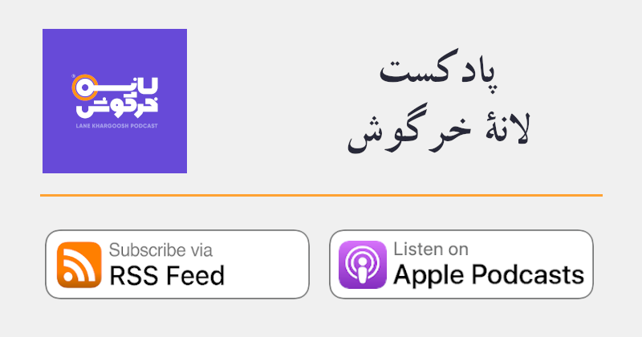

اگر یک فرد یا نهاد متقلّب بخواهد تراکنشی را به نفع خود از یکی از بلاکهای زنجیرۀ بیتکوین حذف یا به آن اضافه کند، باید اثباتِ کار بلاکِ مورد نظر و همۀ بلاکهایی که بعد از آن ایجاد شدهاند را دوباره از اول محاسبه کند. علاوه بر این، برای متقاعد ساختن نودهای شبکه، مبنی بر معتبر بودن بلاکهایی که بهتازگی ایجاد شدهاند، باید بلاکهای جدید را سریعتر از همۀ ماینرهای حاضر در شبکه تولید کند. زیرا نودهای شبکۀ بیتکوین همواره طولانیترین زنجیرهای که دارای بیشترین اثباتِ کار است را بهعنوان زنجیرۀ معتبر قبول میکنند.
یک ماینرِ متقلّب، برای رسیدن به این هدف باید ۵۱ درصد از قدرتِ استخراج شبکۀ بیتکوین را در اختیار داشته باشد. به عبارت دیگر، توان محاسباتی او باید از مجموع توان محاسباتی سایر ماینرها بیشتر باشد. اجرای چنین حملهای روی شبکۀ بیتکوین تقریباً ناممکن است، بنابراین شبکۀ بیتکوین در برابر کلاهبرداری و برگشت خوردن تراکنشها مصون است. برگشتناپذیری تراکنشها بدان معنی است که بازپسگیری بیتکوینهای ارسال شده -پس از تأیید- بههیچوجه ممکن نیست.
ترس از حملۀ ۵۱ درصد باعث میشود که میزان توان هش موجود در شبکه اهمیت داشته باشد، زیرا نرخ توان هشِ موجود در شبکه درواقع نمایانگر کل ظرفیت استخراج شبکۀ بیتکوین است و هرچه این عدد بیشتر باشد، اجرای یک حملۀ ۵۱ درصدی گرانتر خواهد بود. بنابراین میزان توان هشِ موجود در شبکه، معیاری برای سنجشِ امنیت شبکه در برابر حملۀ ۵۱ درصد است.
آدام بک یک متخصص علم رمزنگاری و یک سایفرپانک است. او در سال ۱۹۷۰ در شهر لندن به دنیا آمد و در حال حاضر در کشور مالتا زندگی میکند. او سیستم «هَشکَش» را برای مقابله با اسپم طراحی و پیادهسازی کرد و این سیستم امروزه در صنعت استخراج بیتکوین و برخی از آلتکوینها مورد استفاده قرار میگیرد. وی از اولین افرادی است که روی بیتکوین مشغول به کار شد و در سال ۲۰۰۹ شخص ساتوشی ناکاموتو با او تماس گرفته و نظر او را در مورد استفاده از هَشکَش در بیتکوین جویا شده بود. او یکی از بنیانگذاران شرکت بلاکاستریم است. این شرکت در گذشته یکی از مشارکتکنندگان اصلی در بهبود نرمافزار بیتکوین بوده است.
آدام بک بهعنوان مدیرعامل شرکت بلاکاستریم این شرکت را به یکی از توسعهدهندگان پیشرو در شبکۀ لایتنینگ، زنجیرۀ جانبیِ «لیکوئید»، و دیگر پروژههای جالب، تبدیل کرد. مشارکت او در بیتکوین و علم رمزنگاری او را امروز به یکی از کارشناسان اصلی این حوزه تبدیل کرده است. او بهطور فعال در مورد موضوعاتی از قبیل حریم خصوصی، مقیاسپذیری بیتکوین، و آیندۀ توسعۀ بیتکوین سخنرانیهایی برگزار میکند.
یک امضای تطبیقی امضایی است که به منظور افشای یک دادۀ مخفی با یک امضای اولیه ترکیب میشود. امضای تطبیقی به دو طرف یک معامله اجازه میدهد بدون نیاز به اعتماد میان طرفین، دو تکه دادۀ حساس را در زمان مناسب برای یکدیگر افشا کنند. این روش در معاملات همزمان، مانند مبادلات تهاتری کاربرد دارد.
میتوان با یک دادۀ محرمانه، یک امضای تطبیقی، و یک امضای معمولی یک امضای تطبیقی ایجاد کرد. با معلوم بودن هر ۲ داده از ۳ دادۀ این چیدمان، میتوان سومی را محاسبه کرد. یک ویژگی قدرتمند امضاهای تطبیقی این است که یکی از طرفین معامله میتواند بر اساس یک داده محرمانه یک امضای تطبیقی ایجاد کند، و طرف مقابل نیز میتواند امضای تطبیقی خود را بر اساس همان دادهها تولید کند بدون اینکه نیاز باشد از دادههای محرمانۀ طرف مقابل اطلاع داشته باشد.
به عنوان مثال، آوا و بابک قصد دارند یک بیتکوین با یکدیگر تهاتر کنند. ابتدا، آوا یک امضای تطبیقی از تراکنش امضاء نشدهای که ۱ بیتکوین به بابک ارسال میکند را به او میدهد. این تراکنش هنوز توسط آوا امضاء نشده است، بنابراین هنوز امکان منتشر شدن روی شبکۀ بیتکوین را ندارد، ولی به مقدار محرمانهای که در آن وجود دارد پایبند است. در مرحلۀ بعد، بابک تراکنشی ایجاد میکند که در آن ۱ بیتکوین به آوا ارسال میشود. بابک میتواند امضای تطبیقیِ خود را با استفاده از امضای تطبیقیِ آوا بسازد. این امضای تطبیقی به همان مقدار محرمانه پایبند است، هرچند بابک از آن اطلاع ندارد. بابک تراکنش خود و امضای تطبیقی خود را با آوا به اشتراک میگذارد.
از آنجا که آوا امضای تطبیقی و دادۀ مخفی را در اختیار دارد، قادر است امضایِ تراکنش بابک را تولید کند و با ارسال تراکنش به شبکه، ۱ بیتکوین خود را مطالبه کند. بابک به محض مشاهدۀ تراکنش امضا شدهاش روی زنجیرۀ بیتکوین، میتواند با استفاده از امضای تطبیقی و امضای اولیۀ خود، دادۀ مخفی را محاسبه کند. با استفاده از این دادۀ مخفی او میتواند امضای تراکنش آوا را بدست آورد. بابک اکنون میتواند تراکنش آوا را امضاء و او نیز ۱ بیتکوین خود را با ارسال این تراکنش به شبکه مطالبه کند.
آدرس برای دریافت بیتکوین بکار گرفته میشود و بهصورت رشتهای از حروف و اعداد به نمایش در میآید. معمولاً مفهوم آدرس و کلید عمومی به جای یکدیگر بکار گرفته میشوند ولی آدرس درواقع هَشِ یک کلید عمومی است. در حال حاضر برای دریافت بیتکوین از آدرسها، و نه کلیدهای عمومی استفاده میشود. از نظر فنی یک آدرس علاوه بر هشِ کلید عمومی، اطلاعات بیشتری را در خود ذخیره میکند. کاربران میتوانند توسط یک کیف پول بیتکوین به هر مقدار که نیاز داشته باشند، آدرس تولید کنند. کاربران کیف پولها همچنین قادرند به آدرسهای دیگران بیتکوین ارسال کنند. هنگامی که بیتکوین به یک آدرس ارسال میشود، فقط صاحب کلید خصوصیای که این آدرس از آن مشتق شده، قادر به خرج کردن یا ارسال آن برای دیگران است.
پیشنهاد میشود برای حفظ حریم خصوصی از یک آدرس دو بار برای دریافت بیتکوین استفاده نشود. هروقت قصد دریافت بیتکوین دارید، باید از یک آدرس جدید که توسط کیف پول شما ساخته شده است استفاده کنید.
از نظر فنی، هر آدرس نمایندۀ یک اسکریپت است و برای نشان دادن نوع اسکریپت خود کُدبندی، و یک پیشوند مشخص به آن اضافه میشود. آدرسهای قدیمی از روش کُدبندی بِیس-۵۸ استفاده میکنند و اگر هشِ یک کلید عمومی باشند، به آنها آدرسهای نوع P2PKH گفته میشود و با شمارۀ «۱» شروع میشوند. آدرسهای قدیمی به ندرت هشِ یک اسکریپت هستند و در این صورت با شمارۀ «۳» شروع میشوند. در حال حاضر همۀ آدرسهای نسخۀ صفر سگویت از روش کُدبندی بِش-۳۲ استفاده میکنند و با پیشوند «bc1q» شروع میشوند.
هنگامی که یک کاربر آدرسی را در کیف پول خود وارد میکند و قصد ارسال بیتکوین به این آدرس را دارد، کیف پول نوع آدرس را بررسی و اسکریپت موردنیاز را تولید میکند. این اسکریپت scriptPubKey نامیده میشود و به مقدار بیتکوینی که باید به این آدرس ارسال شود اضافه میشود. این دو داده، یعنی مقدار بیتکوینی که قصد داریم ارسال کنیم، و scriptPubKey در کنار هم، یک خروجی تراکنش را میسازند.
یک کامپیوتر یا کیف پول بیتکوینِ ایزوله به دستگاهی گفته میشود که هیچگونه رابطی برای اتصال به شبکۀ محلی یا شبکۀ جهانی اینترنت نداشته باشد. اغلب کامپیوترها حتی اگر از طریق کابل یا شبکۀ وایفای به اینتنرنت متصل نباشند نیز دارای سختافزار مورد نیاز برای اتصال به اینترنت هستند، و این به تنهایی یک آسیبپذیری امنیتی محسوب میشود. برای رفع این مشکل و فراهم کردن شرایط ایدهآل غالباً این دستگاهها بدون سختافزارهای ارتباطی شبکه طراحی میشوند یا این سختافزارها بعداً توسط کاربران به صورت فیزیکی از آنها جدا میشوند. دسترسی غیرمجاز به دادهای که در یک محیط ایزوله نگهداری میشود عملاً غیرممکن است.
کاربران بیتکوین و همچنین شرکتهای سازندۀ کیف پولهای سختافزاری امن بیتکوین از این روش برای نگهداری و محافظت از کلیدهای خصوصی استفاده میکنند. با بهکار گیری از تراکنشهایی که امضا آنها ناقص هستند و کیف پولهای ناظر میتوان یک کلداستوریج تکامضایی یا چندامضایی ایزولۀ بیتکوین را راهاندازی کرد. در این روش ارتباط بین دستگاه ایزوله و دستگاهی که به اینترنت متصل است از طریق کدهای کیوآر و دوربین صورت میپذیرد و ویژگی کاربردی بودنِ کیف پول در کنار امنیت کلید خصوصی همزمان برای کاربر کیف پول فراهم میشود. برای راهاندازی یک کیف پول ایزوله میتوان از روشهای متنْ بازی که کیف پولهای نرمافزاری و یک لپتاپ را برای ایجاد یک کلداستوریج امن با یکدیگر ترکیب میکنند، و همچنین برخی از کیف پولهای سختافزاری موجود در بازار استفاده کرد.
پس از ظهور بیتکوین، شبکۀ غیرمتمرکز و سیستم پرداخت همتا-به-همتای آن الهامبخش پدید آمدن یک کلاس دارایی جدید شد. بازارهای کریپتوکارنسی در نتیجۀ موفقیت بیتکوین پدید آمدند و این بازار در حال حاضر شامل هزاران پروژه مختلف است. به این پروژهها و کوینها که از سال ۲۰۱۱ و به منظور از نو اختراع کردن بیتکوین و اضافه کردن ویژگیهای جدید به آن بوجود آمدهاند، آلتکوین گفته میشود. نخستین آلتکوین در آوریل سال ۲۰۱۱ و با بهخدمت گرفتن کُد و سیستم بلاکچین بیتکوین بهوجود آمد و Namecoin نام داشت.
هیچکدام از جایگزینهای بیتکوین که از سال 2011 به بعد در حال معرفی شدن هستند، نتوانستند به قیمت، کاربری، و یا امنیت بیتکوین نزدیک شوند و بهصورت عمومی مورد استفاده قرار گیرند. یکی از مهمترین دلایل این امر متمرکز بودن این پروژهها است.
ناشناس به فردی میگویند که هویت واقعیاش مشخص نیست. یک فرد ناشناس از نام مستعار استفاده میکند و هویت خود را برای انجام فعالیتهای عمومی فاش نمیکند. ناشناس بودن و ناشناس ماندن در عصر اینترنت بسیار دشوار است زیرا تقریباً همۀ خدمات بانکها، کارفرمایان، رسانههای اجتماعی، و شرکتهای تلفن منوط به ارائه اطلاعات هویتی شخصی است.
ریزتراشهای است که برای یک کاربرد خاص ساخته شده است. ماینرهای ASIC بیتکوین، سختافزاری هستند که این تراشهها درون آنها قرار گرفته است و فقط به منظور هَش کردن بلاکهای زنجیره و پیدا کردن یک عدد اثباتِ کار معتبر بکار گرفته میشوند. در اصل تنها کاربرد این ریزتراشهها اجرای عملگر SHA-256 روی سربرگ بلاکهای زنجیرۀ بیتکوین است.
از آنجا که امروزه صنعت استخراج بیتکوین به یک صنعت بزرگ تبدیل شده، سختیِ شبکه به حدی افزایش یافته است که دیگر بکارگیری از CPU یا GPU برای استخراج بیتکوین سودآور نیست. در صنعتی که کوچکترین بهبود در کارایی ابزارهای استخراج موجب برتری میشود، بکارگیری از تراشهای که فقط برای انجام یک کار بخصوص طراحی و ساخته شده است برای افرادی که در صنعت استخراج بیتکوین مشغول هستند دستاوردهای بزرگی به دنبال دارد. دلیل انفجار توان هشِ شبکۀ بیتکوین نوآوریهای سریعی است که در طول دهۀ گذشته در صنعت ASIC رخ داده و موجب تقویت هرچه بیشتر امنیت بیتکوین شده است.
همۀ نود (گره)های شبکۀ همتا-به-همتای بیتکوین بهمنظور ایجاد مجموعۀ خروجیهای خرجنشده، تمام بلاکها و تراکنشها را از اولین (بلاک پیدایش) تا آخرین بلاک مورد بازبینی قرار میدهند و درستی آنها را بررسی میکنند که به آن دانلود زنجیرۀ بلاک برای بار اول گفته میشود. پس از پایان یافتن این مرحله ذخیره کردن یا نکردن بلاکهای زنجیرۀ بیتکوین بستگی به نیازهای فرد یا شرکتی دارد که نود (گره) مورد نظر را راهاندازی کرده است. این موضوع نود آرشیوی که همۀ بلاکهای زنجیره را ذخیره میکنند و نودهای کمحجمشده که آنها را پس از اعتبارسنجی نادیده میگیرند و ذخیره نمیکنند متمایز میکند.
برای استخراج سابقۀ تراکنشهای یک کیف پول بیتکوین پس از بازیابی آن برای اولین بار، و همچنین راهاندازی یک بلاک اکسپلورر با امکانات کامل به یک نود آرشیوی نیاز است. نودهای آرشیوی وظیفۀ ارسال بلاکها به نودهایی که به تازگی به شبکه میپیوندند و در مرحلۀ دانلود زنجیرۀ بلاک برای بار اول هستند را نیز بر عهده دارندکه خود موجب بالا رفتن ترافیک مصرفی نودهای آرشیوی میشود. تنظیم، یا اعمال محدودیت بر روی مقدار ترافیک ارسالی به شبکه، در اختیار مسئول نود (گره)ها است.
این تئوری اقتصادی در اواخر قرن نوزدهم توسط اقتصاددانان اتریشی توسعه یافت. این تئوری برای تعیین ارزش یک کالا، بر روی اهمیت کاربرد آن برای مصرف کننده تأکید دارد. این تئوری جدیدِ ارزش توسط کارل منگر در سال ۱۸۷۱ منتشر شد. دقیقاً همان سالی که ویلیام استنلی جونز، اقتصاددان انگلیسی بهطور مستقل نظریۀ مشابهی را منتشر کرد.
منگر معتقد بود که ارزش، یک مقولۀ کاملاً سلیقهای است: ارزش یک محصول در توانایی آن برای برآورده ساختن نیازهای انسانی تعیین میشود. علاوه بر این، هرچه یک محصول فراوانتر باشد، برای مصارفی که از اهمیت کمتری برخوردارند مورد استفاده قرار خواهد گرفت. هرچه یک محصول کمیابتر شود، مصارف کماهمیتی که از آن میشده نیز کمکم منسوخ میشوند. (این ایده مربوط به قانون تقاضا میشود که میگوید زمانی که قیمت چیزی افزایش مییابد، تقاضای آن از طرف مردم کم میشود. این قانون یکی از مهمترین قوانین اقتصاد است).
نظریۀ ارزش برای «معمای الماس و آب» پاسخی ارائه میکند. این پارادوکس توسط آدام اسمیت مطرح شد، اما خود او قادر به حل آن نبود. اسمیت به این نکته اشاره کرد که هرچند زندگی بدون آب ممکن نیست و هر انسانی میتواند بدون الماس به زندگی خود ادامه دهد، اما الماس از آب بسیار ارزشمندتر است. تئوری «کاربردِ حاشیهایِ» ارزش، این پارادوکس را حل میکند. در کل آب بسیار ارزشمندتر از الماس است و هر فرد فقط از یک مقدار مشخص از آبی که به دستش میرسد برای زندهماندن استفاده میکند. اما چون آب در طبیعت فراوان، و الماس کمیاب است ارزش حاشیهای ۱۰۰ گرم الماس از ارزش حاشیهای ۱۰۰ میلیلیتر آب بیشتر است.
این ایده که ارزش یک کالا بر اساس کاربرد این کالا برای صاحب آن تعیین میشود با تئوری ارزش کارل مارکس که ادعا میکند ارزش هر کالایی بر اساس مقدار کاری که برای ساخت آن انجام گرفته محاسبه میشود، در تناقض است.
یکی از اولین پیشنهادهایی است که برای ایجاد یک «سیستم پول نقد غیرمتمرکز و ناشناس» توسط فردی به نام وِی دای در نوامبر سال ۱۹۹۸ میلادی در گروه ایمیلی سایفرپانکها مطرح شد. ساتوشی ناکاموتو ده سال بعد در وایتپیپر بیتکوین به این روش پیشنهادی وِی دای ارجاع داده است.
مقالۀ پیشنهادی بی-مانیِ وِی دای از دو پروتکل تشکیل شده بود. پروتکل اول برای خلق پول، از روش اثباتِ کاری که بر پایۀ هَش کَش بنا شده بود استفاده میکرد. روشی که در ماه مِه سال ۱۹۹۷ میلادی در همان گروه ایمیلی توسط آدام بَک پیشنهاد شده بود. در این پروتکل تراکنشهای نقل و انتقالِ پول به همۀ حاضرین شبکه که یک نسخه از حساب همه را در اختیار دارند ارسال میشود، اما در صورت بروز اختلاف میان طرفین، به یک نفر سوم در مقام داور نیاز است.
پروتکل دوم شامل زیرمجموعهای از شرکتکنندگان در شبکه میشد که با عنوان خدمترسانان (سِرورها) شناخته میشوند. هرکس میتواند با گرو گذاشتن مبلغی به عنوان وثیقه به یکی از این سرورها تبدیل شود. این وثیقه برای اطمینان از درستکاری سرور در نظر گرفته شده بود و در صورت رعایت نشدن قوانین پروتکل مبلغی به عنوان جریمه از آن کسر میشد. این سرورها از دفتر کل حسابداری نگهداری میکنند و کاربران در زمان ایجاد و ارسال تراکنش نقل و انتقالِ پول به شبکه، اطلاعات حساب و موجودی خود را از آنها دریافت میکنند. همۀ شرکتکنندگان در این شبکه میتوانند برای جلوگیری از وقوع تورم برنامهریزی نشده، بهصورت مستقیم و بدون واسطه مقدار پولی که خلق شده (عرضۀ پول) را مورد بررسی و بازبینی قرار دهند.
روش پیشنهادی جایگزین وِی دای برای خلق پول سازوکاری شبیه به حراج داشت که شرکتکنندگان آن برای راهحل مسائلی که محاسبات پیچیدهای دارد، با یکدیگر رقابت میکنند و پیشنهاد خرید میدهند. ده سال بعد ساتوشی ناکاموتو این سازوکار را از رقابت در حراجی به رقابت برای برنده شدن بلیت بختآزمایی تبدیل کرد و اساس خلق بیتکوینهای جدید را بر آن بنا ساخت.
اگر یک بهروزرسانی روی یک سیستم انجام شود و نسخۀ قبلی را بلااستفاده نکند، به آن یک ارتقاء با سازگاریِ عقبرو میگویند. سازگاریِ عقبرو زمانی ممکن خواهد بود که یک بروزرسانیْ قوانین معتبر فعلی را در نسخۀ جدید، نامعتبر کند. اما اگر در یک بهروزرسانیْ قوانین نامعتبر فعلی، معتبر شوند سازگاریِ عقبرو حاصل نخواهد شد. سازگاری عقبرو به کاربران در پذیرفتن یا نپذیرفتن تغییرات جدید، و همچنین زمان بهکارگیری آنها اختیار میدهد و روش پیشنهادی برای ایجاد تغییرات در سیستمهای غیرمتمرکز و مبتنی بر اجماع است. وقتی یک بهروزرسانی در پروتکل بیتکوین سازگاریِ عقبرو داشته باشدْ سافت فورک، در غیر این صورت هارد فورک نامیده میشود.
برای نمونه، لامپهای LED نسبت به لامپهای رشتهایِ معمولی برتریهای زیادی دارند. با این حال میتوان لامپهای LED را در سوکتهای قدیمی لامپهای رشتهای پیچاند و از آنها استفاده کرد. بنابراین ارتقاء لامپهای موجود در منازل موجب بلااستفاده شدن لامپهای رشتهای نخواهد شد.
توسعهدهندگان پروتکل بیتکوین همواره در حین طراحی و اجرای تغییرات و قابلیتهای جدید تلاش میکنند تا این بهروزرسانیها از روش سازگار با قوانین گذشته انجام شود تا کاربران مجبور به پذیرش قوانین جدید نباشند. برای نمونه یکی از مهمترین بهروزرسانیهای قوانین شبکۀ بیتکوین یعنی سگویت در سال ۲۰۱۷ از راه سافت فورک روی شبکه اجرا شد.
یک روش کُدبندی است که از ۵۸ کاراکتر از الفبای انگلیسی شامل حروف کوچک و بزرگ
A-Z و ارقام ۹-۱ استفاده میکند. این روش کدبندی برای جلوگیری از سردرگمی کاربران، عدد صفر، حرف O بزرگ، حرف I بزرگ، و حرف l کوچک را حذف کرده است.
یکی از گونههای این روش کدبندی، روش بِیس-۵۸ با قابلیت جمعآزمایی است که برای نمایش آدرسهای قدیمی بیتکوین و کلیدهای خصوصی در قالب WIF استفاده میشود. بِیس-۵۸ با قابلیت جمعآزمایی با بِیس-۵۸ کاملاً یکسان است، فقط یک جمعآزمای 4 بایتی به انتهای آن، و یک پیشوند برای مشخص کردن نسخه به ابتدای آن اضافه شده است. در این صورت پیشوندْ نمایانگرِ اصلِ دادۀ کدبندی شده است. برای نمونه آدرسهای P2PKH با ۱ شروع میشوند، آدرسهای P2SH با ۳ شروع میشوند، و کلیدهای خصوصی در قالب WIF دارای پیشوند ۵ هستند.
روشی است که برای کُدبندی تراکنشهایی که به صورت ناقص امضا شدهاند (PSBT) بهکار گرفته میشود. این روش شامل ۶۴ کاراکتر الفبای انگلیسی، یعنی همۀ حروف بزرگ و کوچک، ارقام۹-۰، و کاراکترهای + و / است. این روش با توجه به تعداد کاراکترهای زیادی که به خدمت میگیرد قادر است دادهها را بهصورت بسیار بهینه نمایش دهد، اما خوانایی پایینی دارد. بنابراین این روش اغلب برای کدبندی دادههایی بهکار میرود که قرار نیست توسط انسانها خوانده شوند و معمولاً از روش اسکن کدهای QR بین دستگاهها منتقل میشود.
ارسال گروهیِ بیتکوین به معنی ادغام تراکنشهای جداگانه در یک تراکنش، با چند خروجی است. از آنجا که کارمزد تراکنشهای بیتکوین براساس سایز تراکنش محاسبه میشود، ادغام چندین تراکنش در یک تراکنش واحد میتواند سایز تراکنش را کاهش، و موجب صرفهجویی در هزینهها شود. برای نمونه اگر آوا بخواهد به بابک ۰/۵ بیتکوین، به حمید ۰/۳ بیتکوین، و به داوود ۰/۲ بیتکوین ارسال کند، میتواند بجای ساختن ۳ تراکنش که هرکدام ۲ خروجی دارند -یکی برای پرداخت و دیگری باقیمانده،- یک تراکنش با یک ورودی ۱ بیتکوین و سه خروجی بسازد.
مزایای ادغام تراکنشها در مقیاسهای بزرگتر افزایش مییابد. برای نمونه، یک صرافی میتواند درخواستِ برداشت ۱۰۰ نفر از مشتریان خود را با ساختن ۱۰۰ تراکنش جداگانه انجام دهد، و همچنین میتواند یک تراکنش با صد خروجی بسازد. گزینۀ دوم موجب صرفهجویی قابل توجهی در کارمزد تراکنش میشود.
روشی برای کُدبندی آدرسهای سگویت و درخواستهای پرداخت روی شبکۀ لایتنینگ است. این روش از ۳۲ کاراکتر الفبای انگلیسی؛ حروف کوچک a-z و اعداد 9-0، و حذف عدد ۱ و حروف b ،i، و o -به منظور جلوگیری از سردرگمی کاربران،- تشکیل شده است. این روشِ کُدبندی شامل مکانیزم تشخیص خطا است.
این روش کُدبندی درواقع نسخۀ اصلاح شدۀ روش بِش-۳۲ است و تقریباً هیچ تفاوتی با آن ندارد. این روش خطای موجود در مکانیزم تشخیص خطای بِش-۳۲ را برطرف و امنیت را با تغییر مقدار ثابتی مورد استفاده قرار گرفته بود، بالاتر میبرد. روش بِش-۳۲ام برای کُدگذاری آدرسهای نسخۀ ۱ سگویت که توسط ارتقاء تپروت معرفی خواهد شد، مورد استفاده قرار خواهد گرفت.
یک کتابخانۀ نرمافزاری است که میتواند بهصورت پایگاه دادهای با کارایی بسیار بالا مورد استفاده قرار گیرد. برکلی دیبی تا قبل از انتشار نسخۀ ۱ .۸ .۰ بیتکوین کُر برای ذخیرۀ ایندکس بلاکها و تراکنشها و همچنین اطلاعات کیف پول کاربر (کلیدهای عمومی و خصوصی) مورد استفاده قرار میگرفت.
در سال ۲۰۱۳ توسعهدهندگان بیتکوین کُر تصمیم گرفتند برای رفع مشکلاتی که استفاده از برکلی دیبی روی کامپیوترهای قدیمی -که نوشتن و خواندن از هارد دیسکشان کند بود- پدید میآورد، از پایگاه دادۀ دیگری به نام لِوِلدیبی برای ذخیرۀ ایندکس بلاکها و تراکنشها استفاده کنند. لِوِلدیبی پایگاه دادۀ سریع و متنْ بازی است که توسط شرکت گوگل نگهداری و توسعه داده میشود.
برکلی دیبی در حال حاضر همچنان برای ذخیرۀ اطلاعات کیف پول کاربر در نرمافزار بیتکوین کُر مورد استفاده قرار میگیرد.
برادرِ بزرگ یک شخصیت خیالی و نمادین در رمان ۱۹۸۴ اثر جرج اوروِل است که در سال ۱۹۴۹ منتشر شد. او ظاهراً رهبر منطقهای به نام اقیانوسیه است. جایی که دولت تمامیتخواه آن به نام اینگساک بر شهروندان سلطه کامل دارد. در جامعهای که اوروِل آن را توصیف میکند همۀ شهروندان تحت شنود و نظارت تمام وقت مقامات قرار دارند و این کار توسط تلویزیونهایی که در محل زندگی و کار این افراد قرار داده شده است انجام میپذیرد. شعار «برادر بزرگ در حال تماشای توست» در همه جای شهر به نمایش گذاشته شده است و همواره این موضوع را به مردم یادآوری میکند.
در فرهنگ مدرن اصطلاح برادرِ بزرگ با سوءاستفاده از قدرت دولتی برای سرکوب آزادیهای مدنی، و شنود و نظارت دستهجمعی از همه مترادف است؛ مفهومی که تا قبل از افشاگری ادوارد اسنودن، کارمند سابق آژانس امنیت ملی ایالات متحده توهم توطئه به شمار میرفت اما بعد از آن به یک حقیقت پذیرفته شده بدل شد.
دستگاه اعداد دودویی یا باینری سیستمی است که فقط از دو عدد استفاده میکند: صفر و یک. کامپیوترها در دستگاه اعداد دودویی کار میکنند، به این معنی که آنها دادهها را با استفاده از صفر و یک محاسبه و ذخیره میکنند. به عبارت دیگر ورودیهایی مانند حرکت ماوس، فشار دادن دکمههای صفحهکلید و هرگونه اطلاعات دیگری که توسط کامپیوترها پردازش میشود در پایینترین سطح به سیستم دودویی تبدیل میشود.
از آنجا که طول اعداد باینری از اعداد دهدهی (سیستم رایج نمایش اعداد) یا هگزادسیمال بلندتر است، معمولاً آنها را برای سهولت در خواندن و نوشتن به سیستم اعشاری یا هگزادسیمال تبدیل میکنند. به عنوان نمونه، عدد ۷۵ را میتوان بهصورت 01001011 در سیستم باینری، و 4b در سیستم هگزادسیمال نمایش داد.
بیپ-۳۹، پیشنهاد بهبود بیتکوین با کُد ۳۹ است و استاندارد کلمات بازیابی در آن مطرح شده است. کلمات بازیابی روشی استاندارد برای تبدیل بذر کلیدخصوصی بیتکوین به مجموعهای ۱۲ تا ۲۴ کلمهای است. بنابراین برای بازیابی همۀ کلیدهای خصوصی یک کیف پول بیتکوین، در اختیار داشتن این کلمات به تنهایی کفایت میکند.
در حالی که استاندارد بیپ-۳۹ تقریباً توسط همۀ کیف پولهای محبوب بیتکوین مورد پذیرش قرار گرفته است، اما همچنان در نرمافزار بیتکوین کُر پیادهسازی نشده و از نظر مهندسی نقاط ضعفی دارد. با این حال هیچگونه نقطۀ ضعف امنیتی در آن نیست و میتوان از آن بهعنوان راهی مناسب برای پشتیبانگیری از کیف پولهای بیتکوین استفاده کرد.
نام اختصاریِ «رقمِ دوتایی» است و مقدار آن یا یک است یا صفر. یک بیت کوچکترین واحد دادههای دیجیتالی است. همۀ دادههای کامپیوتری بهصورت بیت ذخیره میشوند. بیتها در دستههای ۸ تایی با یکدیگر گروهبندی میشوند، بنابراین هر بایت از ۸ بیت تشکیل شده است.
ممکن است شما با مگابایت (MB) و گیگابایت (GB) آشنا باشید. یک مگابایت یک میلیون بایت یا ۸ میلیون بیت است. به همین ترتیب، یک گیگابایت یک میلیارد بایت یا ۸ میلیارد بیت است. این بدان معناست که وقتی سایز یک فایل ۱ مگابایت باشد، یعنی این فایل از ۸ میلیون صفر و یک تشکیل شده است.
گاهی اوقات، بیت به یکی از واحدهای شمارش بیتکوین اشاره دارد. در این صورت هر بیت، ۱۰۰ ساتوشی یا ۱ میلیونیوم ۱ بیتکوین است. این واحد اکنون با گذشت زمان و به دلیل استفاده نشدن تقریباً منسوخ شده است.
در سال ۱۹۹۸، نیک زابو دانشمند علوم کامپیوتر و مخترع مفهوم قرارداد هوشمند، ایدۀ یک سیستم پرداخت غیرمتمرکز دیجیتال را معرفی، و نام آن را بیت گُلد گذاشت. زابو در پیشنویس وایتپیپر این سیستمِ پیشنهادی که هیچگاه بهصورت رسمی منتشر نشد، آن را نه تنها به عنوان روشی برای پرداخت بلکه به عنوان ابزاری برای ذخیرۀ ارزش در طولانی مدت توصیف میکند که از اعتماد به نهاد قدرت بینیاز است.
زابو با بیت گُلد سیستمی را پیشنهاد میکند که قادر به ایجاد زنجیرههایی از اثباتِ کارِ جعلناپذیر است که با بهکارگیری از برچسبهای زمانی (زماننما) و امضاهای دیجیتالی، به کلید عمومی (یا آدرس) فردی که آنها را پیدا کرده تخصیص داده میشوند. از نظر او اینکه این اثباتِ کارها کمیاب بودند، تولید آنها دشوار بود، هرکس میتوانست شخصاً آنها را مورد بازبینی قرار دهد، از آنها نگهداری، و برای دیگران ارسال کند آنها را ارزشمند میکرد.
نیک زابو در یکی از پُستهای وبلاگ خود به کاستیهای پولهای فیات که ارزش آنها توسط دولت و بهطور کلی نهاد قدرت تعیین میشود، و همچنین اشکالات فلزات گرانبها مانند طلا و اینکه چرا نمیتوان از آنها بهعنوان واسطِ معامله استفاده کرد، اشاره میکند. او موضوع را اینگونه مطرح میکند: «وجود پروتکلی که در آن رشتهای از بیتها بهصورت آنلاین و به روشی جعلناپذیر و کمترین وابستگی به اعتماد یک نفر سوم (مانند دولتها و نهادها) خلق شوند و ذخیرۀ ایمن، نقل و انتقال، و بازبینی و اعتبارسنجی آنها نیز به اعتماد فرد یا نهادی نیاز نداشته باشد، بسیار مفید است. من نام آن را بیت گُلد میگذارم.»
به دلیل محدودیتهایی که در بخش شبکۀ توزیعشدۀ بیت گُلد وجود داشت، این پیشنهاد هرگز به نتیجه نرسید اما، ساتوشی ناکاموتو در سال ۲۰۱۰ در مطلبی در یک انجمن آنلاین اینگونه بیان کرد: «بیتکوین پیادهسازی ایدۀ بی-مانیِ وِی دای، و بیت گُلدِ نیک زابو است.»
بیتکوین یک پول شبیه به بقیه پولهای رایج در دنیا است با این تفاوت کلیدی که تحت نظارت هیچ بانک مرکزی و تحت کنترل هیچ فرد یا نهادی نیست. شبکۀ بیتکوین یک شبکۀ همتا-به-همتا، و مکانیسم اجماع آن بر پایۀ اثباتِ کار و یک دفتر کل غیرمتمرکز به نام بلاکچین است. بیتکوین در تاریخ ۳۱ اکتبر سال ۲۰۰۸ (مطابق با دهم آبان ۱۳۸۷ خورشیدی) توسط خالق ناشناس آن یعنی ساتوشی ناکاموتو معرفی، و شبکۀ آن نیز در تاریخ ۳ ژانویۀ سال ۲۰۰۹ راهاندازی شد.
عرضۀ بیتکوین به ۲۱ میلیون کوین محدود، سیاست پولی آن ثابت، و از قبل برنامهریزی شده است. هر چهار سال، نرخ عرضۀ آن به نصف کاهش پیدا میکند و در نهایت به صفر میرسد. این یکی از خصوصیات منحصربهفرد بیتکوین در مقایسه با دیگر پروژههای آلتکوین است که عرضۀ آنها بهصورت مداوم، غیرقابل پیشبینی، و بی حد و حصر ادامه دارد.
بیتکوین تحت کنترل یک نهاد مرکزی نیست. به جای به خدمت گرفتن معماری سرویسدهنده-سرویسگیرنده و قرار دادن یک پایگاهدادۀ مرکزی در مرکز شبکه و فراهم کردن دادههای مورد نیاز به کاربران شبکه، هریک از کاربران حاضر در شبکۀ بیتکوین از یک نسخه از پایگاه دادۀ دفتر کل حسابداری بیتکوین بر روی دستگاهشان نگهداری میکنند. این قابلیت به کاربران این امکان را میدهد که موجودیها و تاریخچۀ نقل و انتقال همه بیتکوینها را بهطور مستقل بررسی کنند. زنجیرۀ بلاکهای بیتکوین بهصورتی طراحی شده است که فقط میتوان به آن بلاکهای جدید را اضافه کرد و بههیچوجه نمیتوان بلاکهای قدیمی را تغییر داد یا حذف کرد.
از آنجا که بیتکوین نام پروتکل و همچنین نام واحد پولی بیتکوین است، بزرگ یا کوچک نوشتن حرف اول آن بستگی به بستر معنایی متن دارد. بیتکوین با حرف اولِ بزرگ اشاره به شبکۀ بیتکوین و کلاس دارایی دارد. از طرف دیگر بیتکوین با حرف اولِ کوچک به واحد پولی و همچنین مقادیری که در کیف پولها نمایش، و جابجا میشود اشاره دارد.
بیتکوین کُر رایجترین پیادهسازی پروتکلِ بیتکوین است و سایر پیادهسازیها برای اطلاع از روش نگهداری از قوانین اجماع و همچنین روش بهروزرسانی، به آن مراجعه میکنند. اکثر کاربران برای دریافت سورسِ بیتکوین آن را دانلود میکنند. بیتکوین کُر نرمافزاری برای نودِ شبکه و یک کیف پول برای کاربران فراهم میکند. البته اکثر کاربران ترجیح میدهند از آن فقط بهعنوان نرمافزار نود استفاده کنند و برای کیف پول، نرمافزارهای دیگری را به خدمت بگیرند. جایگزینهای دیگری نیز برای این پیادهسازی وجود دارد، اما این پیادهسازی همچنان از نظر محبوبیت و استفادۀ کاربرانْ غالب است. هرکس مایل به اجرای آن بهعنوان نرمافزار نود شبکه باشد میتواند از طریق صفحه گیتهاب یا وبسایت این پروژه، به آن دسترسی پیدا کند.
بیتکوین کُر توسط ساتوشی ناکاموتو ایجاد شده است و با وجود اینکه مالکیت آن به توسعهدهندگان این نرمافزار منتقل شده و قابلیتهای زیادی به آن اضافه شده است، نسخۀ آخر و نسخۀ اصلی ساتوشی همچنان با یکدیگر سازگار هستند.
بیتکوین کُر یک نرمافزار منبع باز (اپن سورس) است. این بدان معناست که هرکس میتواند کُد آن را تکثیر و به دلخواه خود ویرایش کند. اگر یک توسعهدهنده قصد دارد کُد بیتکوین را بهبود بخشد میتواند تغییرات ایجاد شده را منتشر، و پیشنهاد ادغام شدن آنها را به توسعهدهندگان پروژه بدهد. بسیاری از توسعهدهندگان از طریق نوشتن، بازبینی، و بحث و بررسی در مورد قسمتهای مختلف سورس این نرمافزار در آن مشارکت میکنند. با این حال هیچگونه مرجع مشخصی برای تأمین منابع مالی توسعهدهندگان این نرمافزار وجود ندارد. در عوض شرکتها و افرادی که در زمینۀ بیتکوین فعالیت میکنند بخشی از هزینههای این افراد را از طریق کمکهای مالی و کمکهای بلاعوض تأمین میکنند.
یک پیادهسازی بیتکوین درواقع یک برنامۀ نرمافزاری است که کامپیوتر شما را به یک نود در شبکۀ بیتکوین تبدیل، و با دیگر نودهای حاضر در شبکه تعامل برقرار میکند. چندین پیادهسازی مختلف از نرمافزار بیتکوین وجود دارد که به زبانهای برنامهنویسی مختلف نوشته شدهاند. هرکس میتواند کُد آن را تکثیر و تغییر دهد یا عملکرد آن را شبیهسازی کند، زیرا بیتکوین یک پروژۀ منبع باز (اپن سورس) است. این امر به جای آسیب رساندن به امنیت و کارایی بیتکوین، موجب تقویت آن میشود.
هر پیادهسازی، طراحی و ویژگیهای متفاوتی نسبت به دیگران ارائه میکند، اما در نهایت همۀ آنها میبایست برای حفظ یکپارچگی شبکۀ بیتکوین روی قوانین اجماع پروتکل بیتکوین توافق کنند. به عنوان مثال، پیادهسازیهای مختلف میتوانند از انواع کیف پولها، اَشکالِ متفاوت تراکنشها، برآورد هزینۀ تراکنش، یا انتخاب کوینها برای ایجاد تراکنشها استفاده کنند اما همۀ آنها باید قوانین یکسانی را در مورد اعتبار بلاکها، تراکنشها، و امضاهای دیجیتال اعمال کنند. در حالی که امروزه پیادهسازی مختلفی از پروتکل بیتکوین وجود دارد، نرمافزار بیتکوین کُر یعنی پیادهسازی اصلیای که توسط ساتوشی ناکاموتو در سال ۲۰۰۸ ایجاد شد، نسبت به دیگر پیادهسازیها غالب است و توسط افراد بیشتری مورد استفاده قرار میگیرد. دیگر پیادهسازیها شامل نرمافزارهایbcoin ،Bitcoin Knots، و btcd است.
پیشنهاد بهبود بیتکوین یک پیشنهاد رسمی برای بهبود شبکۀ بیتکوین است. ارتقاء کُد و بهبود امنیت شبکۀ بیتکوین از این کانال در سورس کُد بیتکوین وارد میشوند. بهروزرسانیهای پروتکل بیتکوین از قبیل سگویت، کیف پولهای سلسلهمراتبیِ پیشبینیپذیر، تراکنشهایی که بهصورت ناقص امضاء شدهاند، و موارد مشابه دیگر، همگی قبل از اینکه مورد پذیرش قرار بگیرند و به قوانین شبکه وارد شوند، از این روش معرفی، و تحت بحث و بررسی کاربران بیتکوین قرار گرفتهاند. با این حال همه این پیشنهادها قصد تغییر کُد یا قوانین اجماعِ بیتکوین را ندارند. برخی از آنها، مانند استاندارد بیپ-۳۹ قواعدی را بهمنظور تهیۀ پشتیبان از کلمات بازیابی تعیین میکنند و در سایر پروژههای مرتبط با بیتکوین کاربرد دارند.
تغییرات جزئیتر مانند برطرف کردن اشکالات نرمافزاری، بهبود فرمت کُد، یا ایجاد بهبود جزئی در کارایی کُد، از این کانال انجام نمیشود. این تغییرات بهصورت مستقیم و بهعنوان پیشنهاد تغییر کُد بر روی مخزن سورس بیت کوین ارسال میشوند و در همان بخش مورد بحث و بررسی قرار میگیرند.
در تقویم رویدادهای بیتکوین روز اول آگوست به نام روز استقلال نامگذاری شده است. در سال ۲۰۱۷ و در روند فعالسازی پیشنهاد بهبود شمارۀ 141، ۱۴۳، و ۱۴۷ که به ارتقاء پروتکل سگویت معروف است، برخی از افراد و شرکتهای معروفِ سازندۀ دستگاههای استخراج، مدیران استخرهای استخراج، صرافیها، پذیرندهها، و همچنین برخی از افراد پیشکسوت و تاثیرگذار جامعۀ بیتکوین با فعالسازی سگویت مخالفت میکردند و تلاش میکردند به پشتوانۀ میزان هَش و تعداد کاربرانی که دارند از فعالسازی آن جلوگیری و روش پیشنهادی خود که همانا افزایش سایز بلاک بود را عملی کنند.
آنها معتقد بودند اختیار اعمال تغییرات روی پروتکل بیتکوین در اختیار ماینرها است و کاربران کنترلی بر این فرآیند ندارند. اما کاربرانی که نود (گره)های شخصی خود را برای اعتبارسنجی تراکنشها و بلاکهای زنجیرۀ بیتکوین راهاندازی کرده بودند این ادعا را نمیپذیرفتند. از نظر آنها شبکۀ بیتکوینی که وظیفۀ محافظت و اختیار تغییر قوانین پروتکل آن در دست کاربران باشد، با شبکۀ بیتکوینی که ماینرها در آن حرف آخر را بزنند بسیار متفاوت است. از نظر آنها قرار گرفتن اختیار تغییر قوانین پروتکل در دست ماینرها ویژگی غیرمتمرکز بودن بیتکوین و همچنین سیاست پولی آن را در معرض خطر قرار میدهد.
کاربران برای اعتراض و بیاثر کردن کارشکنیهایی که در مسیر فعالسازی سگویت صورت میگرفت، در نهایت موفق به فعالسازی سگویت از طریق اجرای یک یواِیاِساِف که به پیشنهاد بهبود شمارۀ ۱۴۸ شناخته میشود، شدند. پس از رخداد یواِیاِساِف و فعال شدن سگویت روی پروتکل بیتکوین ثابت شد که وظیفۀ محافظت از قوانین پروتکل بیتکوین بر عهده کاربران است و همچنین بدون رضایت آنها نمیتوان قوانین پروتکل بیتکوین را تغییر داد. این رویداد نشان داد که اجرای نود (گرۀ) شخصی توسط کاربران بیتکوین تا چه اندازه در محافظت از قوانین بیتکوین اهمیت دارد.
نام رابط گرافیکی کاربر و بخشی از مجموعۀ نرمافزاری بیتکوین کُر است. این نرمافزارْ نود و کیف پول بیتکوین را در قالب فرمهای گرافیکی بر روی صفحهنمایش نشان میدهد. پسوند QT از نام ابزار QT Toolkit Gui مشتق شده که برای ساخت نرمافزار بیتکوین کیوت مورد استفاده قرار گرفته است.
به فردی گفته میشود که به بیتکوین علاقه دارد و قسمتی از زمان خود را به یادگیری آن اختصاص میدهد. اغلب بیتکوینرها بخشی -هرچند اندک- از دارایی خود را به بیتکوین تبدیل میکنند. بیتکوین یک پدیدۀ چند وجهی است که میتوان آن را از جنبههای مختلف اقتصادی، سیاسی، اجتماعی، فنی مهندسی، تاریخی مورد بررسی قرار داد. یک بیتکوینر بسته به علاقهمندیهای خود تلاش میکند بیتکوین و اثری که میتواند روی محیط پیرامون او بگذارد را از جنبههای مختلف مورد بررسی قرار دهد.
بیتکوینرها اغلب به آیندۀ بیتکوین دید مثبتی دارند و بر همین اساس کمتر درگیر بازارهای معاملهگری میشوند. آنها به ارزش بیتکوین پی بردهاند و ترجیح میدهند مقدار بیتکوینی که در اختیار دارند را هودل کنند. برخی از بیتکوینرهای آرمانگرا به موفقیت بیتکوین و آیندۀ آن ایمان دارند و معتقدند میتواند نظام سیاسی و اقتصادی جهان را متحول کند.
بیتکوینرها اغلب در شبکۀ اجتماعی توئیتر و تا اندازهای رِدیت با یکدیگر تعامل دارند و میکوشند مشکلات مالی، اقتصادی، اجتماعی، و سیاسی امروز دنیا را از طریق میم و ویدئوکلیپهای کوتاه و موزیکال با شوخطبعی که مخصوص خود آنها است بیان کنند و از این طریق برای آگاهیبخشی به افرادی که تازه به این جمع پیوستهاند تلاش میکنند. این گروه با ساختن ویدئوهای آموزشی و تألیف و ترجمۀ محتوا به معرفی بیتکوین و ابزارهای آن میپردازند و تا حد امکان تلاش میکنند سؤالات افرادی که به تازگی با بیتکوین آشنا شدهاند را به بهترین و کاملترین شکل پاسخ دهند.
یک تالار گفتگوی آنلاین است که افراد علاقهمند به جزئیات فنی و توسعۀ نرمافزار بیتکوین میتوانند با یکدیگر به بحث و گفتگو بپردازند. این تالار گفتگو همچنین بخشهایی برای افراد علاقهمند به استخراج، معامله بیتکوین، و مفاهیم اقتصادی مرتبط با بیتکوین دارد. مالک دومین این سایت فردی با نام مستعار سیریوس است و توسط فردی با نام مستعار تایموس اداره میشود.
قبل از ایجاد تالارهای گفتگوی سایت بیتکوینتاک، ساتوشی از بخش انجمنهای سایت سورسفورج -که در ابتدای کار و قبل از انتقال کُد به گیتهاب، مخزنِ نرمافزار بیتکوین بود- استفاده میکرد که آرشیو آن از بین رفته است. وقتی سیریوس خدمات میزبانی سایت را فراهم کرد، این انجمن به آدرس bitcoin.org/smf منتقل شد و ساتوشی شخصاً تغییراتی در ظاهر و پیکربندی آن ایجاد کرد. ساتوشی مالکیت دومین bitcoin.org را که خودش بهصورت ناشناس -با استفاده از کارتی اعتباری شبیه به کارت هدیه در ایران- خریده بود، پس از مدتی به سیریوس انتقال داد و انجمن نیز به آدرس forum.bitcoin.org نقل مکان کرد.
در ماه ژوئیه سال ۲۰۱۱ این انجمن از دومین bitcoin.org جدا و به دومین اختصاصی خود در آدرس bitcointalk.org منتقل شد. دستاندرکاران بیتکوینتاک نمیخواستند با قرار دادن آدرس انجمنها تحت دومین سایت bitcoin.org بهطور ضمنی موجب رسمی جلوه دادن آن شوند. آنها با این کار به صراحت اعلام کردند که انجمنهای گفتگوی سایت مستقل از bitcoin.org و غیررسمی هستند. لینک به انجمن که در سایت bitcoin.org از ابتدا قرار داشت نیز صرفاً نتایج جستجوی گوگل برای عبارت «انجمنهای بیتکوین» را نشان میداد. این لینک بعدها کلاً از روی سایت bitcoin.org حذف شد.
این تصمیم از طرف اعضای جامعۀ بیتکوین و بهمنظور وفادار ماندن به روح غیرمتمرکز بیتکوین انجام شد. هدف، فراهم شدن شرایط برای شکلگیری انجمنهای دیگری بود که سیاست اجرایی و همچنین روشهای پیادهسازی متفاوتی داشتند. با این حال هیچکدام از انجمنهای دیگر هیچگاه به اندازۀ انجمنهای سایت بیتکوینتاک بزرگ نشدند و سایت بیتکوینتاک با توجه به سابقه و رتبهای که در موتور جستجوی گوگل دارد، همواره بهعنوان اولین نتیجۀ جستجو نمایش داده میشود.
یک بلاک مجموعهای است از تراکنشهای معتبری که در شبکۀ بیتکوین منتشر شدهاند. این بلاکها بر اساس تسلسل زمانی به یکدیگر متصل هستند و یک زنجیره را تشکیل میدهند. بلاکهای بیتکوین در حال حاضر بهطور میانگین حدود ۲,۰۰۰ تراکنش را در خود جای میدهند اما این تعداد ممکن است در آینده با پیشرفتهای پروتکل بیتکوین افزایش یابد. با توجه به اینکه صرافیهای بزرگ امروزه برای پرداختهای خود از ویژگی ارسال گروهی بیتکوین استفاده میکنند، نمیتوان تعداد تراکنشهای یک بلاک را بهعنوان معیاری برای شمارش تعداد «پرداخت»های انجام شده در بلاک مورد نظر تعیین کرد و تعداد پرداختها میتواند دهها برابر بیشتر از تعداد تراکنشها باشد.
یک بلاک تنها زمانی معتبر است و میتواند به زنجیرۀ بیتکوین اضافه شود که مقدار هش آن در چهارچوب اثباتِ کار مورد پذیرش در شبکۀ بیتکوین باشد و همچنین هش بلاک قبلی را نیز در سربرگ خود داشته باشد. گنجاندن هش بلاک قبلی در یک بلاک تضمین میکند که تغییر یک بلاک قطعاً موجب تغییر بلاکهای بعدی در زنجیرۀ بلاک بیتکوین خواهد شد. این ویژگی به دلیل ماهیت توابع هش است که قطعی و تصادفی هستند. این سیستم موجب میشود زنجیرۀ بلاک بیتکوین تغییرناپذیر شود.
به عنوان مثال، اگر تراکنشی در بلاک شماره ۴۰۰ تغییر کند، هش این بلاک تغییر خواهد کرد و در پی آن عدد اثباتِ کار بلاک شماره ۴۰۰ دیگر معتبر نخواهد بود. ولی این مسأله به اینجا ختم نمیشود چرا که بلاک شمارۀ ۴۰۱ نیز نامعتبر خواهد شد، زیرا پارامتر هش بلاک قبلی در بلاک ۴۰۱ دیگر با هش بلاک شماره ۴۰۰ مطابقت ندارد. این تغییر بهصورت آبشاری به سمت جلو حرکت میکند و ارتباط همۀ بلاکهایی که پس از بلاک شمارۀ ۴۰۰ آمدهاند را از یکدیگر قطع میکند. این ویژگی تضمین میکند که پس از اضافه شدن یک بلاک به زنجیرۀ بلاکهای بیتکوین، دیگر نمیتوان آن بلاک یا هریک از تراکنشهای موجود در آن را تغییر داد.
بلاک اکسپلورر سرویسی است که عموم افراد را قادر میسازد بلاکها، آدرسها، و تراکنشهای زنجیرۀ بیتکوین را مرور، و از وضعیت آنها مطلع شوند. زنجیرۀ بلاکهای بیتکوین در دسترس عموم افراد قرار دارد. دهها هزار نود در شبکۀ بیتکوین یک نسخه از زنجیرۀ بلاکهای بیتکوین را در خود ذخیره کردهاند و این موضوع صاحبان آنها را قادر میسازد تا هریک از تراکنشها و بلاکهایی که در شبکۀ بیتکوین منتشر میشود را دریافت کنند، اعتبار آنها را بسنجند، و موجودی بیتکوین خود را محاسبه کنند. یک بلاک اکسپلورر این خدمات را برای افرادی که نود شخصی خود را اجرا نمیکنند فراهم میکند.
اما این سهولت به قیمت از بین رفتن حریم خصوصی و اعتماد به یک شخص ثالث تمام میشود. اغلب بلاک اکسپلوررها سرویس خود را در قالب یک وبسایت به کاربران ارائه میکنند و ممکن است دادههای مربوط به آدرس IP کاربران، مکان فیزیکی، و آدرسهای بیتکوین استعلام گرفته شده توسط کاربران سایت خود را جمعآوری کنند و این موضوع بهشدت به حریم خصوصی کاربران این وبسایتها لطمه میزند. برخی از بلاک اکسپلوررها برای حل این مشکل و حفظ حریم خصوصی، به کاربران خود اجازه میدهند که نرمافزار این سرویس را بهصورت محلی و بر روی نود خود اجرا کنند.
برای امتحانِ یک بلاک اکسپلورر و خدماتی که ارائه میکند، از سایت mempool.space بازدید، و فهرست کامل بلاکهای شبکۀ بیتکوین و تراکنشهای آنها را مرور کنید. پیشنهاد میشود برای حفظ حریم خصوصی، آدرسها و تراکنشهای شخصی خود را وارد این سایت نکنید.
یک بلاک در زنجیرۀ بیتکوین مجموعهای از تراکنشها است. این بلاک همچنین شامل فرادادهای است که خلاصهای از بلاک مورد نظر ارائه میکند. این فراداده، سربرگِ بلاک نام دارد. سربرگِ بلاک شامل اطلاعات مختلفی از بلاک مورد نظر است:
شمارۀ بلاک در طول زنجیره: عددی است که نشان میدهد قبل از بلاک موردنظر، چه تعداد بلاک وجود دارد.
هَشِ بلاک: نمایندۀ عدد اثباتِ کار است.
هَش بلاک قبل: قرار گرفتن این مقدار در سربرگِ بلاک غیرقابلتغییر بودن بلاکهای قبلی را تضمین میکند.
برچسبِ زمان: نشان میدهد که بلاک موردنظر در چه زمانی منتشر شده است.
ریشۀ مِرکِل: هشِ همۀ تراکنشهایی است که در بلاک موردنظر قرار گرفته است.
سختی شبکه: این مقدار به روش خاصی کُدبندی میشود و با نام “bits” در سربرگ بلاک قرار میگیرد.
نانس: یک عدد تصادفی که به ماینرها این اجازه را میدهد که با تغییر آن، عدد اثباتِ کار معتبری برای بلاک پیدا کنند.
سربرگِ بلاک نقش چکیدۀ آن را ایفا میکند و با توجه به سایز کوچکی که دارد میتواند سریعتر از خود بلاک بین نودهای شبکه منتقل و پردازش شود. ماینرها برای پیدا کردن عدد اثباتِ کارْ متغیرهای مجاز در سربرگ بلاک را تغییر میدهند و درواقع فقط با سربرگ بلاک سر و کار دارند و آن را هش میکنند.
این روش بسیار بهینه است، زیرا هرچه اطلاعاتی که میبایست هش شود بیشتر باشد -مانند هزاران تراکنشی که در یک بلاک قرار دارد،- به زمان و منابع بیشتری برای این کار نیاز خواهد بود. اگر ماینرها مجبور بودند همۀ اطلاعات بلاک را برای پیدا کردن عدد اثباتِ کار هش کنند، در این صورت ممکن بود برای بالابردن بهرهوری خود، بلاکهای خالی تولید کنند و این مسأله منجر به پایین آمدن ظرفیت پردازش تراکنشها در شبکۀ بیتکوین میشد.
یک زنجیرۀ بلاک درواقع از بهم پیوستن بلاکهایی تشکیل شده است که بر اساس ترتیبِ زمانی به یکدیگر متصل، و غیرقابل تغییر باشند. بلاکهایی که بعد از بلاک شمارۀ صفر -که به بلاکِ پیدایش نیز معروف است- آمدهاند، همگی بهصورت صعودی شمارهگذاری میشوند. این شماره، درواقع شمارۀ بلاک در طول زنجیره است.
آخرین شمارۀ بلاک درواقع چیزی نیست جز تعداد بلاکهای زنجیرۀ بیتکوین منهای عدد یک. از این عدد همچنین میتوان برای اشاره به یک زمان مشخص بر روی زنجیرۀ بلاک استفاده کرد. برای نمونه، رویداد نصف شدنِ پاداشِ ساختن یک بلاک هر ۲۱۰,۰۰۰ بلاک اتفاق میافتد. علاوه بر این میتوان با بهکارگیری این شماره، بر روی تراکنشهای بیتکوین قفلهای زمانی بخصوصی ایجاد کرد.
یک ماینر با ساخت یک بلاک معتبر اجازه پیدا میکند مقدار مشخصی بیتکوین را در قالب یارانۀ ساخت بلاک خلق و به آدرس خود منتقل کند. همۀ تراکنشهایی که در شبکۀ بیتکوین منتشر میشوند نیز باید مقداری بیتکوین بهعنوان کارمزد به ماینرها پرداخت کنند. پاداش ساخت بلاک، درواقع حاصلجمع این دو مقدار است. از آنجا که یارانۀ ساخت بلاک هر چهار سال نصف میشود، کارمزد تراکنشها در گذر زمان بخش بیشتری از پاداش بلاک را به خود اختصاص خواهد داد. واژه پاداش بلاک و یارانۀ بلاک اغلب بجای یکدیگر بکار گرفته میشوند.
پاداش بلاک در یک تراکنش ویژه به نام کوینبِیس به ماینر آن پرداخت میشود. این تراکنش ویژه اولین تراکنش در فهرست تراکنشهای بلاک است و ورودی ندارد. ماینرها میبایست برای خرج کردنِ خروجی این تراکنش ۱۰۰ بلاک صبر کنند.
وزن بلاک مقیاسی برای اندازهگیری سایز بلاک است و در واحد وزن اندازهگیری میشود. پروتکل بیتکوین برای محدود کردن تعداد تراکنشهایی که ماینرها میتوانند در یک بلاک قرار دهند، سایز بلاکها را به ۴ میلیون در واحد وزن محدود میکند. این محدودیت به منظور جلوگیری از رشد سریع سایز زنجیرۀ بلاک بیتکوین است. اگر سایز زنجیرۀ بلاک بهقدری زیاد باشد که کاربران قادر به اجرای فول نود بر روی دستگاههای معمولی خود نباشند، غیرمتمرکز بودن بیتکوین به خطر میافتد.
این مقیاس در سال ۲۰۱۷ به همراه ارتقاء سگویت به قوانین پروتکل بیتکوین اضافه شد. قبل از سگویت تنها محدودیت سایز بلاک ۱ مگابایت بود که در مقیاس بایت سنجیده میشد و سایز بلاک نام داشت.
زنجیرۀ بلاک یک ساختار دادهای است که بیتکوین بر پایۀ آن بنا شده است. همانطور که از نام آن برمیآید، زنجیرۀ بلاک درواقع لیستی از بلاکها است. هریک از این بلاکها حاوی داده است. در زنجیرۀ بلاک بیتکوین، بلاکها حاوی تراکنشهای کاربران هستند که برای یکدیگر بیتکوین ارسال میکنند.
زنجیرۀ بلاک بیتکوین را میتوان بهعنوان یک دفترکل حسابداری دیجیتال در نظر گرفت که از حسابهای همۀ کاربران بیتکوین در شبکه نگهداری میکند. این زنجیرۀ بلاک بهمانند کتابی است که بایگانی همۀ تراکنشهایی که تابحال روی شبکه بیتکوین انجام شده را ذخیره میکند. بنابراین هر بلاک، به مانند صفحۀ جدیدی است که برای بهروزرسانی وضعیت حسابهای کاربران شبکه، به این کتاب اضافه میشود. زنجیرۀ بلاک شبکۀ بیتکوین عمومی است و هزاران نود بیتکوین یک نسخه از این دفتر کل حسابداری را در خود ذخیره میکنند، بنابراین شبکۀ بیتکوین یک شبکۀ غیرمتمرکز است.
یکی از ویژگیهای خاص یک زنجیرۀ بلاک این است که تغییرناپذیر است. پس از اضافه شدن یک بلاک به این زنجیره، تغییر آن بسیار دشوار است. همانطور که بلاکهای بیشتری به این زنجیره اضافه میشوند، ایجاد تغییر در بلاکهای قبلی عملاً غیرممکن میشود.
نماد بیتکوین است. برای نمونه یک بیتکوین با نماد 1BTC نمایش داده میشود. یک بیتکوین به 100,۰۰۰,۰۰۰ واحد کوچکتر به نام ساتوشی یا sats بخشپذیر است. یک ساتوشی در قراردادهای هوشمند شبکۀ لایتنینگ -لایۀ بیرونی زنجیرۀ اصلی بیتکوین،- به ۱,۰۰۰ واحد کوچتر تقسیم میشود. بنابراین بیتکوین روی شبکۀ لایتنینگ ۱,۰۰۰ برابر بخشپذیرتر از شبکۀ اصلی است. اگرچه باید این نکته را در نظر گرفت که واحد میلی ساتوشی روی زنجیرۀ اصلی بیتکوین تعریف نشده است.
یک بایت دادهای است که از ۸ بیت تشکیل شده است. برای خوانایی هرچه بیشتر، بجای استفاده از سیستم باینری که پیشوند 0b دارد، بایت در سیستم هگزادسیمال به نمایش درمیآید و پیشوند 0x دارد. دادۀ تراکنشهای بیتکوین، اسکریپتها، کلیدهای عمومی، و بلاکها مجموعهای از بایت هستند که در قالب هگزادسیمال نمایش داده میشوند.
تابآوری در برابر خطای بیزانس یک ویژگی در سیستمهای غیرمتمرکزی است که هرکس میتواند بدون کسب اجازه از آنها استفاده کند. این سیستمها قادر به شناسایی و مردود کردن اطلاعات نادرست و ناصحیح هستند. سیستمی که در برابر خطای بیزانس تابآوری دارد، درواقع توانسته مسألۀ ژنرالهای بیزانس را حل کرده و قادر است در مقابل حملات سیبیل ایستادگی کند.
در یک سیستم غیرمتمرکز که برای استفاده از آن نیاز به کسب مجوز نیست، هرکس میتواند به شبکه بپیوندد و به انتشار اطلاعات بپردازد. اگر این سیستم در برابر خطای بیزانس تابآوری نداشته باشد، هر عضو این شبکه میتواند اطلاعات نامعتبری را به شبکه ارسال، و اعتبار آن را تضعیف کند. در مورد بیتکوین، یک نود میتواند به شبکه بپیوندد و اقدام به انتشار بلاکها و تراکنشها کند. به عنوان مثال، یک نود میتواند دو تراکنش در شبکه منتشر، و قصد داشته باشد که یک کوین را دو بار خرج کند. بنابراین در شبکۀ بیتکوین نودها میبایست راهی برای تعیین اعتبار دادههایی که از دیگر نودها دریافت میکنند در اختیار داشته باشند.
شبکۀ بیتکوین در برابر خطای بیزانس تابآوری دارد زیرا هریک از نودها قادرند اعتبار تراکنشها و بلاکها را بهطور مستقل و بهصورت عینی (غیر سلیقهای) بسنجند. اگر یک نود بلاکها یا تراکنشهای نامعتبری را منتشر کند، دیگر نودهای حاضر در شبکه آنها را تشخیص میدهند و مردود میکنند و از وارد شدن تراکنشهای نامعتبر به زنجیرۀ بلاک بیتکوین جلوگیری میکنند. قوانین پروتکل بیتکوین برای اعتبارسنجی تراکنشها و بلاکها بسیار شفاف است و هیچگونه ابهامی در آن وجود ندارد.
این مسأله شرح میدهد که دستیابی به یک توافق مطمئن، از راه نظریۀ بازیها در یک شبکۀ غیرمتمرکز کار بسیار دشواری است. برای حل این مشکل همۀ اعضاء شبکه باید قادر باشند برای تعیین قوانینی که از نظر همه شرکتکنندگان در شبکه درست است، بدون نیاز به یک مرجع متمرکز با یکدیگر توافق کنند.
میتوان این مسأله را به شرایطی تشبیه کرد که در آن تعدادی از ژنرالهای جنگی شهر بیزانس را محاصره کردهاند و باید برای تعیین زمان حمله یک تصمیم جمعی بگیرند. اگر همۀ ژنرالها در یک زمان حمله کنند برندۀ جنگ خواهند بود، اما اگر زمان حملۀ آنها با یکدیگر متفاوت باشد، جنگ را خواهند باخت. ژنرالها هیچگونه کانال ارتباطی امنی با یکدیگر ندارند، زیرا ممکن است پیامهای ارسال شده توسط مدافعان شهر متوقف شوند و پیامهای دریافتی نیز برای فریب محاصرهکنندگان از جانب مدافعان ارسال شده باشند.
بیتکوین مسألۀ ژنرالهای بیزانس را از طریق پیادهسازی سازوکار اثباتِ کار حل میکند. بلاکها فقط در صورتی از نظر همۀ اعضای شبکه معتبر هستند که اثباتِ کار آنها -که در قالب یک هَش ارائه میشود،- معتبر باشد. این موضوع نودهای غیرمتمرکز شبکه را قادر میسازد تا بدون نیاز به اعتماد به یکدیگر، بر روی اعتبار یک زنجیرۀ بلاک مشخص به توافق برسند. اثباتِ کارِ یک بلاک صرفاً نمایانگر این واقعیت است که برای تولید این بلاک هزینه شده است، و به خودیِ خود چیزی را اثبات نمیکند. منابعی که ماینرها باید برای تولید بلاکها هزینه کنند، آنها را از ساختن بلاکهای نامعتبر یا خالی که موجب اسپم شدن شبکه میشود، بازمیدارد. همچنین کسب کارمزد تراکنشها و پاداش تولید بلاک، آنها را ترغیب به ساخت بلاکهای معتبر میکند.
اثر کانتیلان، اثرِ نابرابرِ تورم بر قیمت کالاها و دارایی افراد در اقتصاد را شرح میدهد. با توجه به اینکه پولهای چاپ شده توسط بانکهای مرکزی از طریق کانالهای متفاوتی وارد اقتصاد میشوند، افراد و صنایع مختلف نیز اثرات آن را در برهههای زمانیِ مختلفی تجربه خواهند کرد. این موضوع در قیمتها اعوجاج بهوجود میآورد و به نفع برخی از خواص است، در حالی که برای برخی دیگر از گروههای جامعه اثرات خانمانبراندازی دارد.
طبیعی است که پس از وارد شدن پولهای چاپ شدۀ جدید به اقتصاد، قیمت کالاها و داراییها افزایش یابند، با این حال قیمت همۀ اجناس به یکباره بالا نمیرود. اثرِ کانتیلان ادعا میکند اولین افرادی که این پولهای جدید را دریافت میکنند، درواقع این فرصت را دارند که قبل از بالا رفتن قیمتها، آن را خرج کنند.
این موضوع تا اندازهای به این دلیل است که هزینۀ خلق پول فیات جدید که به گروههای خاص -معمولا بانکها- داده میشود، تقریباً صفر است. این بانکها فرصت دارند تا این پول را برای بهدست آوردن داراییهایی که هنوز به دلیل افزایش پایۀ پولی گرانتر نشدهاند، صرف کنند. بنابراین میتوان گفت بانکها و افرادی که به وامهای بانکی دسترسی دارند کالاها و داراییها را با تخفیف خریداری میکنند.
همینطور که این پول جدید از بانکهای مرکزی به بانکهای خصوصی، و از آنجا به سرمایهگزاران و در نهایت به دست مردم عادی میرسد، رشد پایۀ پولی اثر خود را بر قیمتها میگذارد و قیمتها نیز بهتدریج افزایش مییابند. مردم عادی تاثیر رشد پایۀ پولی را زمانی تجربه میکنند که قیمتها بالا رفته و آنها اقلام مورد نیازشان را به قیمت بالاتری خریداری میکنند.
بنابراین، جریان وارد شدن پولهای جدید به اقتصاد برای گروههایی که آن را قبل از دیگران بهدست میآورند سود بیشتری دارد و افرادی که آن را دیرتر دریافت میکنند، چندان سودی از آن نخواهند برد. بنابراین میتوان ادعا کرد که مزایای مالی افراد و نهادهای نزدیک به بانک مرکزی -مثل بانکها و صاحبان داراییها،- به قیمت زیان افرادی که ارتباطی با این نهادها ندارند، فراهم میشود.
میتوان گفت تورم پدید آمده در نتیجۀ اثر کانتیلان در واقع مالیاتی بر قدرت خرید شهروندان است که بهصورت غیرقانونی از سوی دولتها تعیین، و بهصورت غیرمستقیم از آنها دریافت میشود.
پول نقد به دارایی گفته میشود که بهعنوان واحد حساب و کتاب، ابزار پرداخت، و ذخیرۀ ارزش استفاده شود. اما مهمتر از همۀ ویژگیهای بالا پول نقد ابزار پرداختی است که در وجه حامل است، یعنی صاحب آن کسی است که آن را در اختیار دارد، بنابراین پسانداز آن هیچگونه خطری برای دارندۀ آن ایجاد نمیکند.
این پول، نقدترین دارایی در یک اقتصاد است چون دارندۀ آن میتواند آن را به سرعت به هرچیزی که نیاز داشته باشد تبدیل کند. استفاده از پول فیات بهعنوان ابزاری برای پرداخت، و واحد حساب و کتاب کارآمد است اما به دلیل عرضۀ نامحدود آن از سوی دولتها، ابزار خوبی برای ذخیرۀ ارزش نیست. امروزه بیتکوین نیز بهعنوان ابزاری برای پرداخت استفاده میشود و با توجه به کمیابی و محدودیت عرضۀ آن -برخلاف پولِ فیات،- روش بسیار کارآمدی برای حفظ ارزش سرمایۀ کاربران آن است.
بیتکوین بهگونهای طراحی شده که در برابر سانسور مقاوم باشد. این بدان معنا است که هیچ فرد یا نهادی نمیتواند یک کیف پول یا آدرس بیتکوین را به لیست سیاه وارد کند، زیرا هر نود قادر است یک تراکنش را در شبکۀ بیتکوین منتشر کند و با توجه به کارکرد کارمزدِ تراکنش در ایجاد انگیزه اقتصادی لازم برای ماین شدن تراکنشها توسط ماینرها، سانسور تراکنشهای بیتکوین عملاً غیرممکن است.
هنگامی که یک تراکنش بیتکوین به شبکه ارسال میشود، بین نودهای شبکه دستبهدست میشود تا زمانی که همۀ نودها آن را دریافت کنند. نودها همۀ تراکنشهای تأیید نشده را در یک پایگاه داده به نام ممپول نگهداری میکنند. ماینرها برای ساختن یک بلاک و اضافه کردن آن به زنجیره، از تراکنشهای تأیید نشدۀ موجود در ممپول انتخاب میکنند. هنگامی که یک ماینر یک بلاک جدید میسازد، تراکنشهای موجود در آن از ممپول حذف، و بهعنوان تراکنشهای تأیید شده در نظر گرفته میشوند.
تا زمانی که افراد بتوانند به یکی از نودهای شبکۀ بیتکوین دسترسی پیدا کنند، خواهند توانست تراکنش خود را روی شبکه منتشر و اطمینان داشته باشند که این تراکنش با توجه به انگیزۀ اقتصادی که پیشتر به آن اشاره شد، تأیید خواهد شد. توسعهدهندگان بیتکوین بهمنظور جلوگیری از تلاشهای دولتها یا سایر نهادهای بزرگ برای سانسور تراکنشهای کاربران بیتکوین، روشهای منحصربهفردی برای انتشار و دستبهدست شدن تراکنشها بین نودها طراحی کردهاند. از جملۀ این روشها میتوان به راهکارهایی که شبکههای مِش، ارتباطات ماهوارهای، یا رادیوهای آماتوری را به خدمت میگیرند اشاره کرد.
پایشِ زنجیره، ترفندی برای تجزیه و تحلیل زنجیرۀ بلاک بیتکوین و ردیابی دارایی افراد از طریق رصد تراکنشها است. در این حوزه چند شرکت وجود دارند که کار آنها فقط رصد تراکنشهای افراد و شناسایی آنها از راه بهکارگیری این ترفندها است. این شرکتها نتایج تجزیه و تحلیل خود را به مؤسسات مالی و دولتهایی که تلاش میکنند از کلاهبرداری، پولشویی، و سایر فعالیتهای غیرقانونی جلوگیری کنند، میفروشند. پایشِ زنجیره یک مفهوم گسترده است و نباید با شرکت Chainalysis که در این حوزه فعالیت میکند اشتباه گرفته شود.
سیستم حسابداری بیتکوین برخلاف بانکها بر پایه حساب مشتریان نیست. در عوض کاربران بیتکوین صاحبِ بخشهایی از بیتکوین هستند که خروجیِ خرج نشده نام دارد. این خروجیهای خرج نشده شبیه به اسکناس هستند که اگر ارزش آنها بیشتر از صورتحساب باشد صاحب آنها یعنی فردی که بیتکوین ارسال کرده، مبلغی بهعنوان باقیِ پول دریافت میکند. به عنوان مثال، اگر شما به فردی ۴ هزار تومان بدهکار باشید و قلکی داشته باشید که در ۵ هزار تومان باشد، باید آن را بشکنید، ۴ هزار توماناش را به آن فرد بدهید و هزار تومان باقی را در یک قلک جدید بگذارید.
یک کاربر برای ایجاد یک تراکنش بیتکوین، یکی از خروجیهای خرجنشدۀ خود را به عنوان ورودی انتخاب، و خروجیهای لازم را نیز به آن اضافه میکند. یکی از این خروجیها به آدرس گیرنده ارسال میشود و دیگری بهعنوان باقی پول به کیف پول فرستنده و در قالب یک آدرس جدید باز میگردد. مقدار این خروجی درواقع حاصل تفریق ورودی و حسابی است که فرستندۀ بیتکوین با فرد دریافتکننده دارد.
فرض کنیم بابک به آوا ۴ بیتکوین بدهکار باشد و بخواهد این بدهی را تسویه کند. کیف پول او یک خروجیِ خرجنشده ۵ بیتکوینی دارد، بنابراین یک تراکنش با ورودی ۵ بیتکوین ساخته میشود، این تراکنش ۲ خروجی خواهد داشت، یکی ۴ بیتکوین به آوا ارسال میکند، و دومی ۱ بیتکوین بهعنوان باقی پول به بابک بازمیگرداند. در عمل کارمزد تراکنش از خروجی دوم کسر میشود و درواقع مقداری که بابک پس میگیرد از ۱ بیتکوین کمتر خواهد بود.
یک جمعآزما رشتهدادۀ کوتاهی در قالب بایت است که به انتهای قطعۀ بزرگتری از یک داده اضافه، و کار بررسی اعتبار آن را آسان میکند. با بهکارگیری این روش میتوان به آسانی از اشتباهات تایپی یا دستکاری دادهها جلوگیری کرد. جمعآزماها اغلب از چند بایتِ اولِ هشِ دادۀ مورد نظر ساخته میشوند.
هنگامی که دادهای دارای یک جمعآزما باشد، هرکسی میتواند با بررسی آن اطمینان حاصل کند که هشِ دادۀ مورد نظر با این جمعآزما مطابقت دارد و این داده از زمان ساخته شدنِ جمعآزما تغییر نکرده است.
برای ساختنِ یک جمعآزما در پروتکل بیتکوین تابع هشِ SHA-256 بهصورت دو بار پشت سرِ هم مورد استفاده قرار میگیرد و جمعآزماها در ساختن آدرسها و کلیدهای خصوصی در الگوی WIF کاربرد دارند زیرا این دادهها بین کاربران و سرویسها مبادله میشوند و ممکن است در حین انتقال بر اثر اشتباهات تایپی مخدوش شوند.
سیپیافپی یک ترفند در مدیریت تراکنشهای تأییدنشدۀ بیتکوین است و هدفی مشابه با آربیاِف را دنبال میکند. آربیاِف این امکان را برای فرستندۀ بیتکوین فراهم میسازد تا با افزایش کارمزد، انگیزۀ ماینرها را برای تأیید تراکنش بالا ببرد و در نتیجه سرعت تأیید تراکنش ارسالی خود را افزایش دهد، در مقابل سیپیاِفپی به گیرندۀ تراکنش این اجازه را میدهد تا از این راه زمان موردنیاز برای تأیید تراکنش دریافت شده را کاهش دهد.
در موقعیتی که یک تراکنش با کارمزد پایین به شبکه ارسال شده باشد گیرنده میتواند برای تسریع در تأیید این تراکنش، تراکنش جدیدی را ایجاد کند که بیتکوین دریافتی را -با وجود اینکه هنوز تأیید نشده و در ممپول نودهای شبکه قرار دارد،- خرج میکند. تراکنش دوم کارمزد بالایی برای ماینرها در نظر میگیرد، بنابراین این انگیزۀ اقتصادی را برای آنها ایجاد میکند که اگر مایل به کسب این کارمزد بالا هستند، باید تراکنش قبلی را نیز در بلاک قرار دهند. در این صورت تراکنش اولِ دریافتکنندۀ بیتکوین علیرغم کارمزد پایین، سریعتر تأیید خواهد شد.
گزینش کوین یعنی در زمان ایجاد یک تراکنش بیتکوین، یک یا چند عدد از خروجیهای خرجنشدهای که کیف پول در اختیار دارد را خودمان بهصورت دستی انتخاب کنیم. در هنگام ساخت یک تراکنش کیف پولهای بیتکوین اغلب این وظیفه را بر اساس الگوهای از پیش تعیینشده و بهصورت خودکار از جانب کاربران انجام میدهند و بسته به مقدار بیتکوینی که ارسال میشود، تعدادی از خروجیهای خرجنشده را بهعنوان ورودی تراکنش انتخاب میکنند.
بهعنوان مثال، اگر آوا بخواهد به بابک ۱ بیتکوین بدهد و کیف پول او دارای خروجیهای خرجنشدهای در مقادیر مختلف و در مجموع ۵ بیتکوین باشد، کیف پول او باید از میان خروجیهای خرجنشدۀ موجود یک یا تعدادی را بهعنوان ورودی انتخاب کند. خروجیهای خرجنشدهای که انتخاب میشوند به اولویت صاحب کیف پول بیتکوین بستگی دارند و این موضوع اساساً مقولۀ مهمی است. برخی از کیف پولها انتخاب خروجیهای خرجنشده با مقادیر بالا را در اولویت قرار میدهند تا با این کار از انباشت خروجیهای خرجنشدۀ داست جلوگیری کنند و همچنین کارمزد پایینتری برای آن پرداخت کنند. برخی دیگر از کیف پولها برای حفظ حریم خصوصی کاربران خود خروجیهای خرجنشده را بهصورتی انتخاب میکنند که خروجیِ باقیِ پول در تراکنش وجود نداشته باشد.
گزینش کوین معمولاً توسط الگوریتمی که در کیف پول تعریف شده، انجام میشود، اما برخی از کیف پولها به کاربران این اجازه را میدهند تا ترجیحات گزینش کوینِ خود را با توجه به نیازهای خود در بخش تنظیمات کیف پول تعیین کنند.
تراکنش کوینبیس اولین تراکنشِ هریک از بلاکهای زنجیرۀ بیتکوین است. ماینرها در این تراکنش به مقدار یارانۀ ساختِ بلاک -که در حال حاضر ۶.۲۵ بیتکوین است،- و همچنین جمع کارمزد همۀ تراکنشهایی که در بلاک مورد نظر قرار دارند، بیتکوین دریافت میکنند.
این تراکنشْ تنها تراکنش موجود در بلاک است که ورودی ندارد ولی با توجه به اینکه بیتکوینهای جدید از این طریق خلق میشوند، معتبر است. برای مشاهدۀ یک تراکنشِ کوینبِیس، اولین تراکنش یکی از بلاکهای زنجیرۀ بیتکوین را در یک کاوشگر بلاک ببینید.
کوینجوین یک تراکنش بیتکوین است با ورودی و خروجیهای خاصی که آن را از دیگر تراکنشهای شبکۀ بیتکوین متمایز میکند. ورودیهای این تراکنش برخلاف اغلب تراکنشهای بیتکوین متعلق به یک نفر نیست و همۀ خروجیهای آن یک اندازه هستند. این ویژگی باعث میشود که تعیین صاحبان خروجیهای این تراکنش برای یک ناظر بیرونی بسیار دشوار باشد. کوینجوین از راه بیاثر ساختن ترفندهایی که شرکتهای پایشِ زنجیرۀ بیتکوین بهکار میبندند موجب حفظ حریم خصوصی کاربران بیتکوین میشود. یک تراکنشِ کوینجوین احتمال تشخیص مالکان کوینهای ورودی را کاهش میدهد.
کوینجوین با سرویسهای میکس از این لحاظ متفاوت است که برخلاف سرویسهای میکس بهصورت امانی اجرا نمیشود و برای کوینجوین نیازی به اعتماد به سرویسدهندۀ آن نیست. چرا که اختیار کوینها از ابتدا تا انتهای فرآیند کوینجوین همواره در دستان صاحبان کوینها است. میتوانید نمونهای از یک تراکنش کوینجوین شده را در اینجا ببینید. همانطور که مشاهده میکنید با توجه به یکسان بودن خروجیهای این تراکنش، تعیین ارتباط میان خروجیها و ورودیها تقریباً غیرممکن است.
شرکتکنندگان در یک دورِ کوینجوینْ برای ساختن تراکنش و تأمین ورودیهای آن با یکدیگر تعامل، و مجدداً کوین خود را در خروجی این تراکنش دریافت میکنند. همانطور که پیشتر اشاره شد، مقادیر همۀ خروجیهای این تراکنش با یکدیگر برابرند.
کُلداستوریج به یک روش ذخیرهسازی اطلاعات گفته میشود که در آن هیچگونه ارتباطی با اینترنت یا دستگاههای دیگر وجود نداشته باشد. یک کیف پول کُلد استوریج شکلی از ذخیرهسازی است و اغلب توسط بیتکوینرها برای نگهداری از بیتکوینهایی بهکار میرود که معمولاً قرار نیست در فواصل زمانی کوتاه جابهجا شوند.
اگر یک کیف پولْ کلیدهای خصوصی را در حالت ایزوله و منفصل از اینترنت نگهداری کند، به آن کلد استوریج میگویند. با این حال، میتوان کلیدهای عمومی این کیف پولِ کلد استوریج را در یک دستگاه جداگانه که به اینترنت متصل است وارد کرد. این روش به کاربران اجازه میدهد تا بیتکوینها را بهصورت مستقیم و بدون پایین آمدن امنیتْ روی کلد استوریج خود دریافت کنند.
روش نگهداری از بیتکوین روی کلد استوریج امنتر از کیف پولهای متصل به اینترنت است، زیرا تقریباً تمام بدافزارها از طریق اینترنت به دستگاهها نفوذ میکنند. با این حال، این روش در کنار امنیتی که با خود به همراه میآورد برای کاربران دشوار است. بنابراین، بهتر است از آن برای نگهداری مقادیر بالای بیتکوین که بهطور روزمره مورد استفاده قرار نمیگیرد، استفاده شود.
یکی از مهمترین ترفندهایی است توسط شرکتهای تجزیه و تحلیل زنجیرۀ بیتکوین، برای تشخیص هویت مالکان کوینهای مورد نظر بهکارگرفته میشود. در حال حاضر این ترفند فرض را بر این میگذارد که همۀ ورودیهای یک تراکنش متعلق به یک نفر هستند.
این ترفند بههیچوجه قطعی نیست، و با توسعۀ هرچه بیشتر بیتکوین غیرقابلاطمینانتر میشود. فنآوریهایی مانند کوینجوین، کوین سواپ، تراکنشهای چندامضائی، و در آینده فنآوریهایی مثل MuSig که ادغام امضاهای کوینهای ورودی را ممکن میسازد، هر چه بیشتر باعث بیاعتبار شدن این ترفند خواهند شد.
وقتی یک تراکنش تأییدیه اول را دریافت میکند، این بدان معنی است که به داخل یکی از بلاکهای زنجیره راه یافته است. هنگامی که این اتفاق میافتد، هر بلاک بعدی که به زنجیرۀ بیتکوین اضافه شود، تأیید دیگری به این تراکنش اضافه میکند و تغییر آن را بهطور فزایندهای دشوارتر میکند. معمولاً، هر تراکنش پس از دریافت ۶ تأییدیه، نهایی در نظر گرفته میشود.
یک تراکنش پس از منتشر شدن روی شبکۀ بیتکوین، بلافاصله تصفیه نمیشود بلکه ابتدا از طریق نودهای شبکه دستبهدست، و به ممپول آنها اضافه میشود. این تراکنش در این مرحله در وضعیت «در انتظار تأیید» قرار دارد. ماینرها برای ساختن بلاکها، پرسودترین تراکنشها را -نسبت به فضایی که اِشغال میکنند،- انتخاب، و درون بلاکها قرار میدهند. هنگامی که یک تراکنش درون یک بلاک قرار میگیرد، از ممپول حذف، و وضعیت آن به «تأیید شده» تغییر میکند.
با این حال باید توجه کرد که این تراکنش پس از وارد شدن به یک بلاک در زنجیره، فقط یک تأیید دارد. بهطور کلی پیشنهاد میشود تا زمانی که یک تراکنش ۶ تأییدیه دریافت نکرده، نهایی در نظر گرفته نشود. اگر یک تراکنش فقط ۱ تأییدیه داشته باشد، این امکان -هرچند بسیار کم،- وجود دارد که بلاکی که این تراکنش مورد نظر در آن قرار دارد، به یک بلاک سرگردان تبدیل شود. در این مورد نادر، تراکنش مجدداً به ممپول بازگردانده میشود و وضعیت آن بار دیگر از «تأیید شده» به «در انتظار» تغییر پیدا میکند. پذیرفتن تراکنشهایی که همچنان در انتظار تأیید هستند بههیچعنوان توصیه نمیشود، زیرا ممکن است این تراکنش با یک تراکنش دیگر که کارمزد تراکنش بیشتری به ماینرها پرداخت میکند جایگزین، و بیتکوینها به یک آدرس دیگر منتقل شوند.
اجماعْ وضعیت مطلوب در یک سیستم غیرمتمرکز مانند بیتکوین یا سایر پروژههای اپن سورس و به معنی توافق میان افراد حاضر در چنین شبکههایی است. اجماع با دموکراسی متفاوت است؛ در سیستمی که بر پایۀ اجماع بنا شده رأیگیری، نمایندگی، اعتبارنامه، یا متولیگری وجود ندارد. رسیدن به اجماعْ مشروط به توافق میان همۀ اعضا نیست و از آنجا که همۀ طرفهای درگیر اغلب با یکدیگر توافق مطلق ندارند، رسیدن به اجماعْ وضعیت مطلوب است.
اجماع در دو سطح متفاوت در بیتکوین مطرح است؛ اول، توافق در توسعه و نگهداری از سورس بیتکوین، دوم بین همۀ نودهای موجود در شبکه که به ذخیرهسازی و اعتبارسنجی زنجیرۀ بیتکوین مشغولاند. در سطح سورس نرمافزار، هرکس قادر است پیشنهادهای خود را مبنی بر اعمال تغییر یا توسعۀ سورس نرمافزار ارائه کند، و همچنین حق دارد در مورد پیشنهادهای دیگران نظر دهد و آنها را آزادانه نقد کند. این روش باعث میشود فرآیند توسعۀ پروژه بیتکوین از دیگر پروژههای متمرکز کندتر باشد، زیرا قبل از اعمال هرگونه تغییر در سورس نرمافزار یا قوانین پروتکل، نیازمند بحث و بررسی و آزمونهای دقیق و طولانی است. با این حال این فرآیند تضمین میکند که سلایق یک گروه برگزیده بر دیگران تحمیل نمیشود و هیچ فرد یا گروهی قادر به تغییر بیتکوین برای رسیدن به منافع خود نخواهد بود.
برای رسیدن به اجماع در سطح زنجیرۀ بیتکوین، میبایست نرمافزار همۀ نودهای شبکه با یکدیگر سازگار باشند. همۀ نودهای موجود در شبکه باید بر روی پارامترهای اصلی پروتکل با یکدیگر توافق داشته باشند؛ قوانینی چون تعداد کوینهایی که به ازای هر بلاک تولید میشوند، و اینکه چه تراکنشها و بلاکهایی معتبر هستند. این نودها علاوه بر این باید روی وضعیت دقیق زنجیره با یکدیگر توافق داشته باشند؛ مواردی چون توافق بر روی زنجیرۀ اصلی بیتکوین و تراکنشهای معتبری که در خود دارند. اگر نودها بر روی این پارامترها اختلاف داشته باشند، شبکه دچار گسست، و زنجیرۀ بیتکوین چند پاره میشود. برقراری صلح میان زنجیرههای مختلف که هرکدام از قوانین متفاوتی پیروی میکنند کار بسیار دشواری است. این موضوع نشان میدهد که حفظ توافق میان نودهای شبکه تا چه حد اهمیت دارد.
رمزنگاری یک رشتۀ مطالعاتی بسیار گسترده و متنوع است. مطالعۀ الگوریتمهای هَش، رمزگزاری و رمزگشایی، کلیدهای عمومی و خصوصی، همه در حوزۀ رمزنگاری قرار میگیرند. هر سه این مفاهیم اساساً مبتنی بر ریاضیات و احتمالات هستند. بیتکوین برای خلق یک دفتر کل غیرقابلتغییر، و یک سیستم غیرمتمرکز که برای استفاده از آن نیاز به اعتماد و کسب اجازه از هیچ نهاد یا شخصی نیست، از رمزنگاری استفاده میکند.
بیتکوین با استفاده از رمزنگاری بر پایۀ کلید عمومی کاربران را قادر میسازد کلیدهای خصوصی و عمومی خود را بسازند و بدون نیاز به اعتماد و کسب اجازه از هیچ شخص یا نهادی به دریافت و ارسال بیتکوین اقدام کنند. اینکه عنوان میشود استفاده از بیتکوین نیاز به کسب مجوز ندارد، بدان معنی است که کاربران برای استفاده از بیتکوین نیاز به اخذ تأییدیه از هیچ واسطه یا شخص ثالتی ندارند و میتوانند مستقیماً آن را بهکار بگیرند و اساساً تمایز بیتکوین با سیستمهای بانکداری سنتی همین است.
علاوه بر این هنگامی که یک کاربر بهمنظور دریافت بیتکوینْ کلید عمومی خود را به کاربر دیگری ارسال میکند، اطمینان دارد که دریافتکنندۀ کلید عمومی بههیچعنوان قادر به سرقت بیتکوینهای وی نخواهد بود. این اساساً با سیستمهای مالی سنتی متفاوت است، چون در این سیستمها بهمحض اینکه فردی اطلاعات کارت اعتباری خود را به یک فروشگاه دهد یا روی دستگاه کارتخوان فروشگاهی کارت بکشد درواقع به آنها اجازه کنترل حساب خود را داده است. البته بیشتر فروشندگان و فروشگاههای آنلاین تقلب نمیکنند و از حساب مشتریان خود اضافهبرداشت نمیکنند ولی دلیل اصلی آن این است که کاربران برای پسگرفتن حق خود به دولت یا بانکها اعتماد میکنند. اما در بیتکوین با توجه به بهکارگیری روش رمزنگاری با کلید عمومی، نیازی به اعتماد به هیچ فرد یا نهاد متمرکزی نیست.
یک کیف پول یا خدماتی که در آن کاربران مسئول کلید خصوصی خود نباشند، امانی است. بهعنوان مثال اغلب صرافیها و کارگزارانْ امانی هستند زیرا کلید خصوصی کاربران تحت کنترل آنها است و این نهادها موجودی حساب کاربران را صرفاً بر اساس سیستم حسابداری داخلی خود به آنان نمایش میدهند.
ممکن است کیف پولهای امانی امنیت بسیار بالایی داشته باشند، اما فعالیت آنها در چهارچوب قوانین دولتی است و از طرف دیگر راهی برای ممیزی آنها نیز وجود ندارد. توانایی ایفای تعهدات یا راستیآزمایی رعایت شیوهنامههای امنیتی یک شرکت سرویسدهندۀ امانی نمیتواند توسط یک کاربر معمولی مورد بررسی قرار گیرد. بههمین ترتیب، اگر یک کاربر قصد دریافت بیتکوین روی یک بستر امانی را داشته باشد، باید خطر سانسور، یا مصادره شدن حساب خود را در نظر بگیرد. به همین دلیل معمولاً جامعۀ بیتکوین یکدیگر را به استفاده از روشهای غیرامانی و در اختیار گرفتن کنترل کلیدهای خصوصی تشویق میکنند.
سایفرپانک عنوان یک گروه غیررسمی از افرادی است که بهمنظور حفاظت از حریم خصوصی و استقلال فردی، روی توسعه و خلق نرمافزار و سختافزار تمرکز دارند. سایفرپانکها نگران رقابت دولتها برای ایجاد حکومتی بر پایه رصد و نظارت رفتار شهروندان، و همچنین سلطۀ شرکتهای بزرگ بر فناوری و مالکیت معنوی هستند. ساتوشی ناکاموتو، خالق ناشناس بیتکوین و تقریباً تمام توسعهدهندگان اولیۀ بیتکوین مانند هَل فینی سایفرپانک بودهاند.
همانطور که در بیانیۀ سایفرپانک آمده، آنها معتقدند دستیابی به آزادی و حفظ حریم خصوصی تنها از راه استفاده از رمزنگاری و نرمافزار امکانپذیر است و اعتقادی به فعالیت و لابیگری سیاسی ندارند. این موضوع بهطور خلاصه در شعار آنها اینگونه بیان میشود: «سایفرپانکها کُد مینویسند».
به کاهش عمدی ارزش پول میگویند. ارزشِ پولْکالاهایی مانند سکههای طلا یا نقره از راه کاهش مقدار طلا یا نقرهای که در آنها وجود دارد انجام میشود. برای کاهش ارزش اسکناسها یا پولهای ملی دیجیتال که تحت کنترل بانکهای مرکزی قرار دارند، فقط کافیست مقدار بیشتری از آنها خلق شود. این فرآیند معمولاً توسط دولتها و به قصد تأمین هزینۀ فعالیتهای آنها از جیب شهروندان انجام میشود.
کاهش ارزش پول شهروندان راهی جایگزین برای دریافت مالیات مستقیم از آنهاست اما برخلاف مالیات که اثر خود را بهصورت آنی روی زندگی افراد نشان میدهد، بیشتر مردم شناخت درستی از این روش جایگزین ندارند. به همین دلیل، دولتهای مختلف از امپراتوری روم گرفته تا دولت ایالات متحده آمریکا برای کاهش ارزش پول خود از این روش استفاده کردهاند. برای نمونه دولت ایالات متحده در سال ۱۹۶۵ مقدار نقرۀ موجود در سکۀ نیم دلاری را از ۹۰ به ۶۰ درصد کاهش داد، درحالیکه بر اساس قانون هر دو سکه ارزش دلاری یکسانی داشتند.
به آرشیو همۀ تراکنشهای انجام گرفته روی یک شبکه که بهصورت غیرمتمرکز نگهداری شود، دفتر کل حسابداری غیرمتمرکز میگویند. این دفتر کل با همکاری بسیاری از نودهای مستقلِ حاضر در شبکه، و بر اساس مجموعۀ قوانین پذیرفته شده میان آنان بهروز و از آن حفاظت میشود. بیتکوین برای سازماندهی شبکه و حفاظت از دفتر کل حسابداری خود، از زنجیرۀ بلاک و ساز و کار اثباتِ کار استفاده میکند.
بانکها و سیستمهای مالی سنتی برای نگهداری از اطلاعات حساب مشتریان خود از دفاتر کل متمرکز استفاده میکنند. شعب بانکْ دفتر کل مرکزی را بهصورت دورهای بهروز میکنند، اما این دفتر عمومی نیست و افراد عادی نیز قادر به حسابرسی آن نیستند. پروتکل بیتکوین این پارادایم را تغییر، و به همۀ افراد اجازه دسترسی مستقیم به دفتر کل را میدهد. هرکس میتواند یک تراکنش بیتکوین را در شبکه منتشر کند، سپس ماینرها این تراکنش را به زنجیرۀ بلاک اضافه میکنند و با توجه به عمومی بودن زنجیرۀ بلاک در شبکۀ بیتکوین همه میتوانند برای بررسی موجودی و تاریخچۀ تراکنشهای خود به آن رجوع کنند.
همۀ نودهای شبکه یک نسخه از دفتر کل حسابداری بیتکوین را در خود ذخیره میکنند تا امکان هیچگونه تقلب در آن وجود نداشته باشد. این روش غیرمتمرکز موجب میشود تا این شبکه پاشنۀ آشیل نداشته باشد، این بدان معناست که سرور مرکزی وجود ندارد تا با خاموش کردن آن بتوان کل سیستم را از کار انداخت. همچنین راهی برای ایجاد دخل و تصرف در دفتر کل حسابداری وجود ندارد زیرا دفتر کل حسابداری بیتکوین عمومی و غیرمتمرکز است. شرایط در سیستم مالی و بانکهای سنتی متفاوت است زیرا مدیران این سیستمها قادرند خودسرانه اطلاعات موجود در دفتر کل حسابداری متمرکز تحت کنترل خود را تغییر دهند و کاربران این سیستمها راهی برای حسابرسی و بازبینی دفتر کل متمرکز مورد استفاده را ندارند.
یک نوع حملۀ دیجیتال به یک سیستم یا یک فرد است که تلاش میکند قربانی را از یک شبکه حذف، و مانع دسترسی دیگران به او شود. این حمله معمولاً با بهکارگیری از اسپم باعث هدر رفتن منابع قربانی، و توقف خدمات رسانیِ او به کاربران خواهد شد.
اگر این حمله اگر توسط گروهی از کامپیوترها و بهصورت توزیعشده انجام شود، مقابله با آن اغلب دشوارتر خواهد شد زیرا نمیتوان صرفاً با مسدود کردن یکی از حملهکنندگان آن را متوقف کرد.
در شبکههای همتا-به-همتا و عمومی مانند بیتکوین، مقابله با این نوع حملات یک موضوع چندوجهی است و باید با احتیاط بیشتری انجام شود زیرا در این شبکهها اغلب گزینههای کمتری برای قطع دسترسی بازیگران مخرب به شبکه وجود دارد.
دادهای است که کیف پولهای سلسلهمراتبیِ قطعی از آن برای استخراج یک کلید مورد نظر از میان کلیدهای موجود در درخت کلیدها استفاده میکنند. استاندارد مسیرهای استخراج به همراه کیف پولهای سلسلهمراتبیِ قطعی تدوین و بهعنوان بخشی از پیشنهاد توسعه و بهبود بیتکوین و با شمارۀ ۳۲ معرفی شد.
سختی شبکه معیاری برای اندازهگیری دشواری ساختن یک بلاک در شبکۀ بیتکوین است. ماینرها برای ایجاد یک بلاک باید اثباتِ کار مربوطه را نیز در قالب یک هَش به شبکه ارائه کنند. این هَش درواقع عدد بزرگی است که باید از یک عدد مشخص کمتر باشد، در غیر اینصورت از نظر شبکه معتبر نیست. این عددِ مشخص توسط قوانین پروتکل بیتکوین تعیین میشود.
سختیِ شبکه یک پارامترِ ثابت نیست و هر ۲۰۱۶ بلاک -تقریباً هر دو هفته،- بهروز میشود تا آهنگ تولید بلاکها در شبکه ثابت باشد و ساخت هر بلاک تقریباً ۱۰ دقیقه طول بکشد. اگر ماینرهای بیشتری به شبکه اضافه شوند و بلاکهای بیشتری در واحد زمان تولید شود، سختی شبکه افزایش مییابد. برعکس، اگر ماینرها دستگاههای خود را خاموش کنند و توان هش شبکه کاهش یابد، سختی شبکه کاهش مییابد. سختی شبکه معیاری است که بهطور مستقیم به توان هش شبکه مرتبط است.
این عدد از یکی از دادههای کُدبندی شده در سربرگ بلاک به نام «بیت» قابل استخراج است. این به نودهای شبکه این اجازه را میدهد تا درستی عدد اثباتِ کار را بررسی، و اعتبار بلاک مورد نظر را مورد بازبینی قرار دهند.
به الگوی خاصی از تراکنشهای بیتکوین گفته میشود که برای اجرای یک قرارداد هوشمند سرویسهای مرجعی مانند اوراکلها را بهکار میگیرند. میتوان از طریق بهکارگیری دیاِلسیها با استفاده از زنجیرۀ بیتکوین قراردادهایی را به قصد شرطبندی ایجاد کرد. برای ساخت یک دیاِلسی دو طرف مقداری بیتکوین روی یک آدرس چندامضایی قفل میکنند. برای آزاد کردن موجودی این قرارداد به اطلاعات خاصی که یک اوراکل در یک زمان خاص منتشر میکند، نیاز خواهد بود. اطلاعاتی که یک وبسایت در خصوص نتایج مسابقات ورزشی منتشر میکند، یا فهرست ارزش لحظهای داراییهای مختلفی که در وبسایت صرافیها قرار دارد هرکدام میتوانند بهعنوان یک اوراکل برای دیاِلسیها بهکار گرفته شوند.
این نوع قراردادها به سایر قراردادهای هوشمند برتری دارند زیرا از دید زنجیرۀ بلاک چیزی بیشتر از یک تراکنش چند امضایی نیستند. بدین ترتیب برای اجرای آنها فقط به امضاهای شنور -که در ارتقاء پروتکل تپروت به قوانین شبکه اضافه خواهد شد،- نیاز است و برای بهکار بستن آنها لازم نیست تغییراتی در سطح پروتکل بیتکوین انجام پذیرد. با این حال، باید توجه داشت که قراردادهای دیاِلسی قادر نیستند مشکل اعتماد به اوراکلها را کاملاً حل کنند.
قضیۀ لگاریتم گسسته این موضوع را شرح میدهد که در حال حاضر هیچ روش شناخته شدهای برای محاسبۀ نتیجۀ عملگر تقسیم برای نقاطی که بر روی یک منحنی بیضوی قرار دارند، وجود ندارد. محاسبۀ نتایج عملگر ضرب که برای بهدست آوردن کلیدهای عمومی از کلیدهای خصوصی مورد استفاده قرار میگیرد، به سادگی انجام میشود اما معکوس آن ممکن نیست.
این ویژگی منحصر به فرد امنیت رمزنگاریِ منحنیِ بیضوی را تضمین میکند. با این حال باید به این نکته توجه کرد که ناممکن بودن قضیۀ لگاریتم گسسته هنوز اثبات نشده است. بلکه میتوان گفت که ریاضیدانان پس از انجام تحقیقات زیاد به این نتیجه رسیدهاند که در حال حاضر راهی وجود ندارد و متخصصان علم رمزنگاری بر همین اساس امنیت آن را پذیرفتهاند.
امنیت بیتکوین نیز بر پایۀ قضیۀ لگاریتم گسسته تأمین میشود. بیت کوین برای پیادهسازی رمزنگاریِ کلید عمومیْ از منحنی بیضویِ secp256k1 استفاده میکند. کلیدهای خصوصی اعداد تصادفیِ بزرگی هستند. برای بهدست آوردن کلید عمومی P روی منحنی بیضوی، کلید خصوصی sk در یک عدد ثابتِ معلوم ضرب میشود. با توجه به قضیۀ لگاریتم گسسته امکان محاسبۀ معکوس عملگر ضرب وجود ندارد، بنابراین با معلوم بودن کلید عمومی، نمیتوان کلید خصوصی را محاسبه کرد.
این ویژگی در سیستمهای ECDSA و Schnorr برای ساختن امضاء دیجیتال به خدمت گرفته میشود. با استفاده از امضاء دیجیتال میتوان بدون نیاز به فاش کردن کلید خصوصی ثابت کرد که تولیدکنندۀ امضای دیجیتالْ کلید خصوصی مورد نظر را در اختیار دارد.
بخشپذیری یک ویژگی برای کالاها و اجناسی است که میتوانند بدون از دست دادن ارزششان به بخشهای کوچکتری تقسیم شوند. از آنجا که حجم معاملات اقتصادی همواره متفاوت است، یک پول برای اینکه بتواند در اقتصاد بهطور گستردهای مورد استفاده قرار گیردْ باید به اندازه کافی بخشپذیر باشد. همچنین ارزش یک پول نباید پس از تقسیم شدن به واحدهای کوچکتر کاهش پیدا کند.
بخشپذیری به واحدهای کوچکتر نقطۀ ضعف طلا به عنوان یک پول است، زیرا نمیتوان آن را به راحتی به مقادیر کوچکتر تقسیم کرد. به منظور استفاده کارآمد از پولهای ملیِ تحت کنترل بانکهای مرکزی، این پولها در واحدهای مختلف و به شکل اسکناس و سکه تولید میشوند.
بیتکوین بهعنوان یک دارایی کاملاً دیجیتال از بخشپذیری بسیار بالایی برخوردار است. روی زنجیرۀ بلاک بیتکوین میتوان هر بیتکوین را به ۱۰۰ میلیون واحد کوچکتر به نام ساتوشی تقسیم کرد. با این حال نقل و انتقال یک ساتوشی به دلایل مختلف از جمله کارمزد همیشه بهصرفه نیست. شبکۀ لایتنینگ بهعنوان یک لایۀ بیرونی روی زنجیرۀ اصلی بیتکوین برای مدیریت حساب کاربران خود بخشپذیری هر بیتکوین را با تقسیم کردن هر ساتوشی به ۱,۰۰۰ واحد کوچکتر بیشتر میکند، اما باید توجه داشت که واحد میلی ساتوشی روی زنجیرۀ اصلی بیتکوین تعریف نشده است.
به شرایطی گفته میشود که در آن فردی بتواند پولش را دوبار خرج کند و یک یا چند نفر را فریب دهد تا باور کنند واقعاً پولی دریافت کردهاند.
اقلام دیجیتالی مانند فایلهای متنی و موسیقی را میتوان به آسانی تکثیر کرد، اما قابلیت تکثیر شدن ویژگی مطلوبی برای یک پول نیست. مسئلۀ دوبار خرج کردن یک پول به همین موضوع اشاره میکند: گیرندۀ یک پول دیجیتال از کجا اطمینان پیدا کند پولی که دریافت کرده بهطور همزمان به فرد دیگری نیز فرستاده نشده است؟ اعضای یک شبکۀ پولی از کجا مطمئن باشند که دیگران پولهایشان را عمداً دوبار خرج نمیکنند؟
این مسأله در شبکۀ بیتکوین از طریق استفاده از یک دفتر کل حسابداری غیرمتمرکز که همۀ کاربران به آن دسترسی دارند، حل شده است. هنگامی که یکی از کاربران این شبکه بیتکوین خود را به فرد دیگری ارسال میکند، درواقع کوینِ ارسال شده از بین رفته و در قالب یک کوین جدید در اختیار فرد دریافتکننده قرار میگیرد. حذف این کوین در دفتر کل حسابداری بیتکوین که در دسترس همۀ کاربران است ثبت میشود تا صاحب قبلی قادر به ارسال مجدد آن به یک فرد دیگر نباشد.
اگر مقدار یکی از خروجیهای خرجنشده (کوین) بهقدری کوچک باشد که پرداخت کارمزد تراکنش در هنگام خرج شدن آن بهصرفه نباشد، به آن داست گفته میشود. با افزایش کارمزد تراکنش در شبکه، کوینهای بیشتری تبدیل به داست خواهند شد. برای جلوگیری از تبدیل خروجیهای خرجنشده به داست بهتر است در مواقعی که ممپول خلوت و کارمزد تراکنش پایین است، کوینهای کوچک را با یکدیگر ترکیب و به یک کوین بزرگتر تبدیل کرد.
گاهی اوقات یک مهاجم مقدار بسیار کمی بیتکوین -حدود ۵۰۰ ساتوشی،- به یک آدرس تصادفی ارسال میکند. اگر صاحب این کیف پول متوجه این موضوع نشود و این داست دریافت شده را در یکی از تراکنشهای خود بهعنوان یک ورودی وارد کند، در این صورت خطر نشت اطلاعات مالی خصوصی او به فرد مهاجم بسیار محتمل است.
یک حملۀ داست شبیه به اتصال یک دستگاه ردیاب به قربانی است، با این تفاوت که در اینجا مهاجم بهجای ردگیری مکانیِ قربانی، از اطلاعات مالی خصوصی و میزان دارایی او اطلاع پیدا میکند.
اگر بهطور ناخواسته مقداری بیتکوین به حساب شما واریز شد، شما نباید آن را در کنار کوینهای دیگرِ موجود در کیف پول خود بهعنوان ورودی یک تراکنش وارد کنید. یک حملۀ داست در صورتی موفق خواهد بود که دریافتکنندۀ داست، آن را در تراکنشی که شامل کوینهای دیگرِ او میشود وارد کند.
الگوریتم امضاء دیجیتال روی منحنی بیضوی یا ECDSA الگویی برای تولید امضاء دیجیتال با استفاده از کلید عمومی و خصوصی است. تمام کلیدها و امضاهای بیتکوین در حال حاضر از این روش تولید میشوند.
یک امضاء ECDSA به کاربران این امکان را میدهد تا امضاء دیجیتالی که با استفاده از کلید خصوصی ساخته و به همراه کلید عمومی منتشر شده است را بررسی و اطمینان حاصل کنند که این امضاء توسط صاحب کلید عمومی ایجاد شده است. استخراج کلید خصوصی از امضاء و یا کلید عمومیِ منتشر شده ممکن نیست. همچنین راهی برای جعل امضاء و استفاده از آن برای یک دادۀ متفاوت وجود ندارد. با توجه به این ویژگیهای امنیتیْ امضاء دیجیتال ECDSA در تراکنشهای بیتکوین بهکار گرفته شده است.
برای ساختن کلید عمومی، یک کاربر ابتدا باید یک کلید خصوصی تولید کند که درواقع چیزی جز یک عدد بزرگ نیست. سپس این کلید خصوصی باید در مختصات یک نقطۀ تعریفشده به نام نقطۀ مولد ضرب شود تا کلید عمومی بهدست آید. این عملگر ضرب که در اینجا مطرح میشود، عملگر ضرب نقطهای است و با عملگر ضرب معمولی تفاوت دارد. اساساً اعمال عملگر تقسیم بر روی منحنی بیضوی غیرممکن است، این بدان معنی است که در حال حاضر نمیتوان کلید خصوصی را از روی کلید عمومی بهدست آورد.
این حمله روشی برای هدف قرار دادن یک نود خاص در شبکه از راه دوره کردن، و در نتیجه مخدوش نمودن برداشتی که این نود مورد نظر از وضعیت کل شبکه دارد است. بهعنوان مثال، اگر یک نود بیتکوین با ۸ نود دیگر در ارتباط باشد و همۀ آن ۸ نود در اختیار یک فرد مهاجم باشد، در این صورت این فرد قادر خواهد بود تا بلاکهای جدیدی که ماینرها میسازند را به دست این نود نرساند. با وجود اینکه بقیۀ شبکه همچنان به کار پردازش و دستبهدست کردن بلاکها مشغول است، نودِ قربانی اطلاعی از آنها پیدا نخواهد کرد.
اگر اجرای این حمله موفقیتآمیز باشد، مهاجم قادر است سوءاستفادههای مختلفی از قربانی کند. با این حال شبکۀ بیتکوین بهگونهای طراحی شده تا آسیبپذیری کمتری در مقابل چنین حملهای داشته باشد. نودهای بیتکوین محدودیتی برای برقراری ارتباط با نودهای دیگر در شبکۀ غیرمتمرکز بیتکوین ندارند.
پروتکل بیتکوین برای نمایش اطلاعات از روشهای کدبندی مختلفی استفاده میکند. این روشها بسته به نوع دادۀ مورد نظر و بهمنظور خوانایی هرچه بیشتر و صرفهجویی در فضای موردنیاز روی دیسک انتخاب میشوند. هرچه تعداد کاراکترهای بهکار گرفته شده در یک روش کدبندی بیشتر باشد، دادۀ خروجی متراکمتر و کوتاهتر خواهد بود. با این حال، برخی از کاراکترها مانند عدد صفر و حرف O با توجه به شباهتهایی که در برخی از فونتها با یکدیگر دارند، قابلیت خوانایی پایینی دارند و در برخی از روشهای کدبندی مورد استفاده قرار نمیگیرند. رایجترین روشهای کدبندی که بیتکوین از آنها استفاده میکند به قرار زیر است:
هگزادسیمال: روشی برای کدبندی دادهها است که از ۱۶ کاراکتر یعنی ارقام ۰ تا ۹ و حروف a تا f استفاده میکند. بزرگ یا کوچک نوشتن حروف در این روش کدبندی تفاوتی ندارد و دادههایی که با این روشْ کدبندی شدهاند اغلب با پیشوند 0x آغاز میشوند. کلیدهای عمومی، هَشها، اسکریپتها، و تراکنشها معمولاً با الگوی هگزادسیمال کدبندی میشوند.
بیس-۵۸: این روش کدبندی از ۵۸ کاراکتر، شامل حروف کوچک و بزرگِ الفبا و ارقام ۱ تا ۹ تشکیل شده است اما برای بالا بردن قابلیت خوانایی عدد صفر، حرف O بزرگ، حرف I بزرگ، و حرف l کوچک در آن مورد استفاده قرار نمیگیرد. یکی از گونههای این روش کُدبندی روش بیس-۵۸ با قابلیت جمعآزمایی است که برای نمایش آدرسهای قدیمی و کلیدهای خصوصی بیتکوین از آن استفاده میشود. یکی از اشکالات موجود در این روشِ کُدبندی، نبود سازوکاری برای ردیابی خطا است.
بیس-۶۴: این روش کدبندی شامل مجموعهای ۶۴ کاراکتری است که از تمام حروف کوچک و بزرگ، ارقام صفر تا ۹، و همچنین دوکاراکتر + و / تشکیل شده است. تراکنشهایی که بهصورت ناقص امضاء شدهاند از این روش کدبندی میشوند.
بش-۳۲: این روش تنها از حروف کوچک و اعداد استفاده میکند و عدد ۱، حروف b ،i، و o برای افزایش قابلیت خوانایی از مجموعۀ کاراکترهای مجاز آن حذف شدهاند. این روش کدبندی دارای سازوکاری برای ردیابی خطا است و برای کدبندی آدرسهای سگویت و درخواستپرداختهای لایتنینگ مورد استفاده قرار میگیرد.
کدهای QR: از این روش کدبندی برای نمایش اطلاعات بهصورت تصویری استفاده میشود و خروجی آن عموما بهشکل مربعهای سیاه و سفید است. این روش برای کدبندی دادههای طولانی که خواندن یا انتقال آنها دشوار است مورد استفاده قرار میگیرد. اغلب تلفنهای همراه نرمافزارهایی برای اسکن کدهای QR دارند. معمولاً برای نمایش آدرسهای بیتکوین و درخواستپرداختهای لایتنینگ از این روش استفاده میشود.
به فرآیند تبدیل دادههای آشکار و قابل فهم به فرمتی نامفهوم رمزگذاری میگویند. دادهها بهگونهای رمزگذاری میشوند که فقط برای افراد خاصی که صلاحیت دارند قابل خواندن باشند. فرآیند رمزگذاریْ دادۀ اصلی را که با نام «متن قابل خواندن» شناخته میشود، به یک کُد غیرقابل فهم به نام «متن رمزگذاری شده» تبدیل میکند. برای تبدیل «متن رمزگذاری شده» به «متن قابل خواندنِ» اولیه کافیست مسیر برعکس که به فرآیند «رمزگشایی» معروف است اجرا شود.
تقریباً توسط همۀ دستگاهها و خدمات دیجیتال برای حفاظت از دادهها در برابر دسترسیهای غیرمجاز و مهاجمان خرابکار از رمزگذاری استفاده میکنند. روشهای رمزگذاریِ مؤثر از گذرواژههای کاربران محافظت میکند و به کاربران اجازه میدهد تا با خیال آسوده در اینترنت به گشت و گذار بپردازند و به یکدیگر پیام دهند.
روشهای مختلفی برای رمزگذاری وجود دارد که هرکدام سطوح امنیت متفاوتی دارند. در اغلب موارد، برای رمزگذاری و رمزگشایی دادهها از یک یا چند کلید استفاده میشود. تعداد کلیدهایی که مورد استفاده قرار میگیرند و نوع آنها به روش رمزگذاریِ انتخاب شده بستگی دارد. برخی از روشهای رمزگذاری در برابر کامپیوترهای معمولی از امنیت پایینی برخوردارند، و برخی دیگر در برابر کامپیوترهای کوانتومی ایمن هستند.
به عنوان مثال، امروز برای همه روش است که امنیت روش رمزگذاری «سزار» که معروف است توسط جولیوس سزار مورد استفاده قرار میگرفته،- به راحتی و با استفاده از روش تجزیه و تحلیل تکرار حروف شکسته میشود. آلن تورین در خلال جنگ جهانی دوم از این روش برای ساخت دستگاه انیگما و شکستن این روش رمزگذاری استفاده کرد. امروزه به نظر میرسد روش AES که در حال حاضر توسط سازمان امنیت ایالات متحدۀ آمریکا استفاده میشود، یک روش امن برای رمزگذاری دادهها باشد.
اکثر روشهای رمزگذاری امروزی از الگوی رمزگذاری نامتقارن استفاده میکنند. رمزگذاری نامتقارن به کاربران این اجازه را میدهد تا دادۀ موردنظر را با استفاده از یک کلید عمومی رمزگذاری کنند، و رمزگشایی این دادۀ رمزگذاری شده تنها برای کسی امکانپذیر است که کلید خصوصی که کلید عمومی از روی آن ساخته شده است را در اختیار داشته باشد. این قابلیت امکان برقراری ارتباط امن بر روی یک کانال ارتباطی ناامن مانند اینترنت را برای طرفین فراهم میکند.
فرض کنیم آوا قصد داشته باشد به بابک پیامی ارسال کند. برای این کار ابتدا بابک یک کلید خصوصی میسازد و از آن یک کلید عمومی استخراج میکند. او این کلید عمومی را برای آوا ارسال میکند و هیچگونه نگرانی از اینکه چه کسانی به آن دسترسی پیدا میکنند ندارد. آوا از کلید عمومیِ بابک برای رمزگذاری پیام خود استفاده میکند و آن را برای بابک ارسال میکند. او نیز هیچگونه نگرانی از اینکه چه کسی به آن دسترسی پیدا میکند ندارد. زیرا در طول مسیر ارتباطی هیچکس قادر به خواندن و درک پیام ارسال شده به بابک نخواهد بود. بابک پس از دریافت پیام رمزگذاری شده میتواند آن را با استفاده از کلید خصوصی خود رمزگشایی، و محتوای پیام را بخواند.
پیامهای رد و بدل شده در یک شبکۀ ارتباطی که ویژگی رمزگذاریِ سرتاسر در آن پیادهسازی شده باشد، تنها توسط فرستنده و گیرندۀ پیامها قابل خواندن است. رمزگذاریِ سرتاسر به کاربران این امکان را میدهد که بدون نیاز به اعتماد به یک شخص یا نهاد ثالث بهصورت خصوصی با دیگران ارتباط برقرار کنند.
هنگامی که یک پیام بهصورت سرتاسر رمزگذاری شده باشد، فرستندۀ پیام آن را با استفاده از کلید عمومیِ گیرنده رمزگذاری میکند و هیچ شخص یا نهاد حتی گردانندگان بستر نرمافزار پیامرسانی که مورد استفاده قرار گرفته، قادر به رمزگشایی این پیام نخواهند بود. این قابلیت به کاربران این اجازه را میدهد تا برای برقراری ارتباط با یکدیگر از سرویسهای متمرکز موجود استفاده کنند و هیچگونه نگرانی بابت فاش شدن محتوای گفتگوها برای دیگران به هر دلیل ممکنی، نداشته باشند.
امروزه اغلب ارتباطات دیجیتال توسط شخص یا شرکت ثالثی که درواقع نقش تسهیلکنندۀ این ارتباط را بازی میکند، انجام میشود. هنگامی که شما برای کسی ایمیل میفرستید، این ایمیل ابتدا به سرور یک شرکت ثالث مثل گوگل فرستاده میشود، سپس این شرکت ایمیل ارسال شده را به گیرنده میفرستد. اگر ویژگی رمزگذاریِ سرتاسر در یک ارتباط مورد استفاده قرار نگرفته باشد، افرادی که به سرورهای سرویس به خدمت گرفته شده یا شرکتهای و نهادهای ثالث به دلایل مختلف قادرند محتوای ایمیل ارسال شده را بخوانند.
به موجب مصوبۀ امداد اضطراری بانکداری و همچنین فرمان اجرایی ۶۱۰۲ که در سال ۱۹۳۳ تصویب شدند، حق مالکیت طلا از شهروندان آمریکایی سلب شد و آنها میبایست طلاهای خود را به بانکها تحویل میدادند و در غیر اینصورت مورد مجازات قرار میگرفتند. فرمان اجرایی ۶۱۰۲ دولت ایالات متحده آمریکا را قادر میساخت تا در طول دوران رکود بزرگ بتواند از راه پایین آوردن ارزش دلار برای بازگشت رونق را به اقتصاد این کشور از روشهای تشویقی استفاده کند. اگر شهروندان میتوانستند از راه نگهداری از طلا از ارزش سرمایۀ خود محافظت کنند، این سیاستهای تشویقی حتماً به تورمهای بالا منجر میشد.
طبق این فرمان اجرایی شهروندان در قبال هر اونس طلایی که تحویل بانک میشد حدود ۲۰ دلار آمریکا دریافت میکردند. روزولت رئیسجمهور ایالات متحده پس از اجرایی شدن این قانون و جمعآوری طلای شهروندانْ قیمت طلا را از ۲۰ به ۳۵ دلار در ازای هر اونس افزایش داد و ارزش دلار را حدود ۵۰ درصد در طول یک روز کاهش داد.
این قانون یک رویداد منحصر به فرد نیست و موارد مشابه زیادی از مصادرۀ عمومی طلای شهروندان در طول تاریخ رخ داده است. مصادرۀ طلا در انگلستان، اتحاد جماهیر شوروی، و کشور کمونیستی چین مسبوق به سابقه است.
طلا مستعد مصادره شدن است، زیرا پنهان و جابجا کردن آن بهدلیل فیزیکی بودن بسیار دشوار است. این ویژگی منفیْ صاحبان طلا را ترغیب میکند تا طلای خود را نزد بانکها یا دیگر مؤسسات امانی نگهداری کنند. اِشکال بانکها و مؤسسات امانی این است که تحت فرمان دولتهای متبوع خود هستند. مصادرۀ طلا از میلیونها شهروندی که آن را بدون واسطه در اختیار دارند از مصادرۀ آن از بانکها و مؤسساتی که گوش به فرمان دولت هستند، بسیار بسیار دشوارتر است.
عموماً به وبسایتهایی که بیتکوین رایگان میدهند فاسِت میگویند. این وبسایتها در چند سال اول که بیتکوین ارزان بود و تقاضای چندانی نیز برای آن وجود نداشت خیلی رایج بودند. برای دریافت بیتکوین کافی بود کاربر آدرس خود را در آنها وارد، و بیتکوین رایگان را دریافت کند. برخی از این فاسِتها حتی تا چند بیتکوین به صورت رایگان به بازدیدکنندگان خود میدادند. گردانندگان فاسِتها از آن بهعنوان راهی برای گسترش آگاهی عمومی نسبت به بیتکوین استفاده میکردند. امروزه این وبسایتها بهشدت نادر هستند و اگر هم وجود داشته باشند، ارقام بسیار بسیار پایینی بیتکوین به افراد میدهند.
در حال حاضر فاسِتهایی برای توزیع بیتکوینهای مشقی وجود دارند. این کوینها ارزشی ندارند و فقط میتوان از آنها روی شبکۀ تست بیتکوین استفاده کرد.
به پولهای ملی رایج در دنیا پولِ فیات گفته میشود که از کلمۀ لاتین Fiat، بهمعنی «تعیینشده» گرفته شده است. ارزش پول فیات توسط دولتهایی تعیین میشود که آن را خلق کردهاند و بهعنوان وجه قانونی در معاملات میپذیرند. از آنجا که چاپ پول برای دولتها هزینهای ندارد، آنها میتوانند هروقت و به هر اندازهای که میخواهند از آن پول، خلق کنند.
قدیمیترین پول ملی، «پوند استرلینگ» بریتانیای کبیر است که در طول ۳۰۰ سال گذشته بیشتر از ۹۹ درصد از ارزش خود را از دست داده است. دلار آمریکا نیز در طول یک قرن گذشته حدود ۹۰ درصد ارزش خود را از دست داده است. عمر متوسط یک پول فیات حدود ۲۷ سال است.
امروزه هدف بانکهای مرکزی که متولی پول فیات هستند، تثبیت تورم و پایین نگه داشتن آن است و همۀ کشورها در دورههایی از تاریخ در این کار موفق بودهاند. با این حال بیشتر پولها در بلندمدت از تورم مصون نماندهاند و این مسأله برای کسانی که پولشان را پسانداز میکنند مشکلساز است.
یک فورک زمانی اتفاق میافتد که بخشی از یک پروتکل یا قسمتی از کُد یک نرمافزار بعد از اجرای عملیات ارتقاء یا بهروزرسانی، تغییر کند. فورکها در حوزۀ نرمافزار و پروژههای اپنسورس رخ میدهند زیرا کاربران هر زمان بخواهند میتوانند نسبت به دانلود و اجرای نسخههای مختلف این نرمافزارها اقدام کنند و همۀ کاربرانِ یک نرمافزار لزوماً نسخۀ آخر آن را دریافت نمیکنند. اگر دو کاربر نسخۀ اول یک نرمافزار را دانلود و آن را اجرا کنند، و فقط یکی از آنها پس از منتشر شدن نسخۀ دومِ این نرمافزارْ آن را بهروزرسانی کند، کاربری که نرمافزار خود را به نسخۀ بعدی ارتقاء داده، یک فورک از نسخۀ اول را اجرا میکند.
این مسأله میتواند برای سیستمهایی مانند بیتکوین که در آن برای تعیین دارایی افراد نیاز به اجماع است، مشکلساز باشد. اگر نودهای شبکه نرمافزارهای متفاوتی اجرا، و در نتیجه قوانین پروتکل متفاوتی بر روی شبکه اعمال کنند، ممکن است روی معتبر بودن یا نبودن برخی از بلاکها و تراکنشها در شبکۀ بیتکوین با یکدیگر به توافق نرسند. در این صورت شبکه دچار از هم گسیختگی و توافق روی دفتر کل غیرمتمرکز بیتکوین -که اصلیترین حقیقت موجود در شبکۀ بیتکوین است،- خدشهدار خواهد شد. دلیل انتخاب روش توسعۀ محافظهکارانه و محتاط بودن توسعهدهندگان بیتکوین نیز همین است.
فورکها اساساً به دو شکل وجود دارند: سافت فورک و هارد فورک. ارتقاء قوانین شبکه از راه سافت فورک-به شرط حمایت اکثریت قریب به اتفاق ماینرها،-موجب از بین رفتن سازگاری بین نسخههای قدیمی و جدید نمیشود. بنابراین لازم نیست همۀ نودهای شبکه در این روشْ نرمافزار خود را بهروزرسانی کنند زیرا قوانین نسخۀ جدید ویژگی پساسازگاری دارند. در مقابلْ هارد فورکها این ویژگی را ندارند، بنابراین برای بهمنظور ارتقاء قوانین شبکه همۀ نودها مجبور به بهروزرسانی نرمافزار خود هستند. فعالان بیتکوین تا حد ممکن از اجرای هارد فورک اجتناب میکنند و بهشدت به سافت فورکها علاقهمندند.
هنگامی که یک پروژه برای بهروزرسانی قوانین پروتکل از روش هارد فورک استفاده کند و بخشی از کاربران همچنان نسخۀ قدیمی را اجرا کنند، شبکه دچار ازهمگسیختگی و به دو شاخه تقسیم میشود. این اتفاق چندین بار در شبکۀ بیتکوین رخ داده است، زیرا برخی از پروژهها تلاش کردهاند تا از قوانین پروتکل بیتکوین خارج شوند و آن را برای خود تغییر دهند. به این پروژهها که از قوانین پروتکل بیتکوین سرپیچی کردهاند نیز فورک گفته میشود، اما آنها دیگر بخشی از پروژۀ بیتکوین و شبکۀ آن نیستند. این پروژهها ممکن است موجب بهوجود آمدن سردرگمی اجتماعی شوند اما در سطح پروتکل تهدیدی برای بیتکوین به شمار نمیآیند.
یک ویژگی برای کالاهایی است که میتوان آنها را با یکدیگر تعویض کرد و وقتی کنار هم قرار میگیرند نمیتوان آنها را از یکدیگر تمیز دارد. بهترین نمونه از یک کالای فانجیبل، سکههایی است که در گذشته بهعنوان پول خُرد مورد استفاده قرار میگرفت اما در حال حاضر با توجه به کاهش ارزش پول تقریباً منسوخ شدهاند. به عنوان مثال هرکدام از سکههای ۵۰۰ تومانی که در گذشته رایج بودند، ۵۰۰ تومان ارزش داشتند و برای کسی که ۵۰۰ تومان از شما طلب داشت فرقی نمیکرد کدامیک از سکههای ۵۰۰ تومانی خود را به او بدهید.
فانجیبیلیتی یکی از ویژگیهای مطلوب بیتکوین است زیرا کارآمدی آن را بهعنوان یک ابزار پرداخت برای عموم افراد بیشتر میکند. به عنوان مثال اگر کوینهایی که در گذشته در مالکیت مجرمان بودهاند را بتوان از بقیۀ کوینها تمیز داد، ممکن است صرافیها و فروشندگان تمایلی برای پذیرش آنها نداشته باشند. در این صورت پذیرندگان بیتکوین باید برای اطمینان از لکهدار نبودن کوینها، هرکدام از آنها را بهصورت جداگانه مورد بررسی قرار دهند. این محدودیتها با توجه به دشواریهایی که برای کاربران، پذیرندگان، صرافیها بهوجود میآورد، عموم مردم را از پذیرش و استفاده از بیتکوین دلسرد و ناامید خواهد کرد.
راهحلهای حفظ حریم خصوصی مانند کوینجوین با مخفی نمودن مالکان قبلی یک کوین از راههای مطمئن و امن، برای فانجیبل بودن بیتکوین، و بیمعنی شدن مفهوم کوینهایِ لکهدار، تلاش میکنند.
نظریۀ بازی مطالعۀ ریاضیِ تضادها و استراتژیهایی است که برای اتخاذ مؤثرترین تصمیم بر اساس قوانین از پیش تعیینشده، مورد تحلیل قرار میگیرد. این نظریه بهعنوان یک ساختار ارزشمند برای مفهومآفرینی فرآیند تصمیمگیری عمل میکند.
معمای زندانی
معمای زندانی نشان میدهد که چگونه ممکن است دو نفر با یکدیگر همکاری نکنند، هرچند همکاری به نفع آنها باشد. بر اساس این قیاسِ نظریۀ بازی، دو زندانی دستگیر شدهاند و در انتظار محاکمه هستند. هر کدام از آنها دو راه دارند: به دیگری خیانت کنند یا سکوت کنند. اگر هر دو زندانی به یکدیگر خیانت کنند، هرکدام به دو سال حبس محکوم خواهند شد. اگر هر دو سکوت کنند، هر دو به یک سال حبس محکوم خواهند شد. اگر یکی از زندانیان خیانت کند و دیگری سکوت کند، آن زندانی که سکوت کند، مجازات کامل که سه سال حبس است را خواهد گرفت. بر این اساس، یک زندانیِ منطقی برای حفاظت از خود به دیگری خیانت خواهد کرد، حتی اگر راه حل بهینه برای آنها این باشد که با یکدیگر همکاری، و سکوت کنند.
مسألۀ ژنرالهای بیزانس
مسألۀ ژنرالهای بیزانس یکی از قیاسهای معروف نظریۀ بازی است. این مسأله با حملۀ تعدادی از ژنرالها به بیزانس آغاز میشود. آنها شهر را محاصره کردهاند و باید بهاتفاق برای تعیین زمان حمله به شهر تصمیم بگیرند. ژنرالها راهی برای برقراری یک ارتباط امن با یکدیگر ندارند و هر پیامی که ارسال یا دریافت میکنند ممکن است توسط مدافعان شهر بیزانس شنود شود، یا برای گمراه کردن آنها از طرف مدافعان شهر ارسال شده باشد. اگر همۀ ژنرالها بهطور همزمان به شهر حمله کنند پیروز میدان خواهند بود، اما اگر حمله در زمانهای متفاوت انجام پذیرد جنگ را خواهند باخت.
سیستمهای غیرمتمرکز با مسألۀ ژنرالهای بیزانس مواجه هستند زیرا هیچ نهاد متمرکزی وجود ندارد تا اطلاعات را برای اعضای شبکه تأیید کند. سیستمهای متمرکز با این مشکل مواجه نیستند زیرا اعضای شبکه خطر اعتماد به یک واسطه را میپذیرند و این قیاسِ نظریۀ بازی برای آنها موضوعیت ندارد. همینطور اگر ژنرالهای بیزانس میتوانستند برای تعیین زمان حمله به یک واسطه اعتماد کنند، این قیاس نظریۀ بازی اصلاً بهوجود نمیآمد.
ساتوشی ناکاموتو، خالق ناشناس بیتکوین برجستهترین نقص پولِ فیات را اینگونه توضیح میدهد: «مشکل ریشهای پولهای رایج این است که باید به آنها اعتماد کنیم تا کارایی داشته باشند.»
امروزه مسألۀ ژنرالهای بیزانس به طور فزایندهای محبوب شده است زیرا الگوریتم اثباتِ کار بیتکوین اولین راه درستِ نظری برای حلِ این مشکل است. پولهای غیرمتمرکز با مسألۀ ژنرالهای بیزانس مواجه هستند و باید بر آن غلبه کنند، زیرا گروه غیرمتمرکز کاربران میبایست روی درستی تاریخچۀ تراکنشها و درستی سیاست پولی تعیین شده به اجماع برسند.
نقطۀ مولد که با نماد G شناخته میشود، نقطهای است که روی منحنی بیضوی secp256k1 بیتکوین تعریف شده و دارای مختصات x و y است. یک کاربر برای تولید کلید عمومی، کلید خصوصی خود را در G ضرب میکند.
sk * G = P
کلید خصوصی یک عدد بزرگ است، اما کلید عمومی نقطهای با مختصات x و y است. عدد G نیز خود یک کلید عمومی معتبر است.
رابط کاربری گرافیکی، یک برنامۀ نرمافزاری است که به کاربران اجازه میدهد به صورت بصری با نرمافزاری که در لایۀ پایینتر قرار دارد تعامل داشته باشند. در غیاب رابط کاربری گرافیکی کاربران مجبور به استفاده از خط فرمان (ترمینال) هستند. رابطهای کاربری گرافیکی با فراهم کردن امکان تعامل بصری تلاش میکنند تا پیچیدگیهای نرمافزارها را از دید کاربران پنهان کنند. اغلب برنامههایی که رابط کاربری گرافیکی دارند را میتوان بدون رابط کاربری گرافیکی از طریق خط فرمان (ترمینال) نیز به خدمت گرفت.
اکثر نرمافزارهای بیتکوین از جمله بیتکوین کُر که رابط کاربری آن با نام بیتکوین کیوت شناخته میشود، دارای رابط کاربری گرافیکی هستند. همچنین اغلب کیف پولهای بیتکوین دارای رابط کاربری گرافیکی هستند.
قانون گرشام بیان میکند که «پولِ بد، پول خوب را از دور خارج میکند». به عبارت دیگر، در اقتصادی که دو پول متفاوت در آن در گردش باشد، افراد پول بد که ارزش آن دائماً کاهش مییابد را خرج، و پول خوب که ارزش خود را حفظ میکند را نگه میدارند. بنابراین پول بد بیشتر در معاملات روزمره، و پول خوب بیشتر برای پسانداز و سرمایهگذاری بلند مدت بهکارگرفته میشود.
به عنوان مثال، فردی را در نظر بگیرید که هم بیتکوین و هم ریال دارد. اگر او بخواهد پولش را برای خرید کالا خرج کند، ترجیح میدهد ریال را خرج کند زیرا ارزش ریال دائماً در حال کاهش است. اگر بیتکوین خود را خرج کند، با افزایش احتمالی ارزش بیتکوین متضرر خواهد شد. یکی از دلایلی که موجب شده بیتکوین بیش از آنکه ابزاری برای پرداخت باشد، بهعنوان ابزاری برای ذخیرۀ ارزش مورد استفاده قرار میگیرد نیز همین است.
قانون گرشام در مواقعی که ارزش پول توسط قوانین دولت یا بانک مرکزی تعیین میشود، بهخوبی قابل مشاهده است. به عنوان مثال دولت ایالات متحده آمریکا در سال ۱۹۶۵ مقدار نقرۀ موجود در سکههای نیم دلاری را از ۹۰ به ۶۰ درصد کاهش داد. هر دوی این سکهها از نظر قانونی ارزش یکسانی داشتند، بنابراین دارندگان سکههایی که خلوص بالاتری داشتند آنها را ذوب و به خارج از کشور صادر، یا آنها را از دور خارج و بهعنوان ابزاری برای حفظ ارزش استفاده میکردند.
قانون گرشام توضیح میدهد که چگونه دخالت دولت در عرضه و ارزشگذاری پول میتواند به اقتصاد آسیب بزند.
رویدادی است که تقریباً هر چهار سال یک بار اتفاق میافتد و نرخ تولید بیتکوینهای جدید در هر بلاک را به نصف کاهش میدهد. جزئیات زمانبندی خلق بیتکوینهای جدید، توسط الگوریتمی در کُد آن تعریف شده است. این الگوریتم به ماینرها اجازه میدهد تا مقدار معینی بیتکوین جدید در هر بلاک بهعنوان یارانۀ ساخت بلاک و بهمنظور جبران هزینهها خلق و به حساب خود واریز کنند.
در ابتدای کار شبکۀ بیتکوین، یارانۀ ساخت هر بلاک ۵۰ بیتکوین بوده است. با این حال، رویدادی که به هوینگ معروف است هر ۲۱۰,۰۰۰ بلاک تقریباً هر چهار سال رخ میدهد و مقدار این یارانه به نصف کاهش مییابد. این روند تا زمانی ادامه پیدا میکند که یارانۀ ساخت بلاک به صفر برسد، زمانی که بیش از ۷ میلیون بلاک در ۳۴ هوینگ ساخته شده است.
مجموع عرضۀ بیتکوین هرگز از ۲۱ میلیون بیتکوین یا ۲.۱ کوادریلیون ساتوشی تجاوز نخواهد کرد. سقف عرضه یک ویژگی است که کمیابی مطلق بیتکوین را تضمین میکند و موجب میشود بیتکوین به سرنوشت بسیاری از پولهای فیات که همانا اَبَرتورم است، دچار نشود.
معمولاً به منابع طبیعی مانند فلزات گرانبها و موارد خاصی از ذخایر انرژی که از روش استخراج تولید میشوند، کالاهای سخت گفته میشود. طلا، نقره، و نفت برخی از رایجترین کالاهای سخت هستند.
بهطور کلی فورک یعنی ایجاد یک تغییر در سورس کُد یک پروژه نرمافزاری. بیتکوین یک پروژۀ متن باز (اپن سورس) است، به این معنی که هرکسی بدون نیاز به کسب اجازه به کُد آن دسترسی دارد، میتواند آن را دانلود کند و آن را تغییر دهد.
بهطور خاص هارد فورک یعنی اعمال تغییراتی در قوانین، به نحوی که امکان فراهم کردن ویژگی پسا سازگاری در شبکه وجود نداشته باشد. اگر اموری که طبق قوانین فعلی شبکه نامعتبر هستند پس از اعمال تغییر در کُد نرمافزار (فورک) و بر طبق قوانین جدید معتبر شوند، این فورک در اصل یک هارد فورک است. بهمنظور حفظ اجماع پس از اعمال یک هارد فورک، همۀ نودهای (گره) شبکه میبایست نرمافزار نودهای خود را بهروزرسانی کنند. در غیر این صورت تراکنشها و بلاکهایی که با قوانین جدید ساخته شدهاند از نظر نودهایی که نرمافزار قدیمی را اجرا میکنند نامعتبرند، در حالی که نودهای بهروزرسانی شده آنها را بهعنوان بلاکها و تراکنشهای معتبر میپذیرند. به همین دلیل است که در روند ارتقاء پروتکل بیتکوین تا جایی که ممکن باشد از اعمال هارد فورک اجتناب میشود.
کیف پول سختافزاری یک دستگاه دیجیتال است که تنها هدف آن تولید و ذخیرۀ کلیدهای عمومی و خصوصی و امضای تراکنشها است. کیف پولهای سختافزاری به کاربران این امکان را میدهند تا بیتکوینهای خود را به روشی امن دریافت و ارسال کنند. کیف پولهای سختافزاری نوعی کلد استوریج هستند، به این معنی که کاربران را قادر میسازند تا از کلیدهای خصوصی خود در شرایطی ایمن و به دور از اینترنت نگهداری کنند.
اغلب کیف پولهای سختافزاری استانداردهای بیپ-۳۲ و بیپ-۳۹ را پیادهسازی کردهاند، به این معنی که از قابلیتهای کیف پولهای سلسلهمراتبی قطعی و کلمات بازیابی پشتیبانی میکنند. کیف پولهای سختافزاریِ مختلف از نظر امنیت، حریم خصوصی، و قابلیت اطمینان با یکدیگر متفاوت هستند.
تنوع توابعِ هش بسیار بالاست، اما توابع هَش بهکار گرفته شده در حوزۀ رمزنگاری در ویژگیهای کلیدی زیر مشترک هستند.
همۀ توابع هَش یک پارامتر ورودی (معروف به preimage) میگیرند و یک خروجی به نام هَش (معروف به digest) با طول ثابت تولید میکنند. این طول بر اساس تابعِ هشِ انتخاب شده متفاوت است.
خروجی یک تابع هَش قطعی است. این بدان معنا است که برای یک ورودی مشخص، خروجی همواره یکسان خواهد بود.
توابع هَش یکطرفه هستند. این بدان معنا است که با فرض در اختیار داشتن ورودی، میتوان خروجی را به آسانی تولید کرد. هیچ راهی برای بهدست آوردن ورودی از روی خروجیِ یک تابع هَش وجود ندارد.
خروجیِ یک تابع هشْ تصادفی و غیر قابل پیشبینی است و میان مجموعهای از ورودیها و خروجیها هیچ رابطهای وجود ندارد. برای نمونه اگر فقط یک کاراکتر از یک ورودی ۱۰۰ کاراکتری تغییر کند، خروجی ورودی دوم هیچگونه شباهتی به خروجی اول نخواهد داشت.
این ویژگیهای توابع هش در بیتکوین کاربرد دارند. برای نمونه ویژگی تصادفی و غیرقابل پیشبینی بودن آنها، استخراج بیتکوین را به یک رقابت منصفانه تبدیل میکند. بهدست آوردن آدرسهای بیتکوین از راه هش کردن کلید عمومی یا اسکریپت، امنیت، حریم خصوصی، و راحتی را برای کاربران به ارمغان میآورد. هش کردن تراکنشها و بلاکها روشی ساده برای ایجاد شناسههای غیرتکراری برای آنها میشود. در نهایت این توابع برای محاسبۀ درخت مِرکل بهکار گرفته میشوند. درخت مِرکل خلاصهای قابل اعتماد و غیرقابل تغییر از تمام تراکنشهایی که در یک بلاک وجود دارند، میسازد و موجب بهینهتر شدن روند تأیید اعتبار تراکنشها و بلاکها میشود.
انواع توابع هشْ کاربردهای مختلفی در بیتکوین دارند. تابع هش SHA-256 برای تولید عدد اثباتِ کار و همچنین برای تولید شناسۀ تراکنش، دو بار پشت سر هم بهکار گرفته میشود.
از تابع هش HASH160 برای تولید هشِ کلیدهای عمومی یا آدرسهای قدیمی بیتکوین استفاده میشود. این تابع ترکیبی از دو تابع هش SHA-256 و RIPEMD160 است.
عددی است که نشان میدهد ماینرهای شبکۀ بیتکوین در مجموع قادر به محاسبۀ چند هَش بر واحد ثانیه هستند. هر یک بار هَش، تلاشی برای تولید عدد اثباتِ کار یک بلاک معتبر است و ماینرهای شبکۀ بیتکوین در سراسر جهان در هر ثانیه میلیاردها بار برای بهدست آوردن آن تلاش میکنند. مقدارِ هش نشان میدهد که چه مقدار پول، انرژی، و توان محاسباتی به پردازش تراکنشها و ایمنسازی شبکۀ بیتکوین اختصاص داده شده است.
همچنین میتوان از روی مقدار هَش، هزینۀ اجرای یک حملۀ ۵۱ درصد به شبکۀ بیتکوین را با تقریب خوبی تخمین زد. زیرا اجرای یک حملۀ ۵۱ درصد مستلزم آن است که ۵۱ درصد مقدار هَش شبکه در اختیار یک ماینر خرابکار باشد و هرچه مقدار هش بیشتر باشد، اجرای چنین حملهای نیز گرانتر خواهد بود و احتمال اجرای این حمله کاهش خواهد یافت.
مقدار هش بیتکوین در دهۀ گذشته با سرعت زیادی رشد کرده است، زیرا افزایش قیمت بیتکوین ماینرهای بیشتری را برای پیوستن به شبکه ترغیب میکند. مقدار هَش تحت تأثیر عوامل مختلفی از جمله قیمت بیتکوین، قیمت انرژی، آب و هوا، و قوانین محلی است.
هگزادسیمال یک روش کُدبندی است که از یک الفبای ۱۶ کاراکتری، شامل ارقام ۰ تا ۹ و حروف A–F استفاده میکند. کوچک یا بزرگ بودن حروف در این طرح اهمیتی ندارد و اغلب دادههایی که با این روشْ کُدبندی میشوند پیشوند «0x» دارند. دادههایی چون کلیدهای عمومی، تراکنشها، هَشها، و اسکریپتِ بیتکوین از این روش کُدبندی و نمایش داده میشوند.
کیف پول سلسلهمراتبیِ قطعی اصطلاحی است که برای توصیف کیف پولهایی بهکار میرود که از یک بذر (سید) برای تولید کلیدهای عمومی و خصوصی استفاده میکنند. این نوع کیف پولها در پیشنهاد بهبود بیتکوین شمارۀ ۳۲ معرفی، و سپس بهعنوان یک استاندارد در بیتکوین پیادهسازی شدند. اکثر کیف پولها قبل از بهکارگیری این استاندارد، برای تولید یک آدرس جدید بیتکوین جفت کلید جدیدی تولید میکردند که ارتباطی با کلیدهای تولید شدۀ قبلی نداشت. کاربران برای پشتیبانگیری از این کیف پولها که کلیدهایشان را از این روش که به روش «مجموعهای از کلیدهای نامرتبط با یکدیگر» معروف است میساختند، مجبور بودند از تک تک کلیدها پشتیبانگیری کنند و این موضوع دردسرهای قابل توجهی هم برای سازندگان کیف پولها، و هم کاربران بهوجود میآورد. اما کیف پولهای سلسلهمراتبیِ قطعی را میتوان به آسانی و با ذخیرۀ یک دادۀ ۶۴ بایتی -متشکل از یک کلید خصوصی ۳۲ بایتی، بهعلاوۀ ۳۲ بایت دادۀ تصادفی، معروف به بذر (سید)، پشتیبانگیری کرد. برای جلوگیری از اشتباهاتی که ممکن است در روند ذخیره و بازیابی دادۀ باینریِ بذر (سید) رخ دهد، پیشنهاد بهبود بیتکوین شمارۀ ۳۹ معرفی شد و در حال حاضر توسط اکثر کیف پولهای بیتکوین مورد استفاده قرار میگیرد. در این روش بذر (سید) در قالب ۱۲ تا ۲۴ کلمۀ یادآوری به کاربر نمایش داده میشود و در اختیار داشتن این کلمات برای بازیابی کیف پول کفایت میکند.
اصطلاح سلسلهمراتبی، ساختارِ درختْ مانند کلیدها را توصیف میکند: کلید اصلی از بذر (سید) کیف پول مشتق میشود و برای تولید کلیدهای فرزند بهکار گرفته میشود که هر کدام مجدداً قادرند بهطور مستقل کلیدهای فرزند خود را تولید کنند.
هریک از این کلیدهای مشتق شده (فرزندان) را میتوان با مسیر استخراج آن توصیف کرد، که حاوی اطلاعاتی در مورد عمق و جایگاه این کلید در ساختار درختی کلیدها است. یک کیف پول اچدی اطلاعاتی که در مسیر استخراج قرار دارد را بهکار میگیرد و کلید مورد نظر را استخراج میکند. کلید اصلی که از بذر (سید) مشتق میشود را با حرف m نمایش میدهند. برای مثال، فرزند اولِ کلید اصلی دارای مسیر استخراجِ “m/0” است، و مسیر استخراج فرزند پنجمِ اولین فرزند "m/0/4" است.
قطعی بودن این درخت بدان معنا است که یک بذر (سید) یا یک کلید اصلی (m) همیشه دقیقاً درخت یکسانی از کلیدها را خواهد ساخت. همچنین یک کلید اصلی و یک مسیر استخراج مشخص، همیشه کلیدهای یکسانی را تولید خواهد کرد. این قابلیت به کاربران کیف پولهای اچدی این امکان را میدهد که نسخۀ پشتیبان را تنها با ذخیرۀ بذر (سید) تهیه کنند و نیازی به پشتیبان گیری از صدها کلید نامرتبط با یکدیگر نباشد. این قابلیت همچنین کاربران را قادر میسازد تا آدرسهای جدید را بدون نیاز به کلید خصوصی و از راه بهکارگیری کلید عمومیِ والد که با نام کلید عمومی بسط یافته یا xpub نیز شناخته میشود، تولید کنند. این بدان معنی است که کاربر میتواند کلیدهای خصوصی خود را به روش کلداستوریج نگهداری کند، در حالی که با وارد کردن کلیدهای عمومی خود در یک کیف پول آنلاین و تولید آدرسهای جدید قادر است به راحتی بیتکوین دریافت کند. کیف پولی که کلید عمومی اصلی یا xpub در آن وارد شده است، به کیف پول ناظر معروف است، زیرا تنها امکان دریافت بیتکوین و نمایش موجودی کیف پول را دارد و با توجه به در اختیار نداشتن کلیدهای خصوصی قادر به امضاء کردن تراکنشها نیست.
هودل در جامعۀ بیتکوین شبیه به یک ضربالمثل است که از غلط املایی کلمۀ hold گرفته شده و به بیتکوینرها توصیه میکند در مواجهه با نوسانات شدید قیمتی که بیتکوین اغلب تجربه میکند، از فروش خودداری کنند. منشاء عبارت هودل مطلبی است که یک بیتکوینر مست در یکی از انجمنهای سایت bitcointalk و در خلال یکی از سقوطهای قیمتی بیتکوین نوشته است.
کلمۀ داغ اشاره به آنلاین بودن دارد، بنابراین کیف پول داغ کیف پولی است که به شبکۀ بیتکوین متصل باشد. معمولاً برای دریافت و پرداختهای روزمره از این کیف پولها استفاده میشود، اما باید توجه داشت که برای نگهداری بلندمدت از مقادیر زیادی از بیتکوین به اندازۀ روش نگهداری کلداستوریج امن نیستند. هر وسیلهای که با اینترنت تعامل دارد ممکن است هدف نرمافزارهای مخرب اینترنتی قرار گیرد و دارایی افراد را به خطر اندازد.
به تورم بسیار بالایی که در نتیجۀ افزایش شدید قیمتها در یک دورۀ کوتاه پدید میآید، اَبَرتورم گفته میشود. آستانۀ اَبَرتورم در اقتصادهای مختلف متفاوت است اما اغلب در دوران بیثباتیِ اقتصاد، زمانی که دولتها با سرعت بالایی پایۀ پولی را افزایش میدهند اتفاق میافتد. اقتصادها نمیتوانند در مقابل دورههای پایدار و طولانیِ اَبَرتورم دوام بیاورند، یا سطح تورم به سطوح قابل قبول بازگردانده میشود، یا سیستم مالی سقوط میکند، و دولت ناگزیر به تغییر واحد پولی یا حتی در مواردی معرفی یک پول جدید خواهد بود.
بیتکوین سطح بالایی از خدشهناپذیری را در دو سطح حفظ میکند. سطح اول، اجماع و جنبههای اصلی پروتکلْ بهخصوص سیاست پولی سختگیرانۀ بیتکوین است که تغییر نمیکند. خدشهناپذیری در این سطح توسط دهها هزار نود بیتکوین که بهطور مستقل یک کُد مشترک را اجرا میکنند و بر روی مجموعهای از قوانین مشترک با یکدیگر توافق دارند، اعمال میشود. هیچ فرد یا نهادی، نه ماینرها، و نه دولتها بدون متقاعد کردن این دهها هزار نود برای موافقت با تغییرات پیشنهادی، قادر به تغییر قوانین اجماع بیتکوین نخواهد بود. حفظ قابلیت خدشهناپذیری در این سطح موجب اعتماد سرمایهگذاران کلان و خُرد نسبت به کمیابی و دوام بیتکوین میشود.
سطح دوم، زنجیرۀ بلاک است که بازنویسی (یا تغییر) تاریخچۀ نقل و انتقال بیتکوین را عملاً غیرممکن میکند. حفظ خدشهناپذیری در این سطح موجب میشود تا فروشندگان و تجار از بیتکوین به عنوان یک ابزار مبادله استفاده کنند و حتی بیشتر از پولهای فیات به آن اعتماد داشته باشند. زنجیرۀ بلاک بیتکوین به گونهای طراحی و پیادهسازی شده است که فقط میتوان بلاکهای جدید به آن اضافه کرد، یعنی پس از اضافه شدن یک بلاک به زنجیره، حذف یا تغییر آن عملاً غیرممکن است. این ویژگی توسط عملگرِ هَش SHA-256 اعمال، و موجب خدشهناپذیریِ تاریخچۀ بیتکوین میشود. هنگامی که یک ماینر یک بلاک را به امید یافتن یک اثباتِ کارِ معتبر هَش میکند، هَش بلاک قبل در آن گنجانده شده است. بهلطف ویژگیهای توابع هَش، اگر هَش یک بلاک درنتیجۀ اعمال تغییرات در تراکنشهای آن تغییر کند، عدد اثباتِ کار بلاک مورد نظر و در نتیجه کل بلاک و بلاکهای بعد از آن نامعتبر خواهند شد.
بهعنوان مثال، اگر زنجیرۀ بلاک دارای ۵۰۰ بلاک باشد، هشِ بلاکِ شمارۀ ۴۰۰ شامل هَش بلاک شمارۀ ۳۹۹ است. اگر بلاک شمارۀ ۳۹۹ کوچکترین تغییری کند در نتیجه هشِ آن نیز تغییر خواهد کرد و باعث تغییر هش بلاک بعدی یعنی بلاک شمارۀ ۴۰۰ خواهد شد و این روند تا نامعتبر شدن آخرین بلاک یعنی بلاک شمارۀ ۵۰۰ در زنجیره ادامه پیدا میکند. تغییر یک بلاک در زنجیرۀ بلاک بیتکوین، منجر به نامعتبر شدن همۀ بلاکهای بعد از آن خواهد شد، این یعنی ایجاد تغییر در زنجیرۀ بلاک بیتکوین بدون بازنویسی بخشی از تاریخچۀ بلاکهای زنجیره ممکن نیست.
اگر یک مهاجمْ اکثریتِ کل توان محاسباتی شبکۀ بیتکوین را در اختیار داشته باشد میتواند بلاکهای زنجیرۀ بیتکوین را تغییر، و تاریخچۀ زنجیره را از طریق حملۀ ۵۱ درصدی بازنویسی کند. برای اینکه هزینۀ اجرای چنین حملهای فراتر از توان هر نهاد یا دولتی باشد، شبکۀ بیتکوین به میزان هَش بالا و غیرمتمرکزی نیاز دارد.
تورم، افزایش تدریجی قیمت اجناس در اقتصاد یک کشور است و باعث پایین آمدن قدرت خرید مردم میشود. تورم در اقتصادهای مدرن بهعنوان یک امر پیشبینیشده درنظر گرفته میشود و دلیل بهوجود آمدن آن عمدتا رشد مداوم پایۀ پولی توسط دولتهای محلی یا بانکهای مرکزی است. هنگامی که تورم به سطوح بالایی برسد، به اَبَرتورم تبدیل میشود.
تورم بهطور کلی بر اساس متوسط قیمت کالاهای مشخصی که در سبد خانوار قرار دارند محاسبه میشود، و شاخص قیمت مصرفکننده نام دارد. پولهای فیات ارزش خود را به دلیل تورم در طول زمان از دست میدهند و ابزار مناسبی برای حفظ ارزش دارایی صاحبان خود نیستند.
به فرآیند دانلود زنجیرۀ بلاکِ بیتکوین برای بار اول گفته میشود. هنگامی که یک نود (گره) جدید که بهتازگی راهاندازی شده برای اولین بار به شبکه بیتکوین میپیوندد، ابتدا به نودهای دیگر وصل میشود و سپس درخواست دانلود زنجیرۀ بلاک را به آنها ارسال میکند. این نود جدید فرآیند دانلود و پردازش زنجیره بلاک را از اولین بلاک شروع، و تا آخرین بلاک ادامه میدهد و به اصطلاح با شبکه همگام میشود.
در این فرآیند، با وجود اینکه بلاکها از نودهای متفاوتی در شبکه دریافت میشوند نیازی به اعتماد به آنها نیست. زیرا هر نود میتواند دادهها را از نودهای مختلف دریافت و بهطور مستقل صحت آنها را از راه مقایسه بسنجد، همچنین به دلیل ماهیت زنجیرۀ بلاکها که بر اساس اثباتِ کار است، هر نود میتواند بهصورت مستقل و بدون نیاز به اعتماد به نودهای دیگر، بلاکهای دریافت شده را اعتبارسنجی کند. این فرآیند میتواند بسته به سرعت ارتباط با شبکۀ اینترنت و مشخصات سختافزاری دستگاهی که نرمافزار بیتکوین را اجرا میکند، از یک تا چند ده روز زمان ببرد.
هنگامی که این فرآیند آغاز میشود، نود مورد نظر ابتدا تمام سربرگهای بلاکهای زنجیره را از نودهایی که به آنها وصل شده است، دریافت و سپس به دانلود بلاکها میپردازد. این کار موجب بهینه شدن فرآیند دانلود بلاکها میشود و همچنین برخی از قابلیتهای کاربردی را از همان ابتدا برای کاربر آن فراهم میکند. یک نود بیتکوین در کنار انجام فرآیند دانلود و ساخت زنجیرۀ بلاک، نسبت به ایجاد مجموعۀ خروجیهای خرجنشده (UTXO) اقدام میکند. این مجموعه لیست جامعی از تمام کوینهای معتبر در شبکۀ بیتکوین است که هنوز خرج نشدهاند و هریک از نودهای شبکه به محض دریافت یک بلاک جدید، این مجموعه را بهروزرسانی میکنند.
توالی ورودی یکی از فیلدهای تعریف شده در ورودیِ تراکنشها است که در ابتدا برای فعال کردن کانالهای پرداخت، -مشابه با شبکۀ لایتنینگ- در نظر گرفته شده بود. این طرح در اولین نسخۀ بیتکوین پیادهسازی شد، اما بعد از مدت کوتاهی مشخص شد که کانالهای پرداخت روی زنجیرۀ اصلی از امنیت لازم برخوردار نیستند. بنابراین، این فیلد سالها بدون استفاده باقی ماند.
با پیادهسازی پیشنهاد بهبود بیتکوین به شمارۀ ۱۲۵ (بیپ-۱۲۵) این فیلد مجدداً مورد استفاده قرار گرفت و در حال حاضر بهمنظور سیگنالدهی برای جایگزینی تراکنش با کارمزد بالاتر استفاده میشود. این قابلیت به کاربر این اجازه را میدهد که یک تراکنش تأیید نشده را با تراکنش مشابهی که کارمزد بالاتری میپردازد، جایگزین کند. اگر یک کاربر تراکنشی را با کارمزد پایین به شبکه ارسال کند و این تراکنش در زمان دلخواه او تأیید نشود، او میتواند با استفاده از این قابلیتْ کارمزد تراکنش را افزایش دهد و ماینرها را به تأیید تراکنش مورد نظر تشویق کند.
قوانین احراز هویت مشتریان برای جلوگیری از سوءاستفادههای احتمالی مشتریان از مؤسسات مالی و انتقال غیرقانونی پول تدوین شدهاند. این قوانین تقریباً برای همۀ مؤسسات مالی -مانند صرافیها و کارگزاریها- که سرمایۀ مشتریان خود را در اختیار دارند، لازمالاجرا است. قوانین احراز هویت مشتریان جزئی از قوانین مبارزه با پولشویی هستند و نحوۀ اجرای آنها در حوزههای قضایی مختلف متفاوت است.
ظرفیت پردازش شبکۀ بیتکوین بهطور متوسط بین ۴ تا ۷ تراکنش در هر ثانیه است و بدیهی است که این مقدار برای انجام همۀ تراکنشهای مالی دنیا کفایت نمیکند. با توجه به برگشتناپذیر (نهایی) بودن تراکنشهای ثبت شده روی زنجیرۀ اصلی، از آن برای تصفیۀ مبالغ بالا و دستیابی به حداکثر اطمینان از نهایی بودن تراکنشها استفاده میشود. اما پرداختهای کوچک به امنیت پایینتری نیاز دارند و میتوان آنها را «خارج از زنجیره» و روی لایهای بیرونی که از قوانین اختصاصی خود پیروی میکند، اجرا کرد. توسعۀ لایهای موجب افزایش ظرفیت شبکه و پایین آمدن کارمزدها در پرداختهای خُرد میشود.
توسعهدهندگان بیتکوین ترجیح میدهند که نوآوری و افزایش ظرفیت شبکۀ بیتکوین بر روی لایههای بیرونی انجام شود تا زنجیرۀ اصلی بیتکوین -که به لایۀ اول نیز معروف است،- از خطرات امنیتیِ احتمالی که در نتیجۀ نوآوریهای نرمافزاری پیش میآید، مصون باشد.
روش توسعۀ لایهای مختص به سیستمهای دیجیتال نیست و در سیستمهای آنالوگ نیز بهکار گرفته میشود. بهعنوان مثال قبل از منسوخ شدن استاندارد طلا در سیستم بانکداری دنیا، پول نقدِ کاغذی بهعنوان لایۀ بیرونی طلا که پایۀ پول بود، بهکار گرفته میشد.
به برنامههای کاربردی گفته میشود که با شبکۀ بیتکوین تعامل دارند اما زنجیرۀ بلاک را ذخیره نمیکنند و در عوض اطلاعات تراکنشهایی که برایشان اهمیت دارد را از دیگر نودهای موجود در شبکه دریافت میکنند. برای نمونه میتوان به کیف پولهای بیتکوین اشاره کرد.
کاربرانِ کیف پولهای بیتکوین از این برنامهها برای اطلاع از موجودی بیتکوین و دریافت اطلاعات تکمیلی تراکنشهای خود استفاده میکنند. کیف پولهایی که اطلاعات لازم را از دیگر نودهای حاضر در شبکه دریافت میکنند از نظر حفظ حریم خصوصی و حذف اعتماد، نسبت به کیف پولهایی که به فول نود شخصی کاربران متصل شدهاند، ضعیفتر هستند اما استفاده از آنها آسانتر است و به فضای ذخیرهسازی دیسک کمتری نیاز دارند.
اکثر کیف پولهای موبایل و برخی از کیف پولهای دسکتاپ از این روش استفاده میکنند، زیرا اجرای نرمافزار نود بیتکوین و ذخیرۀ تمام زنجیرۀ بیتکوین بر روی برخی از دستگاهها امکانپذیر نیست. برنامههایی که برای دریافت اطلاعات مورد نیاز از این روش استفاده میکنند، معمولاً به یک سرور مرکزی متصل میشوند و اطلاعات را از آن درخواست میکنند، اما برخی از آنها به کاربران این اجازه را میدهند تا برای حفظ حریم خصوصی و حذف اعتماد به دیگران، به نود شخصی خود متصل شوند.
این اصطلاح شرایط دقیق یک حساب چند امضایی بیتکوین را توصیف میکند که برای انتقال موجودی آن به m امضاء از میان n کلیدِ مُجازی که از قبل تعریف شدهاند نیاز است. یک آدرس چند امضایی بیتکوین آدرسی است که برای خرج کردن موجودی آن به امضای چندین کلید خصوصی مستقل نیاز است. برخی از کاربران بیتکوین، برای دستیابی به قابلیت اطمینان بالاتر و حفاظت هرچه بهتر از بیتکوینهای خود، دارایی خود را به جای قرار دادن در حسابهای تک امضایی، آنها در حسابهای چندامضایی قرار میدهند. در این صورت دارایی آنها با به خطر افتادن تنها کلید موجود، از بین نخواهد رفت. این در حالی است که در حال حاضر اغلب کاربران به روش تک امضایی از بیتکوینهای خود نگهداری میکنند.
بیایید فرض کنیم آوا و بابک و منوچهر میخواهند با هم یک شرکت تأسیس کنند و قصد دارند بخشی از سرمایۀ شرکت را در قالب بیتکوین و بهصورت شراکتی در اختیار داشته باشند. برای اطمینان از اینکه هریک از شرکا بهطور جداگانه قادر به انتقال موجودی این حساب نیست، آوا و بابک و منوچهر تصمیم میگیرند این دارایی را در یک حساب چند امضایی بیتکوین قرار دهند. همچنین توافق میکنند که انتقال موجودی این حساب در گرو توافق اکثریت باشد. به این معنی که موجودی این حساب مشترک میتواند در صورت توافق دو نفر از آنها جابهجا شود. روش کار به این صورت است که هرکدام از آنها یکی از کلیدهای عمومی شخصی خود را با دیگران به اشتراک میگذارد و یک آدرس بیتکوین از روی آنها ساخته میشود. به این صورت که برای انتقال موجودی حساب مشترک شرکت، به ۲ امضاء از ۳ امضاء مُجازی که در هنگام ساخته شدن آدرس تعریف شده نیاز است. به بیان دیگر حساب این شرکت یک حسابِ چند امضاییِ ۲-از-۳ است.
معرف زنجیرۀ بلاک و شبکۀ اصلی بیتکوین است که بهعنوان بیتکوین واقعی شناخته میشود و آن را از دیگر زنجیرهها و شبکههای بیتکوین که اغلب در فرآیند توسعه بهمنظور آزمون و خطا به خدمت گرفته میشوند و فاقد ارزش مالی هستند، متمایز میکند. هنگامی که فردی به شبکۀ بیتکوین اشاره میکند درواقع منظور همان شبکۀ اصلی بیتکوین است که کوینهای آن برخلاف کوینهایِ دیگر شبکههای متفرقه مثل شبکۀ تست و شبکۀ سیگنت، ارزش پولی دارند.
هریک از این شبکهها دارای زنجیرۀ بلاک و توکن مخصوص به خود هستند و آدرس هرکدام با یک پیشوند اختصاصی شروع میشود. آدرسهای شبکۀ اصلی بیتکوین با یکی از پیشوندهای ۱، ۳، یا bc1 شروع میشود، در حالی که آدرسهای شبکۀ تست با یکی از پیشوندهای ۲، m یا n، یا tb1 شروع میشود. کوین اختصاصی یک شبکه نباید به یک شبکۀ دیگر ارسال شود. برای مثال اگر کوین شبکۀ اصلی بیتکوین به یک آدرس شبکۀ تست بیتکوین ارسال شود، بیتکوینهای باارزش شبکۀ اصلی میسوزد و از بین میرود و راهی برای بازیابی آن نخواهد بود. عکس این موضوع نیز صادق است.
تغییرپذیریِ تراکنش یعنی امکان اختصاص چندین شناسۀ معتبر به یک تراکنش بیتکوین و زمانی اتفاق میافتد که اعمال تغییر در بخشی از یک تراکنش امضاء شدۀ بیتکوین موجب تغییر شناسۀ آن شود، اما تراکنش مورد نظر همچنان معتبر بماند. از آنجا که شناسۀ تراکنش درواقع از هَش تراکنش بهدست میآید، اعمال هرگونه تغییر در دادۀ یک تراکنش موجب تغییر شناسۀ آن خواهد شد. این در حالی است که تغییراتی که شناسۀ تراکنش را تغییر میدهند و موجب بیاعتبار شدن آن میشوند، مایۀ نگرانی نیستند.
تغییرپذیریِ تراکنش موجب میشود تا توسعهدهندگان و کاربران قادر نباشند در یک تراکنش جدید به تراکنشی قدیمی که هنوز روی زنجیرۀ بلاک تأیید نشده است، ارجاع دهند. این مشکل به این دلیل بهوجود میآید که برای خرج کردن یک خروجی خرج نشده و در زمان وارد کردن آن به یک تراکنش جدید، میبایست به شناسۀ تراکنشی که این خروجی مورد نظر در آن قرار گرفته ارجاع داده شود. بنابراین اگر امکان تغییر شناسۀ تراکنش وجود داشته باشد، امکان ارجاع به شناسۀ قبلی وجود ندارد، زیرا ممکن است در زمان تأیید و ثبت بر روی زنجیرۀ بلاک تغییر کرده باشد و موجب نامعتبر شدن تراکنش جدید شود.
از دو روش میتوان یک تراکنش را تغییر داد. اولین راه این است که پس از امضاء تراکنش، دادههای جدیدی به بخش ScriptSig اضافه کنیم. روش دوم این است که دادۀ خودِ امضاء که در همان بخش قرار دارد را تغییر دهیم.
مشکل تغییرپذیریِ تراکنشهای بیتکوین از طریق اجرای سافت فورک سگویت و ارتقاء قوانین پروتکل بیتکوین برطرف، و اجرای نوآوریهای بیشتری چون شبکۀ لایتنینگ و ارتقاء تپروت بر روی شبکۀ بیتکوین ممکن شد. سگویتْ دادۀ امضاء را که بخشِ تغییرپذیرِ تراکنش است از بدنۀ اصلی جدا و به بخش مجزای دیگری به نام شاهد منتقل، و با این کار مشکل تغییرپذیریِ تراکنشهای بیتکوین را بهکلی برطرف کرد.
به کالایی گفته میشود که امکان تبادل کالاها و خدمات را برای مردم فراهم میکند و موجب تسهیل این کار میشود. در طول تاریخ چیزهایی مثل صدفها، مهرههای شیشهای، و طلا بهعنوان واسطِ معامله مورد استفاده قرار گرفتهاند اما آنها همۀ ویژگیهای لازم برای ایفای نقش یک پول خوب را در اختیار نداشتند. این ویژگیها عبارتند از کمیابی، دوام، قابلیت حمل، تعویضپذیری، و بخشپذیری.
امروزه پولهای فیات رایجترین ابزار پرداخت در معاملات مردم جهان هستند زیرا بهطور گستردهای در سراسر جهان مورد پذیرش قرار میگیرند. بیتکوین در سال ۲۰۲۱ و بر اساس قانونی که به «قانون بیتکوین» مشهور است در کشور السالوادور و در کنار دلار آمریکا بهعنوان پول قانونی پذیرفته شد و با افزایش نقدشوندگی آن پتانسیل تبدیل شدن به ابزار پرداخت در معاملات جهانی را در مقیاس گستردهتری پیدا خواهد کرد.
هریک از نودهای حاضر در شبکه، تراکنشهایی که هنوز تأیید نشدهاند و در صف انتظار برای وارد شدن به بلاکها توسط ماینرها هستند را در پایگاه دادۀ کوچکی به نام مِمپول نگهداری میکند. این تراکنشها پس از تأیید و وارد شدن به زنجیرۀ بلاک، از ممپول حذف میشوند. نودهای شبکه تراکنشهای ممپول خود را از طریق شبکۀ همتا-به-همتای بیتکوین دستبهدست، و آنها را با یکدیگر به اشتراک میگذارند.
برای پایین نگهداشتن منابع سختافزاری مورد نیاز برای راهاندازی یک نود، که ارتباط مستقیمی با غیرمتمرکز ماندن شبکۀ بیتکوین دارد، سایز این پایگاه داده در حالت پیشفرض روی ۳۰۰ مگابایت تنظیم شده اما هرشخص قادر است این مقدار را برای نود خود تغییر دهد، بنابراین ممپول در نودهای مختلف شبکه ممکن است حاوی تراکنشهای مختلفی باشند.
سافت فورک به اعمال تغییراتی در قوانین پروتکل گفته میشود که در صورت حمایت ماینرها، ایجاد ویژگیِ پساسازگاری در آنها ممکن میشود و نیازی به بهروزرسانی همۀ نودهای حاضر در شبکه نخواهد بود. حال اگر این سافت فورک توسط ماینرهایی که بلاکهای جدید را بر اساس قوانین جدید میسازند اعمال شود، به آن سافت فورکِ فعال شده توسط ماینرها (MASF) گفته میشود. بدین صورت که ماینرها با اعلام حمایت خود از قوانین جدید، در فرآیند بهروزرسانی قوانین پروتکل شبکه مشارکت میکنند. ماینرها فقط در صورتی مجاز به ساختن بلاکها بر اساس قوانین جدید هستند که اکثریت قریب به اتفاق آنها (یا به عبارت دیگر بیشتر از ۹۰ درصدِ میزان هش)، از اعمال قوانین جدید پشتیبانی کرده باشند.
ماینرها یکی از اعضای مهم شبکۀ بیتکوین هستند زیرا تراکنشها را پردازش میکنند و بلاکها را میسازند، اما قوانین شبکۀ بیتکوین توسط آنها تعیین نمیشود. اگر ماینرها قوانین پروتکل را بدون اجماع تغییر دهند و بلاکها را بر اساس قوانینی که مورد توافق نودهای شبکه نیست بسازند، این بلاکها از نظر شبکه مردود هستند و همۀ هزینهای که برای ساختن آنها صرف شده به هدر میرود و آنها را در معرض ضررهای مالی جدی قرار خواهد داد.
به فرآیند ساخت بلاکهای جدید و اضافه کردن آن به زنجیرۀ بلاک استخراج گفته میشود. ابتدا ماینرها تعدادی از تراکنشهای تأیید نشده را از میان تراکنشهای واقع در ممپول که در انتظار تأیید هستند انتخاب، و یک بلاک میسازند. این مرحله از کار نسبتاً ساده است. در مرحلۀ بعد ماینرها سعی میکنند تا عدد معتبرِ اثباتِ کار را برای این بلاک جدید پیدا کنند. این جستجو درواقع بر پایۀ حدس و گمان است و انرژی بسیار زیادی صرف میکند.
ماینرها پس از یافتن عدد اثباتِ کار و اطمینان از معتبر بودن بلاکِ ساخته شده، آن را به شبکه ارسال میکنند. بیتکوینهای جدیدی که به آنها یارانۀ ساخت بلاک گفته میشود نیز از طریق این فرآیند و بهمنظور جبران تلاشهای ماینرها برای یافتن یک بلاک معتبر خلق میشوند. این یارانه ماینرها را قادر میسازد تا هزینۀ پیدا کردن یک بلاک معتبر که مستلزم صرف انرژی بسیار زیادی است را پرداخت کنند.
ماینرها برای ساخت یک بلاک معتبر هیچ راهی بهتر از حدس زدن عدد اثباتِ کار و بررسی اعتبار آن ندارند، بنابراین سعی میکنند تا در کمترین زمان و با صرف کمترین انرژی ممکن، حدسهای بیشتری بزنند. به تعداد همۀ حدسهایی که یک ماینر میتواند برای ساخت یک بلاک معتبر بزند، میزان هَش گفته میشود که با واحد هَش بر ثانیه اندازهگیری میشود. نرخ هَش تجمعی همۀ ماینرهای مشغول در شبکۀ بیتکوین معیار مهمی برای تعیین امنیت این شبکه است، زیرا نشان میدهد که یک مهاجم برای اجرای حملۀ ۵۱ درصدی به چه میزان هَش نیاز دارد.
صنعت استخراج به دلایل متعددی چون هزینههای انرژی، جذب سرمایهگذاری، و پیچیدگیهای فنی، در مقیاس بزرگ بهینهتر است. استخرهای استخراج به ماینرهای خُرد این اجازه را میدهند تا بازدهی خود را افزایش، و بهجای تلاش برای بهدست آوردن پاداشهای بسیار بالا اما نادر، ریسک خود را با کسب پاداشهای کوچک اما مستمر و قابل پیشبینی، کاهش دهند. هنگامی که یکی از اعضای یک استخرِ استخراجْ بلاک معتبری را پیدا میکند، پاداش کسب شده میان دیگر اعضای استخر و بر اساس میزانِ هشِ هریک از آنها تقسیم میشود. گردانندگان استخرهای استخراج نیز معمولاً بابت برقراری هماهنگی میان اعضاء، درصدی از این پاداش را بهعنوان کارمزد برای خود در نظر میگیرند.
یک سرویس میکس که با نام میکسر یا تامبْلر نیز شناخته میشود، کوینهای افراد را به امانت میگیرد و کوینهای دیگری را پس از کسر کارمزد به آنها بازمیگرداند. اگر این کار بهدرستی انجام شود بهطور موثری قادر به پنهان کردن مالکیت صاحبان بیتکوینهای دریافتی خواهد بود.
برخی از سرویسهای میکسر با مشکلات حقوقی و اتهاماتی چون پولشویی مواجه، و در نهایت تعطیل شدهاند. زیرا میکسرها برخلاف سرویسهای کوینجوین، امانی هستند و اختیار دارایی کاربران در زمان اجرای فرآیند میکس در اختیار آنها است.
کلمات بازیابی، فهرستی مشتمل بر ۱۲ تا ۲۴ کلمه است که برای پشتیبانگیری از یک کیف پول بیتکوین مورد استفاده قرار میگیرد. این فهرست درواقع نمایندۀ دادهای است که میتوان با در اختیار داشتن آن کلیدهای یک کیف پول سلسلهمراتبیِ قطعی را تولید کرد.
کلمات بازیابی بر اساس بیپ-۳۹ در پروتکل بیتکوین بهعنوان استاندارد تعریف شده و اکثر کیف پولهای بیتکوین از آن پشتیبانی میکنند. اکثر کیف پولها همچنین به کاربران اجازه میدهند تا بهمنظور افزایش امنیت، کلمات دلخواهی که با عنوان پسفریز شناخته میشود را به انتهای کلمات بازیابی اضافه کنند.
کلمات بازیابی از میان ۲۰۴۸ کلمه انتخاب میشوند و کلمۀ آخر نیز برای افزایش قابلیت اطمینان این روش بازیابی کلید خصوصی، بهعنوان یک جمعآزما عمل میکند. با توجه به امکان انتخاب کلمات بازیابی از میان یک لیست ۲۰۴۸ کلمهای، احتمال حدس زدن فهرست کلمات بازیابی ۲۴تایی دیگران، ۱ در ۲۰۴۸۲۴ یا ۲,۹۶x ۱۰۷۹ است.
اغلب تراکنشهای بیتکوین، آن را به آدرسی ارسال میکنند که میتوان با در اختیار داشتن تنها یک کلید خصوصی و تولید یک امضای دیجیتالی آن را خرج یا به آدرس دیگری منتقل کرد. با این حال امکان ارسال بیتکوین به آدرسی که برای خرج کردن آن به چندین امضاء که توسط کلیدهای خصوصی جداگانهای تولید شدهاند نیز وجود دارد. به این ترتیب موجودیِ بیتکوین این آدرس میتواند بهطور مشترک توسط یک خانواده، شرکای تجاری، هیئتمدیرۀ یک شرکت، یا هر گروه دیگری کنترل شود.
یک حساب چند امضایی اغلب بهصورت m از n تعریف میشود که از n کلید عمومی که از قبل تعریف شده حداقل به m امضاء برای جابهجا کردن موجودی آن نیاز است. بهعنوان مثال در یک حساب چند امضایی «۲ از ۳»، سه کلید عمومی تعریف میشود و امضاء دو کلید خصوصی از این ۳ کلید عمومی برای نقل و انتقال موجودی این حساب کافی است.
برای تولید آدرسهای بیتکوین در یک حساب چند امضایی میتوان از استاندارد (P2SH) استفاده کرد که در سال ۲۰۱۲ توسط سافت فورک بیپ-۱۶ معرفی شد و آدرسهای آن با عدد ۳ شروع میشوند، یا از استاندارد (P2WSH) که در سال ۲۰۱۷ توسط سافت فورک سگویت معرفی شد که در این صورت آدرسهای آن با bc1q شروع میشوند، یا از استاندارد (P2TR) که در سال ۲۰۲۱ میلادی توسط سافت فورک تپروت معرفی شد و آدرسهای آن با bc1p شروع میشوند.
پروتکلی است که با استفاده از ترکیب کلیدهای عمومی و همچنین امضاهای شنور، کلیدهای عمومی و امضاهای دیجیتالی مورد نیاز برای تپروت را تولید میکند. خرج کردن از یک حساب چند امضایی تپروت هیچ تفاوتی با خرج کردن بیتکوین از یک حساب تک امضایی تپروت ندارد، زیرا میتوان با استفاده از میوسیگ کلیدهای عمومیِ افراد ذینفع در یک حساب چند امضایی را با یکدیگر ترکیب، و یک کلید عمومی تولید کرد که نمایندۀ همۀ آنها است. صاحبان این حساب چند امضایی برخلاف روشهای قبلی، در هنگام خرج کردن موجودی این حساب مجبور به فاش کردن کلیدهای عمومی خود نیستند. در عوض آنها بهطور جمعی و با استفاده از میوسیگْ یک امضای معتبر برای کلید عمومی که قبلاً ایجاد کرده بودند، تولید میکنند. در روشهای P2SH و P2WSH امضاها و کلیدهای عمومی هریک از افراد حاضر در یک حساب چند امضایی فاش، و بر روی زنجیرۀ بلاک بیتکوین برای همیشه ثبت میشود. این مسأله گذشته از پیامدهای ناخواستهای که روی حریم خصوصی کاربران دارد، موجب اِشغال فضای بلاک نیز میشود.
به هریک از اعضای شبکۀ بیتکوین که با دیگر نودهای حاضر در شبکۀ همتا-به-همتای بیتکوین در ارتباط است، یک نود یا گره گفته میشود. نود بیتکوین درواقع کامپیوتری است که یکی از نرمافزارهای پیادهسازی بیتکوین را اجرا، و همه یا بخشی از زنجیرۀ بلاک را در خود ذخیره میکند. یک نود (گره) بیتکوین، بلاکها و تراکنشهایی که در ممپول آن قرار دارد را اعتبارسنجی، و آنها را بر بستر یک شبکۀ همتا-به-همتا و غیرمتمرکز با نودهای دیگر دستبهدست میکند. اجماع روی شبکۀ بیتکوین تنها زمانی رخ میدهد که نرمافزار نودهای شبکه با یکدیگر سازگار باشند یا به بیان دیگر مجموعۀ قوانین مشترکی را بر روی شبکه اعمال کنند.
بهمنظور حفظ حریم خصوصیِ مالی اغلب پیشنهاد میشود که کاربرانِ بیتکوینْ کیف پولهای خود را به نود شخصیشان متصل کنند و برای دریافت اطلاعاتِ تراکنشها و موجودی کیف پول خود، به نودهای دیگران اعتماد نکنند. از وظایف مهم نودهای شبکه همچنین میتوان به حفاظت از قوانین پروتکل و بالا بردن قابلیت اطمینان شبکه اشاره کرد.
به روشی گفته میشود که در آن کنترل کلیدهای خصوصی کاربران در اختیار شخص آنها باشد و هیچ شخص یا نهاد دیگری به کلیدهای خصوصی آنها دسترسی نداشته باشد. تحت اختیار داشتن کلیدهای خصوصی خطر سانسور، مصادره، و به خطر افتادن حریم خصوصی مالی کاربران بیتکوین را از جانب حکومتهای محلی یا نهادهایی که از کلیدهای خصوصی کاربران بهصورت امانی نگهداری میکنند، از بین میبرد.
با این حال، یادآوری این نکته ضروری است که در اختیار گرفتن کنترل کلیدهای خصوصی بیتکوین بهصورت غیر امانی، مسئولیتهای مهمی با خود به همراه میآورد. اگر شما کنترل کلیدهای خصوصی بیتکوین خود را شخصاً بر عهده بگیرید اما دسترسی به آنها را به هر دلیلی از دست بدهید، هیچکس قادر نیست برای بازگرداندن آنها به شما کمک کند و آنها برای همیشه از دست خواهند رفت. کاربران بیتکوین اغلب روشهایی چون نگهداری از نسخههای پشتیبان در مکانهای مختلف و نگهداری از بیتکوین به روش چند امضایی را برای جلوگیری از از دست رفتن دارایی خود بهکار میگیرند.
این کلمه در انگلیسی مخفف «عددِ یکبار مصرف»، و یکی از متغیرهایی است که ماینرها در روند ساخت بلاک و پیدا کردن یک عدد اثباتِ کارِ معتبر از آن استفاده میکنند. روند کار به این صورت است که ماینرها برای تولید هَشهای متفاوت اما معتبر از یک بلاک، متغیرهای مجاز را تغییر میدهند و یکی از این متغیرهای مجاز عدد نانس است. با توجه به قرار گرفتن این متغیر در سربرگ بلاک میتوان صرفاً با تغییر آن هشهای متفاوتی از بلاک موردنظر تولید کرد. پس از پیدا شدن عدد اثباتِ کار برای یک بلاک که اغلب با صرف زمان و انرژی همراه است، همۀ نودهای (گرههای) حاضر در شبکه با توجه به ویژگیهای عملگرهای هَش، قادرند در زمان بسیار کوتاهی اعتبار بلاک مورد نظر را مورد بررسی قرار دهند و در صورت معتبر بودن، آن را در شبکۀ همتا-به-همتای بیتکوین دستبهدست کنند.
اصطلاحی است که برای توصیف هرگونه دادهای که بر روی زنجیرۀ بلاک بیتکوین ثبت نشده باشد، بهکار میرود. از دادههای برون زنجیرهای میتوان به تراکنشهای امضاء شدهای که هنوز به شبکۀ بیتکوین ارسال نشدهاند و همچنین دادههایی که روی شبکۀ لایتنینگ یا دیگر زنجیرههای جانبی قرار دارند، اشاره کرد.
اصطلاحی است که برای توصیف هرگونه دادهای که بر روی زنجیرۀ بلاک بیتکوین ثبت شده باشد، به کار میرود. از دادههای درون زنجیرهای میتوان به بلاکها و تراکنشها اشاره کرد.
به دستورات پایهای گفته میشود که در برخی از زبانهای برنامهنویسی تعریف شدهاند. زبان برنامهنویسی بیتکوین که اسکرپت نام دارد نیز شامل مجموعهای از کُدهای عملیاتی خاص خود است. این کُدهای عملیاتی شمارهگذاری شدهاند و هرکدام عملکرد محدود و از پیش تعیینشدهای دارند. در زبان اسکریپتنویسی بیتکوین، یک اسکریپت از ترکیب کُدهای عملیاتی و دادههای اضافی مانند آدرسها، کلیدهای عمومی، و امضاها ساخته میشود.
برای نمونه میتوان به P2PKH اشاره کرد که یکی از رایجترین انواع اسکریپتهای بیتکوین است و با ترکیب ۴ کُد عملیاتی و هَشِ یک کلید عمومی ساخته میشود. این اسکریپت نوعی از یک ScriptPubKey است که برای قفل کردن بیتکوین از آن استفاده میشود و فقط در صورت فراهم آوردن کلید عمومی و امضای معتبر میتوان آن را باز، و بیتکوینهای قفلشده در آن را خرج یا به دیگران منتقل کرد.
نرمافزار متنْ باز نرمافزاری است که متنِ کُدِ آن بهصورت عمومی منتشر میشود. متنِ کُد (سورس)، بخشی از نرمافزار است که برنامهنویسان با تغییر آن، نحوۀ رفتار برنامه یا اپلیکیشن را کنترل میکنند و کاربران عادی با آن سروکار پیدا نمیکنند. برنامهنویسانی که به متنِ یک نرمافزار دسترسی دارند قادرند با تغییر یا اضافه کردن قسمتهای جدید، طرز کار آن را به نحوی که میخواهند تغییر دهند یا بخشهایی که درست کار نمیکنند را اصلاح کنند. اما شرایط مشاهدۀ سورس، اعمال تغییرات، و از همه مهمتر بازنشر یک نرمافزارِ متنْ باز بستگی به مجوز آن دارد.
همۀ نرمافزارهای متنْ باز، آزاد نیستند. نرمافزار آزاد در زبان انگلیسی با عنوان Free software شناخته میشود که در آن کلمۀ Free به معنی «آزاد» است، نه «رایگان». ریچارد استالمن، بنیانگذار پروژۀ GNU نرمافزار آزاد را به این شکل تعریف میکند:
«نرمافزار آزاد یعنی احترام به آزادی کاربران و جوامعی که از آن استفاده میکنند. نرمافزار آزاد نرمافزاری است که کاربران قادرند آزادانه آن را اجرا کنند، تکثیر و منتشر کنند، متنِ کُدِ آن را مطالعه کنند، و آن را از طریق اعمال تغییراتْ بهبود بخشند. بنابراین نرمافزار آزاد یعنی نرمافزاری که آزاد است و منظور از Free مجانی بودن آن نیست. این کلمه شبیه به مفهوم آزادی در «آزادی بیان» است، نه «ساندیس مجانی». برای جلوگیری از سوءبرداشت در مفهوم آزادی، برخی اوقات بجای free software از عبارت libre software استفاده میشود.»
پروژههای زیر متنْ باز هستند اما اجازۀ بازنشر آنها به کاربران داده نشده یا محدودیتهایی برای این کار در نظر گرفته شده است، بنابراین در گروه نرمافزار آزاد قرار نمیگیرند:
Coldcard firmware
Umbrel
از پروژههای آزاد و متنْ باز نیز میتوان به پروژههای زیر اشاره کرد:
GNU/Linux
Bitcoin Core
Bitcoin wallets
LibreOffice
Mozilla Firefox
پارامتر سختی شبکه بهصورتی در شبکۀ بیتکوین تنظیم میشود که بهطور میانگین هر ۱۰ دقیقه یک بلاک جدید ساخته شود، اما گاهی اوقات پیش میآید که دو ماینر بهصورت همزمان موفق به ساخت بلاکی میشوند که شمارۀ هر دوی آنها در طول زنجیره با یکدیگر برابر است. یکی از این دو بلاک که تقریباً بهصورت همزمان در شبکۀ همتا-به-همتا بین نودهای حاضر در شبکه دستبهدست میشوند زودتر به نیمی از نودهای شبکه میرسد، در حالی که بقیۀ شبکه بلاک دیگر را زودتر دریافت میکند. به بیان دیگر نودهای شبکه بهجای یک بلاک، دو بلاک با شمارۀ یکسان را پشت سر هم و با اندکی تأخیر از شبکه دریافت میکنند اما با توجه به اینکه هر دو بلاک معتبر هستند، هر دوی آنها را نگه میدارند. در این صورت بهطور موقت دو زنجیرۀ معتبر خواهیم داشت و این وضعیت تا زمانی ادامه پیدا میکند که ماینرِ بلاکِ بعدی، بلاک تازه ساخته شدۀ خود را بر روی یکی از این زنجیرهها قرار دهد. در نهایت یکی از زنجیرهها طولانیتر خواهد شد و نودهای شبکه، زنجیرۀ کوتاهتر را رها میکنند. به بلاکهایی که در زنجیرۀ کوتاهتر قرار دارند و بعداً از سوی ماینرها رها میشوند، به اصطلاح بلاکهای بلاتکلیف، یا یتیم گفته میشود. طول زنجیرۀ بلاکهای بلاتکلیف اغلب بیشتر از یک بلاک نمیشود، اما از نظر تئوری هیچگونه محدودیتی در شبکۀ بیتکوین برای طول زنجیرۀ آنها وجود ندارد.
هدف توسعهدهندگان بیتکوین و همچنین مطالبۀ ماینرها از آنان این است که کارایی شبکه بهقدری بالا باشد که تعداد بلاکهای بلاتکلیف در شبکه به پایینترین تعداد ممکن برسد، زیرا این مسأله موجب از دست رفتن پاداش ساخت بلاک برای ماینرها میشود و ضررهای مالی سنگینی به آنها وارد میکند. برای رسیدن به این هدف بلاکها میبایست در سریعترین زمان ممکن بین نودهای (گرههای) شبکه منتشر شوند و در کوتاهترین زمان ممکن به همۀ آنها برسند. یکی از دلایل محدود بود سایز یا وزن بلاکها در شبکۀ بیتکوین نیز رسیدن به همین هدف است.
استانداردی است که نقل و انتقال تراکنشهایی که بهطور کامل امضاء نشدهاند را برای کاربران تسهیل میکند و اغلب در حسابهای چند امضایی، پرداخت پِیجوین، یا سرویسهای کوینجوین که ایجاد یک تراکنش مشترک میان چند نفر به تعامل میان آنها نیازمند است، بهکار گرفته میشود.
کاربران با بهکارگیری از این روش قادرند در مرحلۀ اول ساختار تراکنش موردنظرشان را با استفاده از کیف پولی که به اینترنت متصل است و اطلاعات مربوط به موجودی و همچنین مجموعۀ خروجیهای خرجنشدۀ آنها را در اختیار دارد، بسازند. این تراکنش بدون امضاء معتبر نیست، بنابراین در مرحلۀ دوم کاربر آن را به کلداستوریج خود منتقل و بخش امضا را به آن اضافه میکند. این تراکنش اکنون کامل است و میتوان آن را از طریق کیف پولی که به اینترنت دسترسی دارد به شبکۀ بیتکوین ارسال کرد اما، کلداستوریج که وظیفۀ نگهداری از کلیدهای خصوصی صاحب کیف پول را بر عهده دارد هیچگونه ارتباطی با اینترنت نخواهد داشت. در مرحلۀ سوم کاربر مجدداً تراکنش را به کیف پول آنلاین خود منتقل، و آن را روی شبکۀ بیتکوین منتشر میکند.
همچنین میتوان از این روش برای ساخت یک تراکنش چند امضایی استفاده کرد. بهعنوان مثال فرض کنید آوا و بابک و منوچهر با هم یک حساب چند امضایی بیتکوین داشته باشند که برای نقل و انتقال آن نیاز به ۲ امضا از ۳ امضا تعریف شده باشد. بهکارگیری از استاندارد PSBT روند ساخت و تهیۀ امضاهای لازم برای این تراکنش چند امضایی را برای صاحبان این کیف پول آسان میکند.
استاندارد PSBT همچنین موجب ایجاد سازگاری میان نرمافزارهای مختلف کیف پول میشود و باعث میشود کیف پولهای مختلف قادر به تعامل با یکدیگر باشند. اهمیت این موضوع در مواقعی که کلیدهای خصوصی برای امنیت هرچه بیشتر روی دستگاههای آفلاین (کلداستوریج) نگهداری میشوند بیشتر نمایان میشود. کیف پولهای نرمافزاری و سختافزاری که در طول سالهای اخیر به بازار عرضه شدهاند برای نقل و انتقال فایل تراکنشی که به صورت PSBT تهیه شده است، از دوربین و کدهای QR استفاده میکنند.
جزئیات نسخۀ صفر این استاندارد در پیشنهاد بهبود بیتکوین شمارۀ ۱۷۴ و نسخۀ دوم آن در پیشنهاد شمارۀ ۳۷۰ تعریف شده است.
نوع خاصی از تراکنشهای بیتکوین است که در آن فرستنده و گیرنده برای بیاثر کردن ترفند مالک مشترک ورودیهای تراکنش با هم تعامل، و با مشارکت یکدیگر تراکنشی میسازند که موجب حفظ حریم خصوصی آنها شود.
ترفند مالک مشترک ورودیهای یک تراکنش یکی از متداولترین روشهای بهکار گرفته شده در سیستمهای تجزیه و تحلیل و پایش زنجیره است و فرض را بر این میگذارد که همۀ ورودیهای وارد شده به یک تراکنشِ مشخص متعلق به یک فرد یا نهاد است. این سیستمها بر پایۀ این فرض و به کمک اطلاعاتی که از طریق صرافیها و دادههای احراز هویت کاربران در دست دارند، اقدام به شناسایی افراد میکنند. این ترفند تا قبل از بهوجود آمدن پروتکلهایی مانند پِیجوین و کوینجوین تا حد زیادی دقیق و قابل استناد بود زیرا میزان استفاده از تراکنشهای چند امضایی در شبکۀ بیتکوین پایین است.
پِیجوین درواقع پروتکلی است که به دو کاربر بیتکوین اجازه میدهد تا با تعامل با یکدیگر تراکنشی بسازند که با بیاثر کردن برخی از ترفندهای پایشِ زنجیره، از حریم خصوصی آنها حفاظت کند. فرستنده و دریافتکنندۀ بیتکوین در حین ساخت تراکنش و طبق پرتکل پِیجوین، بر روی یک بستر امن با یکدیگر ارتباط برقرار میکنند و اطلاعات مربوط به کوینهایی (UTXO ) که قصد دارند در ورودی این تراکنش به اشتراک بگذارند را با یکدیگر مبادله میکنند. این پروتکل برای سهولت در انتقال تراکنش بین طرفین، از استاندارد تراکنشهایی که امضاء آنها ناقص است (PSBT ) استفاده میکند. یک تراکنش پِیجوین از نظر ظاهری هیچ تفاوتی با دیگر تراکنشهای بیتکوین ندارد، با این تفاوت که همواره بیشتر از یک ورودی خواهد داشت.
شبکۀ همتا-به-همتا یک پروتکل ارتباطی برای اتصال کامپیوترها با یکدیگر و تشکیل یک شبکۀ کامپیوتری است. هریک از اعضای حاضر در یک شبکۀ همتا-به-همتا که در اصطلاح به آنها نود (گره) گفته میشود، قادرند دادههای خود را بهصورت بدون واسطه و غیرمتمرکز با یکدیگر به اشتراک بگذارند. در یک شبکۀ همتا-به-همتا میان نودهای تشکیلدهندۀ شبکه هیچگونه تفاوتی وجود ندارد (وجه تسمیۀ نام این معماری نیز ارتباط مستقیم و بدون واسطۀ آنها است)، و برای ارتباط با یکدیگر به کسب مجوز از هیچ فرد یا نهاد مرکزی نیاز نیست. متوقف کردن شبکههای همتا-به-همتا بسیار دشوار و تقریباً محال است. یک نمونۀ بسیار معروف از این معماری، شبکۀ «بیتتورنت» است. این شبکه علیرغم مشکلات حقوقی که شرکتهای بزرگ فیلمسازی و تهیهکنندگان موسیقی در طول دهۀ گذشته برای آن بهوجود آوردهاند، و تلاشهای جدی که از جانب مخالفان این شبکه برای متوقف کردن آن صورت گرفته، همچنان به کار خود ادامه میدهد و راهی برای از کار انداختن آن وجود ندارد.
شبکۀ بیتکوین نیز بر پایۀ معماری شبکههای همتا-به-همتا طراحی و پیادهسازی شده و نودهای شبکه بهصورت مستقیم با یکدیگر در ارتباط هستند و تراکنشها و بلاکها را بهصورت غیرمتمرکز در شبکه دستبهدست میکنند. در شبکۀ بیتکوین ارسال و دریافت بیتکوین نیز به صورت همتا-به-همتا صورت میپذیرد. یک تراکنش، مقدار مشخصی بیت کوین را بهصورت مستقیم و بدون واسطه به فردِ دریافتکننده منتقل میکند و ماینرها که وظیفۀ پردازش تراکنشها را بر عهده دارند، هرگز قادر نخواهند بود دارایی کاربران را در حین ساخت بلاکهای جدید سرقت، یا آنها را مصادره کنند.
همانطور که پیشتر اشاره شد، شبکههای همتا-به-همتا در برابر سانسور و خرابکاری مقاوم هستند و شبکۀ بیتکوین نیز بر پایۀ این معماری بنا شده است. دهها هزار نود (گره) در شبکۀ بیتکوین، نرمافزار بیتکوین را بهمنظور اعتبارسنجی بلاکها و تراکنشها اجرا، و به غیرمتمرکز ماندن این شبکه کمک میکنند.
یک سیستم مالی که بهصورت همتا-به-همتا کار میکند اساساً با خدمات مالی مثل حوالههای بین بانکی، جابجایی پول بهصورت کارت به کارت، و کارتخوانهای مستقر در فروشگاهها که توسط نهادهای مالی متمرکز ارائه میشود، متفاوت است. بانکها و دولتها میتوانند در روند جابجایی پول کاربران در این سیستمها دخالت کنند، آنها را به تعویق اندازند، سانسور، یا حتی متوقف کنند. در زمان نگارش این مطلب هر ایرانی میتواند در طول شبانهروز به مقدار ۲۰۰ هزار تومان (کمتر از ۱۰ دلار آمریکا) از دستگاههای خودپرداز پول نقد دریافت کند و برای جابجایی پول در شبکۀ بانکی نیز محدودیتهای سختگیرانهای -خصوصا در چند سال اخیر- در نظر گرفته شده است. محدودیتهای دولتی در کنار تحریمهای بینالمللی فرآیند نقل و انتقال پول را برای ایرانیان بسیار گران میکند و بر روی زندگی آنان اثر مستقیم دارد.
هنگامی که ارزش یک دارایی بهصورت مستقیم به ارزش دارایی دیگری وابسته شود، اصطلاحاً میگوییم ارزش کالای اول به کالای دوم پیوند خورده است. بهعنوان نمونه میتوان به پولهای رایج در کشورهای مختلف جهان اشاره کرد که ارزش پولشان را با نسبتی که عمدتا توسط بانکهای مرکزی تعیین میشود، به ارزش دلار آمریکا -بهعنوان پول مرجع دنیا،- تعیین میکنند.
این مفهوم در حوزۀ بیتکوین در زنجیرههای جانبی موضوعیت پیدا میکند. در این زنجیرهها که بهصورت یک راهحل برون زنجیرهای طراحی و پیادهسازی میشوند، عموما توکنهایی خلق میشوند که ارزش آنها نسبت به بیتکوین سنجیده میشود و ارزش آنها به اصطلاح به ارزش بیتکوین پیوند میخورد. برای عنوان مثال میتوان به زنجیرۀ جانبی لیکوئید اشاره کرد که ارزش توکن آن به نام L-BTC نسبت به ارزش بیتکوین بهصورت ۱:۱ تعیین شده است.
به دادۀ ورودی به یک عملگر هَش گفته میشود. با در اختیار داشتنِ خروجیِ یک تابع هَش راهی برای بهدست آوردن دادۀ ورودی (پریایمیج) وجود ندارد زیرا توابع هَشِ بهکار گرفته شده در حوزۀ رمزنگاری یکطرفه هستند.
ورودی یک تابع هش میتواند هر نوع دادهای باشد. بهعنوان مثال، آدرسها در شبکۀ بیتکوین از روی هَش کلیدهای عمومی ساخته میشوند. سربرگ بلاک نیز دادۀ ورودی (پریایمیج) اثباتِ کارِ بلاک است.
برای نقل و انتقال یا خرج کردن یک خروجیِ خرجنشده، میبایست کلید خصوصی مرتبط با کلید عمومی آن را در اختیار داشته باشیم، زیرا تولید یک امضاء دیجیتال معتبر فقط با در اختیار داشتن کلید خصوصی میسر است. برخلاف کلیدهای عمومی که هیچگونه محدودیتی برای انتشار آنها وجود ندارد، باید از کلیدهای خصوصی در مکانی امن نگهداری کرد زیرا هرکس با در اختیار داشتن کلیدهای خصوصی قادر است بیتکوینهایی که در یک خروجی خرج نشده قرار دارند را خرج کند.
کیف پولهای بیتکوین درواقع شبیه به یک دستهکلید هستند و عموماً وظیفۀ تولید و مدیریت کلیدهای عمومی و خصوصی، ساخت آدرسها، تولید امضاهای دیجیتال در حین ایجاد تراکنشها، و تا حد امکان نگهداری امن از کلیدهای خصوصی را بر عهده دارند.
کیف پولهای سختافزاری برای افزایش ضریب امنیت در نگهداری از کلیدهای خصوصی، آنها را بهصورت آفلاین و در محیطی ایزوله نگهداری، و برای نقل و انتقال دادهها در حین ایجاد تراکنشها و تولید امضای دیجیتال بر روی دستگاهها مختلف، از استاندارد تراکنشهایی که امضاء آنها ناقص است (PSBT )، دوربین، و کُدهای QR استفاده میکنند.
اثبات صحت و سقم دادهها در شبکۀ بیتکوین از طریق بهکارگیری از روش اثباتِ کار انجام میپذیرد. ماینرهای بیتکوین باید اثباتِ کار بلاکِ ساخته شدۀ خود را در قالب یک هَشِ معتبر به شبکه ارسال کنند تا شبکه آن را بهعنوان یک بلاک معتبر بپذیرد. اثباتِ کار، ماینرها را مجبور میکند تا برای ایجاد یک بلاک پول و انرژی صرف کنند، بنابراین به امانتداری تشویق میشوند و تقلب برای آنها بسیار گران تمام میشود. در حال حاضر روش اثباتِ کار (PoW ) تنها راهحل عملی برای حل مسألۀ ژنرالهای بیزانس، و رسیدن به توافق روی درستی دادههای یک شبکۀ غیرمتمرکز مانند شبکۀ بیتکوین است؛ ویژگی که برای یک سیستم مالی حیاتی بهشمار میرود.
ماینرها با تولید بلاکی که هَش آن کوچکتر از یک عدد تعیین شده است، یک اثباتِ کارِ معتبر میسازند. خروجی عملگر هَش SHA-256 که در استخراج بیتکوین مورد استفاده قرار میگیرد، عددی است که در کُدبندی هگزادسیمال ۶۴ کاراکتر دارد و با توجه به خصوصیات عملگرهای هَش، تصادفی است. بنابراین ماینرها باید میلیاردها هَش را در هر ثانیه تولید کنند تا بهصورت تصادفی یک هَش که از عدد هدف کوچکتر است پیدا شود. عدد هدف یا به عبارت دیگر سختی شبکه بهصورت خودکار توسط کُد نرمافزار بیتکوین تنظیم میشود.
هرچه مقدارِ هش موجود در شبکۀ بیتکوین با پیوستن ماینرهای بیشتر به شبکه افزایش یابد، عدد هدف کاهش مییابد و یافتن یک هَش که پایینتر از عدد هدف باشد برای ماینرها دشوارتر خواهد شد. برعکس، اگر ماینرها شبکه را ترک کنند و مقدار هَش موجود در شبکه کاهش یابد، عدد هدف افزایش پیدا میکند تا پیدا کردن یک هَش معتبر برای ماینرها آسانتر شود. الگوریتمی در کُد بیتکوین وجود دارد که هر ۲۰۱۶ بلاک -تقریبا هر دو هفته،- عدد هدف را تنظیم میکند. این کار برای اطمینان یافتن از روند خلق بیتکوینهای جدید و تثبیت سیاست پولی بیتکوین انجام میشود. برای رسیدن به این هدف میبایست بهطور میانگین هر ۱۰ دقیقه یک بلاک جدید توسط ماینرها پیدا شود. توجه به این نکته ضروری است که مفهوم «پیدا شدن» بلاک، اشاره به تصادفی بودن روند ساخت بلاکها دارد و گهگاه در متون فنی بیتکوین بهکارگرفته میشود.
به مجموعه قوانینی گفته میشود که رفتار یک شبکه بر اساس آن تعریف میشود و کارکردی مشابه با قانون اساسی دارد. قوانین پروتکلِ شبکۀ بیتکوین توسط نودهایی (گرههایی) که نرمافزار بیتکوین را اجرا میکنند روی شبکه اعمال میشود و این نودها برای رسیدن به توافق نیازی به اعتماد یا کسب اجازه از یک نهاد مرکزی مانند دادگاه عالی، یا مدیرعامل یک شرکت بزرگ ندارند. پروتکل بیتکوین برای ایجاد یک شبکۀ پولیِ همتا-به-همتا، از زنجیرۀ بلاک و روش اجماع بر اساس اثباتِ کار استفاده میکند.
افراد برای حفاظت از هویت واقعی خود از نام مستعار استفاده میکنند. همچنین نام مستعار به آنها این اجازه را میدهد تا شهرت عمومی خود را از هویت واقعیشان جدا کنند. احراز هویت افراد در سطح زنجیرۀ بلاک شبکۀ بیتکوین الزامی نیست، این بدان معنی است که کاربران برای تعامل با زنجیرۀ بلاک بیتکوین الزامی به فاش کردن هویت واقعی خود ندارند و میتوانند با استفاده از آدرسهایی که از کلیدهای عمومی آنها ساخته میشود اقدام به دریافت بیتکوین کنند. با این حال این بههیچوجه تضمینی برای آشکار نشدن هویت واقعی آنها نیست، زیرا اغلب کاربران در زمان بهدست آوردن بیتکوین که معمولاً از طریق خرید از صرافیهای آنلاین انجام میشود، ملزم به ارائه اطلاعات هویتی خود هستند.
شرکتهای تجزیه و تحلیلکنندۀ زنجیره و دولتها همواره در تلاشند تا هویت واقعی کاربران بیتکوین را شناسایی، و آدرسها و کلیدهای عمومی ثبتشده روی زنجیرۀ بلاک بیتکوین را به هویت واقعی صاحبانشان مرتبط کنند. صرافیهای بیتکوین نیز با دراختیار گذاشتن اطلاعاتی که طبق قوانین شناسایی مشتریان و قوانین ضدپولشویی از کاربران و آدرسهای آنان جمعآوری کردهاند به آنها برای رسیدن به این هدف کمک میکنند. با فاش شدن هویت واقعی صاحب یک آدرس بیتکوین، کارکرد نام مستعار این آدرس برای همیشه از بین خواهد رفت.
از این رو فعالان جامعۀ بیتکوین و حریم خصوصی همواره اثرات مخرب خرید و فروش بیتکوین از طریق صرافیها را به کاربران گوشزد میکنند و همچنین برای توسعه و در دسترس قرار گرفتن ابزارها و پروتکلهایی مانند کوینجوین، پِیجوین، و تاختزدن کوینها که موجب حفظ حریم خصوصی کاربران میشود، تلاش میکنند.
آدرسهای بیتکوین از روی کلیدهای عمومی ساخته میشوند. برای نقل و انتقال یا خرج کردن بیتکوینهایی که به یک آدرس بیتکوین ارسال شده، به امضاء دیجیتال معتبری نیاز است که تنها در صورت در اختیار داشتن کلید خصوصی مرتبط با کلید عمومی مورد نظر ایجاد میشود. کلید عمومی شبیه به یک آدرس ایمیل است، چرا که میتوان آن را بهصورت عمومی منتشر کرد و هرکس با دانستن آن قادر است به آن ایمیل ارسال کند، در حالی که دسترسی به ایمیلهای دریافت شده تنها برای صاحب حساب ایمیل فراهم است که رمز عبور سرویس ایمیل را در اختیار دارد و قادر به خواندن آنها است.
بیتکوین از سیستم رمزنگاری ایسیدیاِساِی استفاده میکند که میتوان در آن برای هر کلید خصوصی یک تا چند کلید عمومی (یا آدرس) متناظر ساخت. انتشار عمومی یک آدرس بیتکوین، دارایی واریز شده به آدرس مورد نظر را به خطر نمیاندازد، اما کارکرد نام مستعار آدرس مورد نظر را بهکلی از بین میبرد و با توجه به از بین رفتن حریم خصوصیِ صاحب آدرس، ممکن است در آینده مخاطراتی برای او بهوجود آورد. برعکس، کلیدهای خصوصی میبایست تحت هر شرایطی مخفی و از دسترس دیگران دور باشند، زیرا دسترسی به کلید خصوصی به معنی در اختیار داشتن کنترل بیتکوینهای ارسال شده به کلیدهای عمومیِ (آدرسهای) مرتبط به آن است.
مفاهیم آدرس و کلید عمومی اغلب بهجای یکدیگر مورد استفاده قرار میگیرند اما آدرسها درواقع هَش کلیدهای عمومی هستند و برای سهولت کاربران بهکار گرفته میشوند، در حالی که اعتبارسنجی امضاء دیجیتال در یک تراکنش بیتکوین با استفاده از کلید عمومی انجام میپذیرد.
وظیفۀ کیف پولهای بیتکوین تولید و مدیریت کلیدهای خصوصی و عمومی کاربران است. یک کیف پول برای انجام این کار ابتدا کلید خصوصی که درواقع یک عدد بسیار بزرگ است را تولید میکند. سپس درخت کلیدهای خصوصی و عمومی با استفاده از روش سلسلهمراتبی و قطعی ساخته میشود و در نهایت آدرسهای بیتکوین از روی کلید عمومی ساخته، و برای دریافت بیتکوین به کاربران نمایش داده میشوند.
ابزاری برای ترسیم دادههای مختلف بهصورت گرافیکی است و کارکردی شبیه به بارکُد دارد. یک کُدِ کیوآر میتواند نمایانگر آدرس یک سایت، آدرس بیتکوین، فاکتور پرداخت شبکۀ لایتنینگ، یا موارد دیگر باشد. یک کُدِ کیوآر اغلب به شکل مربع است و با مربعهای سیاهی که در سه گوشۀ آن قرار گرفتهاند شناسایی میشود. کُدهای کیوآر از مربعهای کوچکتری تشکیل میشوند که بر اساس الگویی از پیش تعیینشده در کنار یکدیگر قرار گرفتهاند.
امروزه میتوان با بهکارگیری از ابزار دوربینِ اکثر تلفنهای هوشمند، کُدهای کیوآر را اسکن و دادۀ آنها را خواند. برای این کار کافی است دوربین تلفن خود را به سمت یکی از این کُدها بگیرید تا دادۀ نهفته در آن برای شما به نمایش درآید.
شبکۀ رِگتِست زنجیرهای است که قوانین پروتکل بیتکوین عیناً بر روی آن اعمال میشود و افراد میتوانند آن را بهصورت خصوصی، و در موازات زنجیرۀ بلاکِ شبکۀ اصلی بیتکوین اجرا کنند. راهاندازی شبکۀ رِگتِست بسیار آسان است و کوینهای آن مانند کوینهای شبکۀ تستِ بیتکوین ارزش پولی ندارند، بنابراین توسعهدهندگانِ بیتکوین اغلب در مرحلۀ تست و توسعۀ ایدهها و ابزارهای خود از این شبکه استفاده میکنند.
برقراری ارتباط با دیگر نودهای شبکۀ همتا-به-همتای بیتکوین در شبکۀ رِگتِست محدود، و سختی استخراج بر روی عدد صفر تنظیم شده است. بنابراین کاربران شبکۀ رِگتِست قادرند در یک زمان کوتاه هر مقدار بلاک و تراکنش که لازم است را بسازند و این ویژگی روند آزمایش و تست ابزارها و ایدهها را برای توسعهدهندگان تسهیل میکند.
این رخداد زمانی اتفاق میافتد که یک (یا در موارد بسیار نادر) چند بلاک به دلیل ایجاد زنجیرۀ طولانیتری -که شامل بلاکهای موردنظر نمیشود،- نامعتبر، و از زنجیرۀ اصلی حذف شوند. بهطور کلی یک ریاُرگ رخداد نامطلوبی در شبکۀ بیتکوین در نظر گرفته میشود اما بیشترین آسیبِ آن به ماینرها میرسد، زیرا پاداش ساخت بلاک معتبری که به دلیل ریاُرگ از زنجیرۀ اصلی حذف شده را از دست میدهند. دلیل رخ دادن یک ریاُرگ این است که نودهای شبکۀ بیتکوین همواره بلندترین زنجیرهای که اثباتِ کارِ تجمعی بیشتری داشته باشد را بهعنوان زنجیرۀ معتبر قبول میکنند.
تصور کنید ۵۰۰ بلاک در طول زنجیرۀ بیتکوین وجود داشته باشد. یک ماینر بلاک شمارۀ ۵۰۱ را میسازد (که ما اینجا نام آن را ۵۰۱-الف میگذاریم) و به شبکه ارسال میکند. کمی بعدتر، ماینر دیگری که بلاک ۵۰۱-الف را دریافت نکرده و از ساخته شدن آن اطلاع ندارد، یا سوءنیت دارد نیز یک بلاک ۵۰۱ متفاوت دیگر میسازد (که ما نام آن را ۵۰۱-ب میگذاریم). با توجه به اینکه دو بلاک با شمارۀ یکسان، نمیتوانند بهعنوان سرِ زنجیره شناخته شوند، اکنون دو زنجیره داریم که با یکدیگر در رقابت هستند. اکنون ماینرها تعیینکنندۀ زنجیرۀ برنده هستند. اگر یکی از ماینرها بلاک جدیدی (که اینجا نام آن را ۵۰۲-ب میگذاریم) را بعد از بلاک ۵۰۱-ب بسازد، این زنجیره از زنجیرۀ ۵۰۱-الف طولانیتر میشود. در این صورت همۀ نودهای شبکۀ بیتکوین بلاک ۵۰۱-الف که اکنون بهعنوان یک بلاک بلاتکلیف (بلاک یتیم) شناخته میشود را رها میکنند و زنجیرۀ منتهی به بلاک ۵۰۲-ب را بهعنوان زنجیرۀ اصلی انتخاب میکنند.
ممکن است تحت شرایط خاصی، تعداد بلاکهایی که بهموجب ریاُرگ از زنجیرۀ اصلی حذف میشوند بیشتر از یک بلاک باشد. فرض کنید زنجیرهای (که اینجا نام آن را زنجیرۀ الف میگذاریم) ۵۱۰ بلاک داشته باشد. حال تصور کنید یک ماینر تصمیم به ساخت یک بلاک با شمارۀ ۵۰۰ بگیرد که با بلاک ۵۰۰ واقع در زنجیرۀ الف متفاوت است و همچنین موفق به تولید ۱۲ بلاک بعدی شود و زنجیرهای بلندتر را تشکیل دهد (که نام آن را زنجیرۀ ب میگذاریم). با این شرط که بلاک شمارۀ ۵۱۱ روی زنجیرۀ ب زودتر از بلاک ۵۱۱ روی زنجیرۀ الف ساخته شود، ۱۱ بلاک از شمارۀ ۵۰۰ تا ۵۱۰ از زنجیرۀ الف حذف خواهد شد و نودهای شبکه زنجیرۀ منتهی به بلاک ۵۱۱ که به زنجیرۀ ب تعلق دارند را بهعنوان زنجیرۀ اصلی میپذیرند.
در بخش قبل فرض را بر این گذاشتیم که بلاک ۵۱۱ از زنجیرۀ ب زودتر از بلاک ۵۱۱ روی زنجیرۀ الف ساخته شده باشد. اما ممکن است در طول زمانی که ماینرِ زنجیرۀ ب مشغول ساخت ۱۲ بلاک موردنظر (یعنی بلاک شمارۀ ۵۰۰ تا ۵۱۱) است، بقیۀ ماینرهای حاضر در شبکه موفق به ساخت بلاک شمارۀ ۵۱۱ بر روی زنجیرۀ الف شده باشند، در این صورت زنجیرۀ ب قادر به حذف زنجیرۀ الف نخواهد بود و ریاُرگ رخ نخواهد داد. بنابراین، همانطور که در وایتپیپر بیتکوین نیز ذکر شده تنها راه برای اجرای یک ریاُرگِ موفقیتآمیز این است که بیشتر از ۵۱ درصد مقدار هشِ موجود در شبکه برای ایجاد یک زنجیرۀ جایگزین و متفاوت از زنجیرۀ اصلی با یکدیگر همکاری، و بلاکها را با سرعت بیشتری تولید کنند.
نودهای (گرههای) حاضر در شبکۀ بیتکوین از قوانین و مدل امنیتی پروتکل بیتکوین، یعنی اثباتِ کار در سطح شبکه محافظت میکنند، اما برای جلوگیری از رخداد ریاُرگ که بیشترین ضرر را به ماینرها میرساند، دو عامل تمرکززدایی از صنعت استخراج در مقیاس کلان و بالا بودن میزانِ هشِ موجود در شبکه بسیار حیاتی هستند. هرچه صنعت استخراج بیتکوین غیرمتمرکزتر باشد، هماهنگ شدن ماینرهایی که در کشورها و قارههای مختلف قرار دارند به قصد ریاُرگ عملاً غیرممکن خواهد شد زیرا انگیزههای این بازیگران که در نقاط متفاوت و تحت نظارت قوانین مختلف به استخراج بیتکوین مشغول هستند، لزوماً با یکدیگر تطابق ندارد. از طرف دیگر هرچه مقدار هشِ موجود در شبکه بیشتر باشد، امکان اجرای حملۀ ۵۱ درصد و به تبع آن اجرای موفقیتآمیز ریاُرگ دشوارتر خواهد بود.
آربیاِف یکی از ویژگیهای اختیاری تراکنشهای بیتکوین است که فعال کردن یا نکردن آن به تصمیم فردی که تراکنش را میسازد بستگی دارد. اگر آربیاِف برای یک تراکنش بیتکوین فعال باشد، این بدان معنی است که فرد ارسالکنندۀ بیتکوین اجازه دارد تراکنش موردنظر را با تراکنش دیگری که کارمزد تراکنش بیشتری به ماینرها میپردازد، جایگزین کند. این سازوکار به کاربران اجازه میدهد در صورت بالا رفتن غیرمنتظرۀ تعداد تراکنشهایی که در ممپول قرار دارند و در انتظار تأیید هستند، عکسالعمل نشان داده و به قصد پایین آمدن زمان انتظار برای تأیید تراکنش، کارمزد آن را بیشتر کنند. ممکن است کاربری یک تراکنش با کارمزد پایین را به شبکه ارسال کند، و بعد از ارسال متوجه شود که تأیید این تراکنش مورد نظر زمان زیادی خواهد برد، در این صورت او میتواند تراکنش اولیه را با تراکنش جدیدی که کارمزد بالاتری به ماینرها میپردازد جایگزین، و زمان تأیید شدن آن را کوتاهتر کند.
بهکارگیری از ویژگی آربیاِف فقط در شرایطی مجاز است که تراکنش مورد نظر همچنان در ممپول نودهای شبکه قرار داشته باشد و ناگفته پیداست که جایگزین کردن تراکنشی که تأیید شده باشد امری ناممکن و بیهوده است. همچنین این ویژگی میبایست در زمان ساخته شدن تراکنش فعال شده باشد، در غیر این صورت نمیتوان آن را بهکار بست. فعالسازی آربیاِف از راه تنظیم یکی از متغیرهای ورودی تراکنش به نام توالی ورودی صورت میپذیرد. به این صورت که اگر عدد درج شده در این متغیر در زمان ساخت تراکنش از 0xfffffffe کمتر باشد، جایگزین کردن آن تا زمانی که این تراکنش در ممپول قرار داشته باشد از نظر قوانین شبکه بلامانع است.
این ترفند که با نام شناسایی از روی باقیماندۀ پول نیز شناخته میشود، یکی از روشهایی است که برای تجزیه و تحلیل دادههای زنجیرۀ بلاک بهکار گرفته میشود تا مشخص شود کدام خروجی از مجموعۀ خروجیهای یک تراکنش را میتوان بهعنوان پرداخت به یک فرد دیگر، و کدام را بهعنوان برگشت باقیماندۀ پول به ارسالکنندۀ تراکنش در نظر گرفت. این ترفند از مقادیر خروجیها بهعنوان معیاری برای شناسایی استفاده میکند. اشاره به این نکته ضروری است که این ترفند نیز مانند دیگر ترفندهایی که برای شناسایی و تجزیه و تحلیل اطلاعات زنجیرۀ بلاک بهکار گرفته میشوند، قطعی نیست و خطا دارد.
بهعنوان مثال اگر یک تراکنش دو خروجی با مقادیر ۰.۱ و ۰.۳۱۸۳۸۴۷۷ بیتکوین داشته باشد، میتوان با احتمال بالایی فرض را بر این گذاشت که خروجی اول بهعنوان پرداخت به فرد دیگری ارسال شده و خروجی دوم باقیماندۀ پول است و به ارسالکنندۀ تراکنش بازگردانده شده است. ترفند شناسایی از روی مقادیر رُند را میتوان به خروجیهایی که مقادیر آنها در صورت تبدیل به یکی از پولهای فیات، مثل دلار آمریکا یا ریال ایران رُند میشوند نیز تعمیم داد.
نام کوچکترین واحد بیتکوین است که اغلب به اختصار به آن «سَتز» هم گفته میشود. این نام برگرفته از نام خالق بیتکوین، ساتوشی ناکاموتو است. تعداد همۀ بیتکوینهای ممکن ۲۱ میلیون است و هر بیتکوین از ۱۰۰ میلیون ساتوشی تشکیل میشود، بنابراین تعداد همۀ ساتوشیهای ممکن ۲,۱ کوادریلیون ساتوشی خواهد بود.
واحد بهکار گرفته شده در کُدِ نرمافزار بیتکوین همواره بر اساس ساتوشی است، اما اغلب کیف پولها و صرافیها برای نمایش موجودی کاربران از واحد بیتکوین استفاده میکنند. امروزه با توجه به افزایش ارزش بیتکوین و همچنین ظهور شبکۀ لایتنینگ، برخی از کیف پولها از واحد ساتوشی استفاده میکنند یا امکان تغییر واحد نمایش را در بخش تنظیمات به کاربران خود ارائه میدهند.
ساتوشی ناکاموتو نام فرد یا گروهی ناشناس است که وایتپیپر بیتکوین را در ۳۱ اکتبر سال ۲۰۰۸ میلادی منتشر، و اولین بلاک بیتکوین را در ۳ ژانویۀ سال ۲۰۰۹ استخراج کرد. ساتوشی در دو سال اولِ بهوجود آمدن بیتکوین بسیار فعال بود و در کار توسعۀ آن مشارکت میکرد تا اینکه در نهایت در آوریل سال ۲۰۱۱ بهکلی ناپدید شد. بر اساس تحلیل و بررسی دادههای زنجیرۀ بلاک بیتکوین تخمین زده میشود که او حدود یک میلیون بیتکوین استخراج کرده اما هیچیک از آنها از زمان تولید شدن تا به امروز جابجا نشدهاند. کوچکترین واحد بیتکوین به افتخار بنیانگذار آن ساتوشی نام دارد.
ناپدید شدن ساتوشی و ترک پروژۀ بیتکوین باعث شد تا بیتکوین بدون حضور رهبر خودرأیی که مسیر پروژه را به کاربران دیکته میکند به راه خود ادامه دهد و بیتکوینرها این ویژگی بیتکوین را بهعنوان یک امتیاز برای آن در نظر میگیرند، چیزی که در پروژههای آلتکوین مشاهده نمیشود. تلاش برای یافتن ساتوشی در میان اغلب بیتکوینرها امری مذموم است، زیرا معتقدند ساتوشی به اختیار خود پروژه را ترک کرده و باید به این تصمیم او احترام گذاشت.
کمیابی، ویژگی کالاهایی است که تقاضا برای آنها در بازار وجود دارد و تولیدشان هزینهبر است. این ویژگی به تعداد واحدهای موجود از یک کالا ارتباطی ندارد، بلکه وابسته به هزینۀ خلق واحدهای جدید از آن کالا است.
یک پول زمانی کارایی دارد که بهطور گسترده در دسترس همه باشد، اما خلق واحدهای جدید آن آسان نباشد. اگر خلق واحدهای جدید از یک کالای مورد نظر با هزینۀ پایین امکانپذیر باشد، دیگر کمیاب نخواهد بود و ارزش و اعتماد کاربران آن به مرور زمان کاهش پیدا خواهد کرد. از طرف دیگر اگر یک کالای کمیابْ بهصورت گسترده در دسترس همه نباشد و امکان انجام فعالیت اقتصادی به کاربران خود ندهد، نمیتواند برای مردم کارکرد پول داشته باشد.
پولهای فیات از آن دسته کالاهایی هستند که کمیابی طبیعی بسیار پایینی دارند، زیرا کاغذی یا دیجیتالی هستند و خلق واحدهای جدید آنها بسیار آسان است و هزینهای ندارد. دولتها برای تحمیل کمیابی مصنوعی به پولهای فیات و کنترل عرضه، اجازۀ خلق آنها را منحصراً به خزانهداری بانکهای مرکزی خود میدهند. با این حال بانکهای خصوصی قادرند با ایجاد وامهای بدون پشتوانه حجم پول را به سادگی و بدون هزینه افزایش دهند.
بیتکوین کالایی است که برای اولین بار در تاریخ هر سه ویژگیِ در دسترس بودن برای همگان، کمیابی طبیعی، و عرضۀ محدود را همزمان با هم دارد. الگوریتم تنظیم سختی استخراج در بیتکوین، هزینهبر بودن تولید واحدهای جدید، و همچنین انطباق آن با سیاست پولی بیتکوین را تضمین میکند. علاوه بر این، الگوریتم هَوینگ و بخشهایی که برای اعمال سقف عرضه در کُد نرمافزار بیتکوین قرار دارند، این اطمینان را به کاربران میدهند که تعداد واحدهای خلق شده در شبکۀ بیتکوین هرگز بیشتر از ۲۱ میلیون نخواهد بود. این قوانین بهصورت مستمر و از طریق هزاران نودی که در شبکۀ همتا-به-همتای بیتکوین وجود دارند، اعمال و اعتبارسنجی میشوند.
از زمان پیدایش بیتکوین تا قبل از اعمال ارتقاء تپروت که اواخر سال ۲۰۲۱ میلادی روی شبکه فعال شد، برای تولید امضاهای دیجیتال از روش رمزنگاری ایسیدیاِساِی استفاده شده است. روش امضای شنور به همراه ارتقاء تپروت به پروتکل بیتکوین اضافه شد و مزیتهایی نسبت به روش ایسیدیاِساِی دارد. مزیت اول روش شنور این است که تغییرپذیر نیست و ایمنی آن -در حوزۀ رمزنگاری- قابل اثبات است، مزیتهایی که نسبت به روش ایسیدیاِساِی بهبود به حساب میآیند. مزیت دوم روش شنور این است که تأیید امضاهای شنور نسبت به روش ایسیدیاِساِی در زمان کوتاهتری انجام میشود.
در روش شنور میتوان کلیدهای عمومی را با هم تجمیع کرد، این بدان معنی است که افراد یا گروههای مختلف که هرکدام کلید خصوصی منحصر به فرد خود را در اختیار دارند قادرند با کارایی بالایی یک امضاء دیجیتال تولید کنند. به لطف این ویژگی میتوان امضاهای دیجیتال را بهصورت دستهای تأیید کرد و این امر موجب بهینه شدن و بالارفتن سرعت تأیید امضاها میشود.
تجمیع کلیدها و امضاها در روش شنور موجب پنهان شدن تعداد امضاهای موجود در یک تراکنش بیتکوین میشود و به حفظ حریم خصوصی کاربران بیتکوین کمک میکند. مزیت آخر روش شنور سایز کوچکتر آنها نسبت به روش ایسیدیاِساِی است که موجب صرفهجویی در فضای اِشغال شده در بلاک و پایین آمدن کارمزد تراکنش میشود.
محدودیتهای ناشی از حقوق مالکیت معنوی و ثبت اختراع روش شنور موجب شد تا این روش کمتر از روش ایسیدیاِساِی مورد آزمایش و بررسی توسعهدهندگان حوزۀ رمزنگاری قرار گیرد. بنابراین با وجود اینکه این محدودیتها در سال ۲۰۰۸ منقضی میشدند، ساتوشی ناکاموتو در زمان توسعه و پیادهسازی پروتکل بیتکوین روش ایسیدیاِساِی را برای تولید امضاها در بیتکوین بهکار گرفت. روش امضای شنور در نوامبر سال ۲۰۲۱ و از طریق سافت فورک تپروت به پروتکل بیتکوین اضافه شد.
به زبان اسکریپتنویسی بیتکوین «اسکریپت» میگویند. تمام اسکریپتهای بیتکوین به زبان «اسکریپت» نوشته شدهاند. این زبان بسیار ساده و ابتدایی است و از نظر تئوری محاسباتی، تورینگِ کامل نیست. این بدان معنی است که این زبان از همۀ عملگرهای منطقی رایج در زبانهای اسکریپتنویسی پشتیبانی نمیکند و باعث میشود اطمینان داشته باشیم که هیچگونه اسکریپت خرابکارانهای نمیتواند از طریق اجرای عملگرهایی که به توان محاسباتی بالایی نیاز دارند به نودهای شبکۀ همتا-به-همتا آسیب برساند.
از این زبان تقریباً بهطور انحصاری برای قفل، و آزاد کردن بیتکوینهای قفلشده استفاده میشود، و برای ساخت اپلیکیشنها و اجرای آنها روی زنجیرۀ بیتکوین مورد استفاده قرار نمیگیرد. سادگی اسکریپت، موجب افزایش امنیت بیتکوین میشود.
تمام تراکنشهای بیتکوین برای تعریف روش باز شدن قفل بیتکوینهایی که روی یک خروجی تراکنش قرار دارند، از زبان اسکریپت استفاده میکنند. به عبارت دیگر، در یک تراکنش، این اسکریپت است که مشخص میکند بیتکوین ارسال شده متعلق به چه کسی است. بیتکوین دارای انواع اسکریپتهای مختلف است ولی یکی از معروفترین آنها P2PKH است که درواقع آدرسهایی هستند که با عدد ۱ شروع میشوند. انواع دیگر اسکریپت میتوانند قوانین پیچیدهتری تولید کنند، مانند آدرسهای چند امضایی. در این شرایط برای نقل و انتقال بیتکوینی که به یک آدرس چند امضایی ارسال شده، نیاز به امضای دیجیتالی داریم که توسط چندین کلید خصوصی مختلف تولید شده باشد.
یکی دیگر از انواع اسکریپت، اسکریپتهای سگویتی P2WPKH و P2WSH هستند که بهکارگیری آنها موجب صرفهجویی در کارمزد تراکنش خواهد شد.
این ترفند در روشهای تجزیه و تحلیل (پایش) زنجیره استفاده میشود تا مشخص شود کدام خروجی از خروجیهای تراکنش به فرد دیگری ارسال شده و کدام بهعنوان باقیِ پول به فرستندۀ آن بازگشته است. این ترفند بر این فرض استوار است که همۀ کیف پولهای بیتکوین برای دریافت بیتکوین از دیگران و همچنین دریافت باقیِ پول، از یک نوع آدرس استفاده میکنند.
به عنوان مثال، اگر یک کیف پول برای دریافت بیتکوین از دیگران از آدرس P2PKH استفاده کند و سپس برای خرج کردن بیتکوین دریافت شده تراکنشی با دو خروجی بسازد که یکی از آنها P2SH و دیگری P2PKH باشد، میتوان فرض کرد که خروجی P2SH مربوط به فرد دیگری است و خروجی P2PKH بهعنوان باقی پول به ارسالکنندۀ تراکنش برگشته و همچنان در اختیار او است. ترفندهای تحلیل زنجیرۀ بیتکوین همگی با درصدی از احتمال مطرح میشوند و قطعیت ندارند.
نام منحنی بیضوی است که بیتکوین برای پیادهسازی رمزنگاری برپایۀ کلید عمومیِ خود بهکار میگیرد. تمام نقاطِ واقع روی این منحنی، یک کلید عمومی معتبر هستند. زمانی که یک کاربر بخواهد با استفاده از کلید خصوصی خود یک کلید عمومی تولید کند، کلید خصوصی که درواقع عدد بزرگی است را در نقطۀ مولد که یک نقطۀ تعیین شده در منحنی سِکپی۲۵۶کِی۱ است ضرب میکند. با توجه به اینکه قضیۀ لگاریتم گسسته جزو مسائل دشوار ریاضی است و راهحل بهینهای برای آن وجود ندارد، محاسبۀ کلید خصوصی با در اختیار داشتن کلید عمومی و نقطۀ مولد امکانپذیر نیست.
سید، دادهای است که میتوان از آن برای تولید یک کیف پولِ سلسلهمراتبیِ قطعی استفاده کرد. برای بازیابی (یا به عبارت دیگر بازسازی) همۀ کلیدهای عمومی و خصوصی یک کیف پول، در اختیار داشتن سید به تنهایی کفایت میکند. بنابراین میتوان از آن بهعنوان راه موثری برای پشتیبانگیری استفاده کرد. قطعی بودن سید بدان معنا است که کلیدهای عمومی و خصوصی بازیابی شده از روش سید همواره یکسان (قطعی) هستند. مزیت دیگر بهکارگیری این روش در کیف پولها این است که محدودیتی در تعداد کلیدهای خصوصی و عمومی تولید شده وجود ندارد.
سید درواقع رشتۀ بینظمی از ارقام است که برای تولید کلید خصوصی اصلی بهکار گرفته میشود. از کلید خصوصی اصلی میتوان کلیدهای خصوصی لایۀ پایینتر (یا فرزندان) و همچنین کلیدهای عمومیِ هریک از آنها را تولید کرد. این قابلیت به کیف پولها این اجازه را میدهد تا به اندازۀ نیاز کاربران جفتکلید خصوصی و عمومی تولید کنند. استفاده از این روش دو مزیت بسیار مهم با خود به همراه دارد؛ پشتیبانگیری و بازیابی کیف پولها را بسیار ساده میکند، و با توجه به فراوان بودن جفتکلیدهای خصوصی و عمومی موجب اجتناب کاربران از استفادۀ مجدد از آدرسها میشود و از این راه به حفظ حریم خصوصی کاربران کمک میکند.
سیدها اغلب بهصورت کلمات بازیابی (یا کلمات یادآوری) نمایش داده میشوند تا ذخیرهسازی و یادآوری آنها برای کاربران سادهتر شود. سیدها بر اساس پیشنهاد بهبود شمارۀ ۳۲، و کلمات بازیابی بر اساس پیشنهاد بهبود شمارۀ ۳۹ به استاندارد جامعی میان جامعۀ کاربران و توسعهدهندگان کیف پولهای بیتکوین تبدیل شدهاند.
نام یکی از بهروزرسانیهای پروتکل بیتکوین است که در سال ۲۰۱۷ و بهصورت یک سافت فورک بر روی شبکۀ بیتکوین فعال شد. سگویت مشکل تغییرپذیری تراکنشها که به موجب آن یک تراکنش معتبر میتوانست بهطور همزمان چند شناسۀ متفاوت داشته باشد را بر طرف، و راه را برای پیادهسازی شبکۀ لایتنینگ و همچنین بهروزرسانیهای بعدی مثل تپروت هموار کرد.
علاوه بر این سگویت با معرفی مفهوم جدیدی به نام وزن بلاک، به ماینرها اجازه میداد تا تعداد بیشتری از تراکنشها را به یک بلاک اضافه کنند. این راهحل بهعنوان یک روش نسبی برای افزایش مقیاسپذیری بیتکوین شرایط را برای کاهش یافتن کارمزد تراکنشها فراهم کرد.
یکی از قابلتوجهترین تغییراتی که پس از فعال سازی سگویت رخ دارد، استفاده از روش کُدبندی بش۳۲ به جای روش بیس۵۸ است.
شا-۲۵۶ یک تابع هش است که در رمزنگاری بهکار گرفته میشود. توابع هشِ مورد استفاده در حوزۀ رمزنگاری دارای چند ویژگی کلیدی هستند. آنها یک ورودی (پریایمج) را در ورودی دریافت، و بر اساس آن یک خروجی با طول ثابت تولید میکنند. همۀ خروجیهای تابع شا-۲۵۶ طول ثابتی دارند و ۲۵۶ بیتی هستند. پروتکل بیتکوین برای تولید شناسۀ تراکنشها، هَشها، آدرسها، و درخت مرکل از تابع شا-۲۵۶ استفاده میکند.
زنجیرۀ جانبی، پروتکلی است که برای دریافت دادهها و تأمین امنیت به زنجیرۀ بیتکوین متکی است اما برای ارائه خدمات و اجرای عملیات خود از یک زنجیرۀ بلاک جداگانه استفاده میکند. از میان شرکتهایی که مدل زنجیرۀ جانبی را برای ارائه خدمات به مشتریان خود برگزیدهاند میتوان به شرکت بلاک استریم به نام «لیکوئید» که شبکۀ آن برخلاف بیتکوین غیرمتمرکز نیست بلکه نودهای اصلی آن توسط شرکتهایی که با یکدیگر همپیمان هستند اداره میشود اشاره کرد. بلاکهای شبکۀ لیکوئید برخلاف بیتکوین که بهطور متوسط هر ۱۰ دقیقه یکبار تولید میشوند، بهطور قطعی هر دقیقه یکبار ساخته میشوند و همچنین مقادیر نقل و انتقال یافته در یک تراکنش از دید عموم پنهان است. شرکت مایکروسافت نیز قصد دارد هویت دیجیتال را با استفاده از زنجیرۀ جانبی به نام «آیون» که امنیت آن متکی بر شبکۀ بیتکوین است، پیادهسازی کند.
امضای دیجیتال از نظر تئوری شبیه به امضای فیزیکی -که در دنیای واقعی با آن سر و کار داریم- است، با این تفاوت که امضای دیجیتال بسیار ایمنتر و قابل اعتمادتر است. امضای دیجیتال همانند همتای فیزیکی خود به معنی تأیید دادهای است که امضا میشود. امضای دیجیتال بر خلاف امضای فیزیکی بهراحتی تکثیر نمیشود زیرا هر داده امضای منحصر به فرد خود را دارد و امضای دیجیتالی که برای یک دادۀ خاص تولید شده برای دادهای دیگر معتبر نخواهد بود.
به عنوان مثال، اگر یک امضای دیجیتال برای متن «سلام» ایجاد شود، این امضا برای متن «عرض ادب» نامعتبر است. این ویژگی به کاربران اجازه میدهد تا بدون نگرانی از خطر تقلب، یا تکثیر امضاها، آنها را بهصورت عمومی منتشر کنند.
هر امضای دیجیتال از سه بخش تشکیل شده است: دادهای که امضا شده، کلید عمومی امضاکننده، و خود امضا. بخش اول میتواند هر دادۀ دیجیتالی از جمله متن، تصویر، فایل صوتی و غیره باشد. بخش دوم نوعی هویت مستعار است که به همه این اجازه را میدهد که با استفاده از دادهای که در بخش سوم قرار دارد اطمینان پیدا کنند کسی که این امضای دیجیتال را تولید کرده کلید خصوصیِ مربوطه را نیز در اختیار دارد. در نهایت خود امضاء اثباتی ریاضی است مبنی بر اینکه مالک کلید عمومی و کلید خصوصی مربوطه، دادۀ بخش اول را امضا کرده است.
برای تولید امضای دیجیتال به کلید خصوصی نیاز است، اما برای تأیید آن نیازی به فاش کردن کلید خصوصی نیست و هرکس فقط با در اختیار داشتن کلید عمومی (که همانطور که از نام آن برمیآید میتوان آن را بهصورت عمومی منتشر کرد)، قادر به تأیید اعتبار و اصالت امضای دیجیتال خواهد بود. علاوه بر این، از آنجا که امضای دیجیتال بر اساس هَش دادۀ مورد نظر ایجاد میشود، هرکس با تأیید اعتبار و اصالت امضای دیجیتال میتواند از تغییر نکردن داده از زمان امضای آن اطمینان پیدا کند.
سیگنِت یک شبکۀ تست جدید است که در سال ۲۰۱۹ میلادی بهصورت پیشنهاد بهبود بیتکوین شمارۀ ۳۲۵ معرفی شد. توسعهدهندگان بیتکوین و نرمافزارهای مرتبط میتوانند برای تست و آزمایش ایدههای خود از این شبکه در کنار شبکههای تستنت و رِگتست استفاده کنند. شبکۀ سیگنِت از نظر ماهیت شبیه به شبکۀ تستنت، اما متمرکزتر است. تفاوت عمدۀ این شبکه با شبکۀ تستنت که هر از چندگاهی درگیر نوسانهای شدید در سختی شبکه میشود، تولید منظمتر بلاکها و پایداری بیشتر است.
در حال حاضر یک شبکۀ سیگنت عمومی به نام "Signet Global Test Net VI" وجود دارد اما هرکس میتواند در صورت نیاز شبکۀ سیگنت شخصی خود را راهاندازی کند.
اصطلاحی است که برای توصیف نرمافزاری بهکار برده میشود که برای تأیید اصالت بیتکوینهای دریافت شده برخلاف یک نودِ بیتکوین، زنجیرۀ بلاک را ذخیره نمیکند بلکه بلاکها و تراکنشها را از سایر نودهای شبکه دریافت میکند. ساتوشی ناکاموتو در مقالۀ معرفی (وایتپیپر) بیتکوین از نرمافزارهای اِسپیوی بهعنوان گونهای از برنامههای سبُک نام برده است.
هدف از طراحی و پیادهسازی کیف پولهای اِسپیوی این است که کاربران با کمترین میزان اعتماد لازم، و همچنین بدون راهاندازی یک نود و ذخیرۀ زنجیرۀ بلاک قادر به تأیید اصالت بیتکوینهای دریافت شدۀ خود باشند. شایان ذکر است که نرمافزارهای اِسپیوی برای دریافت اطلاعات لازم راهی جز اعتماد به نودهای شبکۀ بیتکوین ندارند.
در حال حاضر اغلب کیف پولهای اِسپیوی بیتکوین برای دریافت اطلاعات مورد نیاز از سرورهای الکترام استفاده میکنند. استفاده از سرورهای عمومی الکترام بهمنظور دریافت اطلاعات بر روی حریم خصوصی کاربران این کیف پولها اثر منفی خواهد گذاشت و استفاده از آنها در سالهای اخیر و با توجه به توسعۀ نرمافزارهایی که راهاندازی نود بیتکوین را تسهیل میکنند، پیشنهاد نمیشود.
به قراردادی که بهصورت دیجیتالی ایجاد، و شرایط آن نیز بهصورت دیجیتالی اعمال میشود یک قرارداد هوشمند گفته میشود. قراردادهای هوشمند میتوانند بسته به زبانی که برای نوشتن آنها مورد استفاده قرار گرفته است، خیلی ساده یا خیلی پیچیده باشند. زبان اسکریپتنویسی بیتکوین که اسکریپت نام دارد برای دستیابی به دو هدف امنیت و سادگی، عمداً محدود شده است. با این حال، با توجه به معماری بهکار گرفته شده در بیتکوین که معماری لایهای است، لایهها یا برنامههایی که روی لایههای بالاتر اجرا میشوند قادر به ایجاد و اجرای قراردادهای هوشمندِ پیچیده هستند. میتوان برای طراحی وامها، تراکنشهای زماندار، و دیگر ابزارهای مالی پیشرفته از قراردادهای هوشمند استفاده کرد.
سافت فورک، تغییر یا فورکی (انشعابی) است که در کُد یک پروژۀ نرمافزاری بهنحوی اعمال شود که امکان برقراری ویژگی سازگاری عقبرو (پساسازگاری) فراهم باشد. پساسازگاری به این معنی است که نسخههای قبلی نرمافزار مذکور بدون اعمال تغییرات جدید به کار خود ادامه دهند و اعمال تغییرات برای کاربران اختیاری باشد. سافت فورکها از اجماع و انعطافپذیریِ یک سیستم توزیعشده حفاظت میکنند زیرا از طرفی به کاربرانی که مایل به اعمال تغییرات و بهکارگیری امکانات و نوآوریهای جدید هستند اجازۀ بهروزرسانی به آخرین نسخۀ نرمافزار را میدهند، و از طرف دیگر افرادی که به هر دلیل علاقهای به ارتقاء نرمافزار خود ندارند را از اجماع خارج نمیکنند یا آنها را در معرض خطر قرار نمیدهند.
بهروزرسانی به روش سافت فورک را میتوان به تعویض لامپهای رشتهای با LED تشبیه کرد. لامپهای LED برتریهای زیادی نسبت به لامپهای رشتهای دارند، با این حال میتوان آنها را در سرپیچهای قدیمی لامپهای رشتهای پیچاند و از آنها استفاده کرد. بنابراین ارتقاء لامپهای موجود در منزل موجب بلااستفاده شدن لامپهای رشتهای نخواهد شد.
با توجه به مزایای بهکارگیری روش سافت فورک در محافظت توامان از اجماع و انعطافپذیری شبکۀ بیتکوین، توسعهدهندگان پروتکل بیتکوین در حین طراحی و اجرای تغییرات و قابلیتهای جدید همواره تلاش میکنند تا این بهروزرسانیها از روش سازگار با قوانین گذشته اعمال شود تا کاربران مجبور به پذیرش قوانین جدید نباشند.
یک داراییِ بدون استهلاک است که ارزش خود را در گذر زمان حفظ میکند. میتوان یک ابزار حفظ ارزش را بدون نگرانی از کاهش ارزش در طول زمانْ ذخیره، و در زمان مقتضی با دیگران معامله کرد. یک دارایی یا یک واحد پولی (ارز) برای قرار گرفتن در زمرۀ ابزارهای حفظ ارزش باید قادر به حفظ یا افزایش ارزش خود در طول زمان باشد.
بیتکوین از زمان پیدایش خود توانسته برتری خود را نسبت به ابزارهای ذخیرۀ ارزش دیگر مثل طلا و اوراقِ قرضه اثبات کند. توانایی بیتکوین در حفظ ارزش خود نسبت به پول فیات، سرمایهگذاران حقیقی و حقوقی زیادی را خصوصا در سالهای اخیر برای سرمایهگذاری روی این دارایی نوظهور ترغیب کرده است.
به مورد هدف قرار گرفتن یک شبکۀ همتا-به-همتا توسط نودهایی که همگی توسط یک شخص یا نهادِ واحد کنترل میشوند حملۀ سیبیل گفته میشود. این نودهای خرابکار تلاش میکنند تا یک اکثریتِ غالب در شبکه تشکیل دهند و دادههای نادرستی به نودهایی که مورد حمله قرار گرفتهاند ارسال کنند. به عنوان مثال، فروشندهای را در نظر بگیرید که نظرات انتقادی و نقاط ضعف دروغینی را برای محصولات رقبای خود و به منظور فریب مشتریان یک فروشگاه اینترنتی ثبت میکند.
اصطلاحی است که شرکتهای تجزیه و تحلیل (پایش) زنجیره برای توصیف کوینهایی به کار میبرند که ممکن است قبول کردن آنها با توجه به ملاحظات قانونی کشورها و شرکتهای مالی مختلف برای پذیرندۀ آنها مخاطراتی در پی داشته باشد. یک خروجی خرجنشده (کوین) یا یک آدرس بیتکوین ممکن است در لیست تحریمهای مالی یک کشور وارد شود یا با برخی از اقدامهای غیرقانونی که در گذشته رخ داده ارتباط داشته باشد.
تمیز دادن کوینهای مختلف در شبکۀ بیتکوین و لکهدار محسوب کردن برخی از آنها اثرات مخربی روی کارکرد پولی بیتکوین خواهد داشت زیرا بیتکوین به عنوان یک پول میبایست از ویژگی فانجیبل بودن (تعویضپذیری) برخوردار باشد. تعویضپذیری یعنی همۀ کوینها در شبکۀ بیتکوین با یکدیگر برابر هستند و هیچ تفاوتی بین آنها وجود ندارد.
تشخیص کوینهای لکهدار بر اساس ترفندها (الگوریتم)هایی صورت میپذیرد که شرکتهای تجزیه و تحلیل (پایش) زنجیره به کار میگیرند، اما هیچگونه تضمینی برای قطعی بودن آنها وجود ندارد. برای مقابله با این ترفندها روشهایی وجود دارند که میتوان از آنها به کوینجوین و پرداخت تعاملی (پِیجوین) اشاره کرد.
مخفف بیتکوینِ شبکۀ تست است. شبکۀ تست بیتکوین بهصورت موازی با شبکۀ اصلی بیتکوین راهاندازی شده و کوینهای آن هیچگونه ارزش پولی ندارند و فقط بهمنظور تست و توسعۀ پروتکل و نرمافزارهای مرتبط با بیتکوین مورد استفاده قرار میگیرند.
شبکۀ تست بیتکوین، یک زنجیره جدا از زنجیرۀ اصلی بیتکوین است که به موازات شبکۀ اصلی بیتکوین راهاندازی شده است. قوانین اجماع این شبکه بجز در چند مورد عیناً با قوانین شبکۀ اصلی بیتکوین یکسان است، اما فقط برای تست ایدهها و توسعۀ ابزارهای بیتکوین مورد استفاده قرار میگیرد.
شبکۀ تست بیتکوین از شبکۀ اصلی بیتکوین کاملاً جدا است و کوینهای آن ارزش مالی ندارند. این شبکه به منظور کمک به توسعهدهندگان بیتکوین راهاندازی شده است، زیرا به آنها اجازه میدهد تا ایدههای خود را بدون در معرض خطر قرار دادن بیتکوینهای خود و پرداخت کارمزد شبکه، مورد آزمایش و تست قرار دهند.
با توجه به اینکه کوینهای این زنجیره هیچگونه ارزش مالی ندارند، عدد سختی که معیار اندازهگیری دشواریِ ساختن یک بلاک است در این شبکه روی عدد بسیار پایینی تنظیم شده است، بنابراین بلاکها سریعتر و بدون نیاز به صرف انرژی در شبکه تولید میشوند.
ترجیحات زمانی به اولویتهای افراد برای تصاحب چیزی در کوتاهترین زمان ممکن یا صبر برای بهدست آوردن آن در آینده اشاره دارد. ترجیحات زمانی بالا بیانگر این است که فرد قصد دارد در کوتاهترین زمان آن چیز موردنظر را بهدست آورد. فردی که برای به دست آوردن یک کالا ترجیحات زمانی بالایی دارد اما پول کافی برای خرید آن پسانداز نکرده، راهی جز قرض گرفتن پول نخواهد داشت.
استفاده از پولی که قادر به حفظ ارزش خود در طول زمان نیست، افراد را مجبور میکند که در همۀ جوانب زندگی در تصمیماتشان بیشتر حال را در نظر بگیرند و کمتر به آینده بیاندیشند و با توجه به ترجیحات زمانی بالایی که دارند پول خود را پسانداز نکنند.
یک تراکنش بیتکوین را میتوان با بهکارگیری از قفلهای زمانی بهگونهای ساخت که صاحب خروجی تراکنش (کوین) نتواند آن را قبل از سپری شدن یک زمان مشخص خرج کند. پارامتر زمان در یک قفل زمانی را میتوان هم از روش مشخص کردن شمارۀ بلاک در طول زنجیره، و هم بهصورت تاریخی که در قالب زماننمایِ یونیکس تعریف شده، تعیین کرد.
در تراکنشهای بیتکوین یک قسمت اختصاصی برای تعیین قفلهای زمانی تعبیه شده است. با این حال، اکثر تراکنشها از این قابلیت استفاده نمیکنند. قفلهای زمانی برای ایجاد تراکنشهای مخصوصی که کانالهای پرداخت شبکۀ لایتنینگ بر پایۀ آنها کار میکند، کاربرد مهمی دارند.
شبکۀ مسیریابیِ پیازی (تور) یک پروتکل غیرمتمرکز و مقاوم در مقابل سانسور است. این شبکه به کاربران خود این امکان را میدهد که بهصورت خصوصی در فضای اینترنت با یکدیگر تعامل برقرار کنند.
تور در طیف گستردهای از فعالیتهای قانونی و غیرقانونی مورد استفاده قرار میگیرد. ادوارد اسنودن برای افشای برنامۀ جاسوسی آژانس امنیت ملی ایالات متحده از شبکۀ تور استفاده کرد. همچنین راس اولبریشت برای راهاندازی بازار سیاه جادۀ ابریشم شبکۀ تور را به خدمت گرفت. کالاها و خدمات غیرقانونی این سایت در ازای پرداخت بیتکوین به کاربران و مشتریان این سایت ارائه میشد.
استفاده از شبکۀ تور برای اجرای نود شخصی روی شبکۀ بیتکوین یا لایتنینگ نیز موجب حفظ حریم خصوصی مالی صاحبان این نودهای شخصی خواهد شد. شبکۀ تور نیز مانند سایر شبکههای غیرمتمرکز از جمله بیت کوین از نودها (گره)هایی تشکیل شده که در یک شبکۀ همتا-به-همتا با یکدیگر ارتباط دارند و محتوای موردنظر کاربران را برای آنها فراهم میکنند. تفاوت شبکۀ تور با شبکۀ اینترنت این است که کاربران محتوای وبسایت موردنظرشان را از طریق نودهای واسطهای که در مسیر ارتباط قرار میگیرند دریافت میکنند و بهصورت مستقیم به وبسایت موردنظر وصل نمیشوند. این موضوع باعث حفظ حریم خصوصی کاربران شبکۀ تور میشود.
به عنوان مثال، فرض کنیم آیدا بخواهد از طریق شبکۀ تور به سایت گوگل دسترسی پیدا کند. در قدم اول او درخواست رمزنگاری شدۀ خود را به یکی از نودهای حاضر در شبکۀ تور که اینجا به آن نود (الف) میگوییم، ارسال میکند. نود (الف) امکان خواندن محتوای درخواست آیدا را ندارد اما میداند که این درخواست را باید برای نود (ب) ارسال کند. نود (ب) درخواست آیدا را رمزگشایی میکند و آن را به سایت گوگل ارسال میکند و پس از دریافت نتیجه، آن را برای نود (الف) ارسال میکند و در نهایت آیدا سایت گوگل را از نود (الف) دریافت و پس از رمزگشایی بر روی مرورگر خود مشاهده میکند.
کاربران بهمنظور استفاده از شبکۀ تور میبایست مرورگر این شبکه را که در سایت این پروژه قابل دریافت است بر روی کامپیوتر خود نصب کنند. استفاده از شبکۀ تور پردردسرتر از شبکۀ اینترنت است اما قادر است تا حدودی از حریم خصوصی کاربران محافظت کند.
صاحبنظران حوزۀ حریم خصوصی همانطور که بر استفاده از شبکۀ تور تأکید دارند، همواره به امکانات و توان دولتها و شرکتهای جاسوسی برای شناسایی و کشف هویت کاربران تور اشاره، و به آنها گوشزد میکنند که صرف استفاده از شبکۀ تور موجب حفظ حریم خصوصی کاربران نخواهد شد.
وظیفۀ ثبت نقل و انتقال بیتکوین در شبکه بر عهدۀ تراکنشهایی است که در بلاکهای زنجیرۀ بیتکوین ثبت و بایگانی میشوند. اکثر کاربران برای دریافت و ارسال تراکنشهای بیتکوین، از یک کیف پول استفاده میکنند. کیف پولها تمام کارهای فنی لازم را در پس زمینه انجام میدهند تا کاربران بتوانند به سادگی هر مقدار بیتکوین را که مایل باشند به آدرس موردنظرشان ارسال کنند.
یک تراکنش پس از ساخته شدن، به شبکۀ بیتکوین ارسال میشود و از راه دستبهدست شدن در شبکۀ همتا-به-همتای بیتکوین به نود (گره)ها میرسد. نودها این تراکنش را تا زمانی که ماینرها آن را به یک بلاک اضافه کنند، در استخر تراکنشهای تأیید نشده (مِمپول) نگهداری میکنند. وضعیت این تراکنش تا زمانی که در ممپول نودها قرار داشته باشد «در انتظار تأیید» است اما به محض وارد شدن به یک بلاک و ثبت شدن در زنجیرۀ بلاک به «تاییدشده» تغییر وضعیت میدهد. فروشندگان برای اطمینان از غیرقابلبازگشت بودن یک تراکنش، کالاهای گرانقیمت را معمولاً پس از ۶ تأییدیه تراکنش به خریدار تحویل میدهند.
یک تراکنش از سه بخش اصلی تشکیل شده است: ورودی(ها)، خروجی(ها)، و امضا(ها). ورودیها، صرفاً خروجیهای خرجنشدهای (کوین) هستند که پرداختکننده از مجموعۀ کوینهایی که در کیف پول خود در اختیار دارد انتخاب میکند. خروجیها مقدار مشخصی بیتکوین را به یک آدرس مورد نظر ارسال، و از این طریق خروجیهای خرجنشده (کوینهای) جدیدی میسازند. یک تراکنش میتواند شامل هر تعداد ورودی و خروجی باشد. آخرین چیزی که یک تراکنش معتبر به آن نیاز دارد، بخش امضا است. پرداختکنندۀ بیتکوین برای اثبات مالکیت ورودیهایی که قصد خرج کردن آنها را دارد، میبایست تراکنش را امضا کند. این امضا با استفاده از کلید خصوصی پرداختکننده ساخته میشود.
به عنوان مثال بیایید فرض کنیم آیدا یک خروجی خرجنشده (کوین) به مقدار ۱ بیتکوین دارد و میخواهد ۰.۴ آن را برای بابک ارسال کند. بنابراین او از این کوین ۱ بیتکوینی به عنوان ورودی تراکنش استفاده، و دو خروجی میسازد که اولی ۰.۴ بیتکوین به بابک پرداخت میکند و دومی ۰.۵۹ بیتکوین را بهعنوان باقی پول به کیف پول خودش برگشت میزند. این نکته قابل ذکر است که برای پرداخت کارمزد تراکنش نیازی به ایجاد یک خروجی مجزا نیست و این مقدار صرفاً با کم کردن مجموع خروجی از مجموع ورودی توسط ماینرها محاسبه میشود.
در آخر، آیدا با استفاده از کلید خصوصی مرتبط با خروجی خرجنشده (کوین) ۱ بیتکوینیِ مورد نظر، تراکنش را امضا میکند. هنگامی که این تراکنش توسط ماینرها به زنجیرۀ بلاک بیتکوین اضافه شود، خروجی خرجنشده (کوین) ۱ بیتکوینیِ ورودی تراکنش از بین میرود و دو خروجی خرج نشده (کوین) جدید با مقادیر ۰.۴ و ۰.۵۹ ایجاد میشوند که اولی متعلق به بابک، و دومی متعلق به آیدا است.
یکی از مواردی که ماینرها را به فعالیت در شبکۀ بیتکوین تشویق میکند، کسب کارمزد تراکنشهای قرار داده شده در یک بلاک است. هرچه مقدار کارمزدی که یک تراکنش پرداخت میکند بیشتر باشد، ماینرها انگیزۀ بیشتری برای تأیید آن خواهند داشت، به عبارت دیگر این تراکنش در زمان کوتاهتری تأیید خواهد شد. از آنجا که فضای بلاکهای بیتکوین محدود است، ماینرها کارمزدهای پرداخت شده در تراکنشها را نسبت به فضایی که در بلاک اِشغال میکنند در نظر میگیرند، نه صرفاً مقدار کارمزدی که پرداخت شده است. برای همین است که بیشتر کیف پولهای بیتکوین مقدار کارمزد را بر اساس sats/vByte، یعنی «ساتوشی به ازای فضای مجازی اِشغال شده در بلاک» نمایش میدهند.
کارمزد تراکنش در شبکۀ بیتکوین نوسانات شدیدی دارد، بعضی از تراکنشها کارمزد بالایی پرداخت میکنند تا اطمینان داشته باشند که در زمان کوتاهی تأیید میشوند. اما برخی دیگر از تراکنشها که عجلهای برای تأیید شدن ندارند، کارمزد پایینی پرداخت میکنند و برای تأیید شدن انتظار میکشند. میتوان از راههای مختلفی همچون ادغام کوینها و گروهبندی تراکنشها، و بهکارگیری نسخههای جدید تراکنشها، خصوصاً سگویت در کارمزد تراکنش صرفهجویی کرد.
شناسۀ تراکنش رشتهای از حروف و اعداد است که میتوان با در اختیار داشتن آن یک تراکنش موردنظر را در بلاک اکسپلورر زنجیرۀ بیتکوین پیدا کرد. شناسۀ تراکنش از دوبار هش کردن دادۀ یک تراکنش به دست میآید.
در زمان ایجاد امضای یک تراکنش، یکی از دادههایی که امضا میشود در واقع همین شناسۀ تراکنش است. زیرا شناسۀ تراکنش با کوچکترین تغییر در تراکنش تغییر خواهد کرد و امضا نیز به تبع آن نامعتبر خواهد شد.
در گذشته و قبل از اعمال سافت فورک سگویت، تغییر امضا و به تبع آن تغییر شناسۀ تراکنشها موجب نامعتبر شدن تراکنشها نمیشد. این مشکل با نام مشکل تغییرپذیری تراکنشهای بیتکوین شناخته میشود و با اعمال سافت فورک سگویت به کلی برای تراکنشهای سگویتی برطرف شد.
واحد حسابداری، واحد استانداردی است که بر مبنای یک پولْ برگزیده میشود و سرمایهگذاران، اقتصاددانان، و حسابداران از آن برای اندازهگیری ارزش استفاده میکنند. واحد حسابداری یک معیار عمومی برای اندازهگیری ارزش کالاهای مختلف است. به عنوان مثال، همانطور که معیار جهانی برای اندازهگیری طول (در سیستم متریک) متر است، سیستم مالی بینالمللی نیز در حال حاضر برای اندازهگیری ارزش کالاها و خدمات از واحد دلار استفاده میکند.
انتخاب دلارِ ایالات متحده به عنوان واحد جهانی سنجش ارزش کالاها و خدمات ریشه در کنفرانس برتون وودز دارد که در سال ۱۹۴۴ میلادی و پس از پایان جنگ جهانی دوم در ایالات متحده آمریکا برگزار شد. ایالات متحده که بعد از جنگ جهانی دوم قصد داشت با اجرای طرح مارشال به بازسازی اروپای ویران شده در جنگ کمک کند، نسبت به اروپاییها دست بالاتری داشت و قاعدتاً از بهرهبرداری از کنفرانس برتون وودز بهمنظور تبدیل شدن به یک ابرقدرت جهانی دریغ نمیکرد. از نتایج این کنفرانس به طور خاص میتوان به تأسیس صندوق بینالمللی پول IMF اشاره کرد که قدرت زیادی را به ایالات متحده و اعتبار بالقوۀ فراوانی را به کشورهای توسعهیافته هدیه میکرد. صندوق بینالمللی پول به دلار آمریکا برتری خاصی میداد تا این کشور در آینده بهخاطر بدهیهای بینالمللی به بنبست اقتصادی کشیده نشود.
نمایندگان ۴۴ کشور حاضر در این کنفرانس با یکدیگر توافق کردند که واحد حسابداری بینالمللی بر پایۀ دلار آمریکا قرار بگیرد و ارزش دلار نیز بر اساس طلا محاسبه شود که در آن ارزش هر اونس طلا ۳۵ دلار تعیین شده بود. انتخاب دلار ایالات متحده به عنوان واحد حسابداری بینالمللی موجب سوءاستفادۀ این کشور از سیستم برتون وودز و خلق افسارگسیختۀ دلار شد تا جایی که ایالات متحده با معضل عرضۀ بیش از اندازۀ دلار مواجه شد و در نهایت ریچارد نیکسون ریاست جمهوری وقت ایالات متحده در آگوست سال ۱۹۷۱ میلادی در نطقی تلویزیونی اعلام کرد که نرخ یک اونس طلا به ازای ۳۵ دلار را متوقف میکند و عملاً از ادامۀ این نظام پولی سر باز زد.
برچسب زمانیِ یونیکس عددی است که تعداد ثانیههای سپری شده از تاریخ ۱ ژانویه سال ۱۹۷۰ میلادی (به وقت گرینویچ) را نشان میدهد. این عدد یک استاندارد دیجیتال برای تعیین یک زمان دقیق و جهانی است. زمان ساخته شدن بلاکها در زنجیرۀ بیتکوین با استفاده از برچسب زمانیِ یونیکس تعیین میشود و توسط نود (گره)ها مورد بررسی قرار میگیرد تا از ترتیب زمانی صحیح بلاکها اطمینان پیدا کنند. زماننمای یونیکس همچنین در ایجاد قفلهای زمانی که در تراکنشهای بیتکوین تعریف میشوند، کاربرد دارند.
روشی برای ارتقاء قوانین اجماع شبکۀ بیتکوین از طریق اعمال یک سافت فورک است. در این روشْ تاریخِ اعمالِ قوانین جدید برخلاف روش اعمال سافت فورک توسط ماینرها، توسط نود (گره)های شبکه که معمولاً به اصطلاح اکثریتِ اقتصادی شناخته میشوند تعیین میشود. اکثریتِ اقتصادی به پذیرندگان بیتکوین گفته میشود که برای تشخیص اصالت بیتکوینهای دریافت شدۀ شخصی یا کسب و کار خود، یک نود (گره) اختصاصی راهاندازی کردهاند.
موضوع یواِیاِساِف در جامعۀ کاربران بیتکوین عموماً با وقایعی که در سال ۲۰۱۷ و در جریان فعالسازی سافت فورکِ سگویت رخ داد پیوند خورده است. در فوریۀ سال ۲۰۱۷ پس از گذشت سه ماه از انتشار سگویت، فردی که با نام مستعار شاولینفرای شناخته میشد پیشنهادی را مطرح کرد. او معتقد بود روش اعمال سافت فورک توسط ماینرها که برای اجرای سافت فورکها بهکار گرفته میشود، به هیچ عنوان به معنی رأیگیری از ماینرها نیست. او برای حل مشکل مخالفت ماینرها با اجرای سافت فورک سگویت، روش فعالسازی اعمال سافت فورک توسط کاربران را پیشنهاد کرد که موجب واکنشهای موافق و مخالف بسیاری در جامعۀ بیتکوین شد.
یکی از منابعی که مطالعۀ آن برای درک پیچیدگیهای حکمرانی در شبکههای غیرمتمرکز مانند شبکۀ بیتکوین مفید است، تاریخچۀ فعالسازی سافت فورک سگویت و مناقشۀ سایز بلاک است که در طول سالهای ۲۰۱۵ تا ۲۰۱۷ در جریان بود.
لیست همۀ خروجیهای خرجنشدۀ شبکۀ بیتکوین است و هر نود حاضر در شبکۀ همتا-به-همتای بیتکوین یک نسخه یکسان از آن را در اختیار دارد. مجموع مقادیر بیتکوینهای موجود در هریک از خروجیهای این لیست، کل عرضۀ بیتکوین را در زمان محاسبه مشخص میکند.
هریک از نود (گره)ها پس از دریافت و اعتبارسنجی یک بلاک جدید از شبکۀ بیتکوین، این مجموعه را بر اساس اطلاعات موجود در تراکنشهای بلاک جدید بهروزرسانی میکنند. به این صورت که خروجیهای خرجنشدهای که در ورودی تراکنشها خرج شدهاند را از لیست حذف، و خروجیهای خرجنشدۀ جدید را به لیست اضافه میکنند.
نود (گره)های شبکۀ همتا-به-همتای بیتکوین برای مشخص شدن خروجیهای خرجنشدۀ معتبر و جلوگیری از خرج کردن دوبارۀ یک کوین میبایست لیست همۀ خروجیهای خرجنشده را ذخیره و با دریافت هر بلاک جدید آن را بهروزرسانی کنند. از مهمترین ویژگیهای بیتکوین به عنوان یک پول این است که هرکس میتواند با اجرای نرمافزار بیتکوین روی یک کامپیوتر معمولی تعداد کل بیتکوینهای تولید شده را شخصاً محاسبه کند و برای این کار نیازی به اعتماد به فرد یا نهاد خاصی نیست.
نرمافزاری برای تولید و ذخیرۀ کلیدهای خصوصی و عمومی است و کاربران از آن برای دریافت و ارسال بیتکوین به دیگران استفاده میکنند. یک کیف پول ممکن است یک اپلیکیشن موبایل، اپلیکیشن دسکتاپ، یا یک وسیلۀ سختافزاری باشد. بنابراین کیف پول یک اصطلاح عمومی است که شامل طیف گستردهای از نرمافزارها و سختافزارها میشود، در حالی که هر کدام از آنها کاربردها و ویژگیهای متنوعی از منظر امنیت و حریم خصوصی دارند.
کیف پولها پیچیدگیهای کار با بیتکوین و رمزنگاری را از چشم کاربرانشان پنهان، و امکان دریافت و ارسال بیتکوین را برای کاربرانشان از طریق تولید آدرسهای جدید و تراکنشهای بیتکوین فراهم میکنند. کیف پولها بسته به نوعشان قادرند مقدار موجودی، سابقۀ تراکنشها، و آدرسهای تولید شده را به کاربران نشان دهند، از کلیدهای خصوصی آنها نگهداری کنند، یا با بهکارگیری از دوربین و کُدهای کیوآر و تراکنشهایی که امضای آنها ناقص است یک تراکنش چند امضایی بیتکوین بسازند.
کاربران باید در انتخاب کیف پول بیتکوین خود وسواس کافی به خرج دهند و کیف پولی را انتخاب کنند که امن، و دارای قابلیتهایی برای حفظ حریم خصوصی آنها باشد. همچنین یک کیف پول بیتکوین باید امکان پشتیبانگیری از کلید خصوصی را برای کاربران خود فراهم کند که معمولاً این کار از طریق کلمات بازیابی (یادآوری) انجام میشود.
یک اصطلاح برای توصیف کیف پولهایی است که کلیدهای خصوصی تحت هیچ شرایطی در آنها ذخیره نمیشود و به همین دلیل قابلیت امضای تراکنشها و ارسال بیتکوین در آنها وجود ندارد. این کیف پولها فقط کلیدهای عمومی را در اختیار دارند و میتوانند موجودی کاربران را به آنها نشان دهند و بهمنظور دریافت بیتکوین برای آنها آدرسهای جدید تولید کنند.
کیف پولهای ناظر برای نگهداری امن از کلیدهای خصوصی بیتکوین از طریق راهاندازی کلداستوریج کاربرد دارند. آنها با بهکارگیری از دوربین و کُدهای کیوآر و تراکنشهایی که امضای آنها ناقص است موجب تسهیل ایجاد و امضای تراکنشهای ارسال بیتکوین میشوند. آنها علاوه بر این قادرند سابقۀ تراکنشها و موجودی لحظهای را نمایش دهند و با تولید آدرسهای جدید امکان دریافت بیتکوین را برای کاربرانشان فراهم کنند.
مقالهای است که نویسنده با انتشار آن، ایده یا موضوع جدیدی را برای بحث و تبادلنظر معرفی میکند. ایدۀ ایجاد یک «سیستم پول نقد الکترونیکی» که «استفاده از آن به اعتماد هیچ شخص یا نهادی نیاز ندارد» در وایتپیپر بیتکوین و در ۹ صفحه شرح داده شده است. ساتوشی ناکاموتو وایتپیپر بیتکوین را در تاریخ ۳۱ اکتبر سال ۲۰۰۸ در یک گروه ایمیلی با نام «لیست ایمیل رمزنگاری» -که به اختصار به آن لیست هم گفته میشود،- منتشر کرد. اعضای این گروه متخصصین علم رمزنگاری و سایفرپانک بودند؛ افرادی که معتقد بودند دستیابی به آزادی فردی با خلق و بهکارگیری نرمافزارهایی که موجب حفظ حریم خصوصی میشوند، امکانپذیر است.
نسخۀ انگلیسی وایتپیپر بیتکوین از آدرس زیر قابل دریافت است:
کلید عمومی بسطیافته (اِکسپاب)، یک کلید عمومی بر پایۀ پیشنهاد بهبود پروتکل (بیپ) شمارۀ ۳۲ است که برای تولید کلیدهای عمومی (آدرسها) در کیف پولهای سلسلهمراتبیِ قطعی (اِچدی) بیتکوین بهکار گرفته میشود.
با در اختیار داشتن یک کلید عمومی بسطیافته نمیتوان کلید خصوصی مربوطه را به دست آورد، بنابراین با افشا شدن آن دارایی شما در خطر نخواهد بود. با این حال، فاش شدن یا دسترسی به کلید عمومی بسطیافته، حریم خصوصی مالی صاحب کیف پول را حتماً به خطر میاندازد زیرا هرکس با در اختیار داشتن آن به سابقۀ همۀ تراکنشها و موجودی لحظهای کیف پول دسترسی خواهد داشت.
کلیدهای عمومی بسطیافته (اِکسپاب) برای دریافت مستقیم بیتکوین روی یک کلداستوریج کاربرد دارند و تنها با در اختیار داشتن کلیدعمومی بسطیافته میتوان یک کیف پول ناظر ایجاد کرد. کلید عمومی بسط یافته رشتهای طولانی از اعداد و حروف است و کیف پولها برای نمایش آن معمولاً از کُد کیوآر استفاده میکنند.